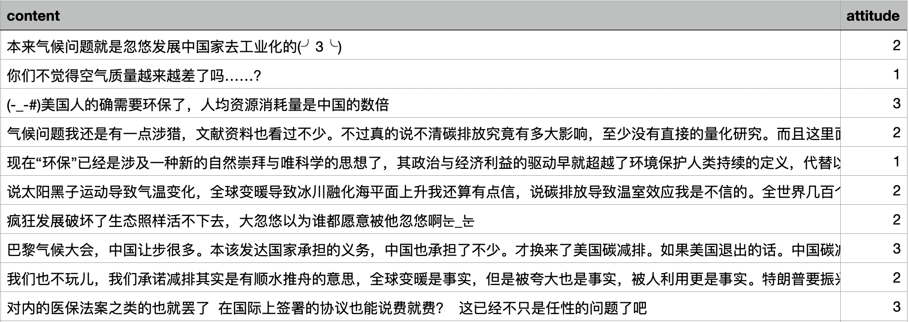
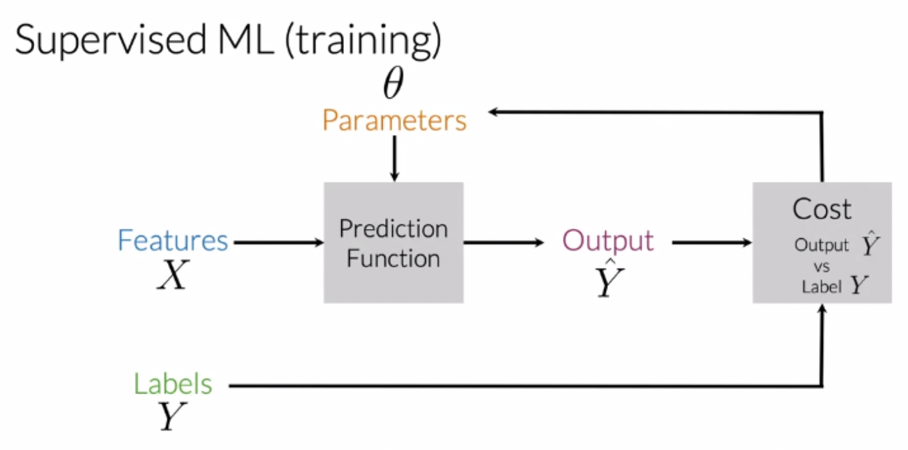
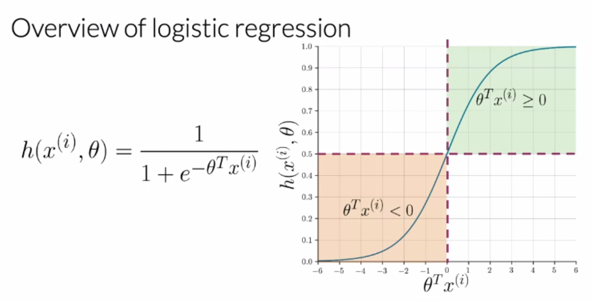
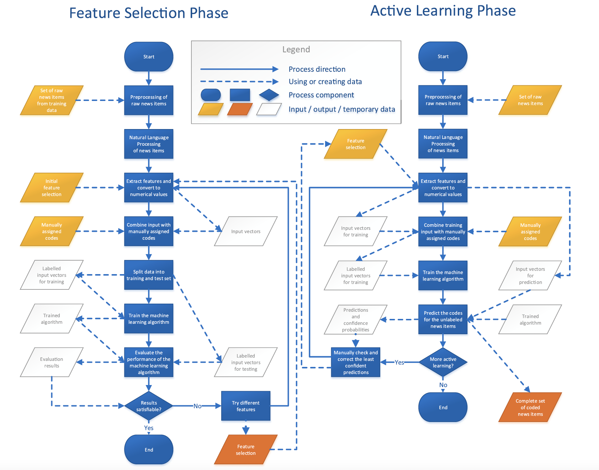
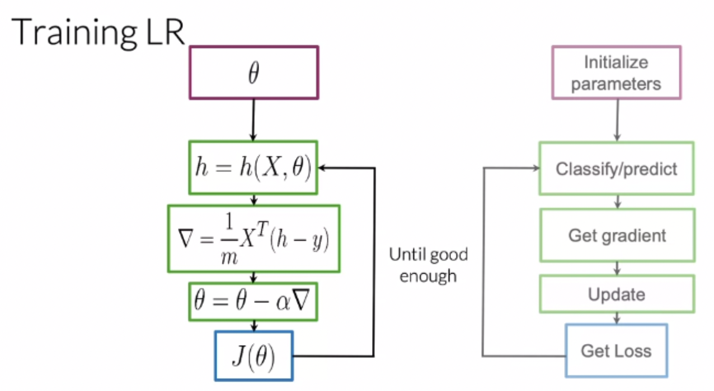
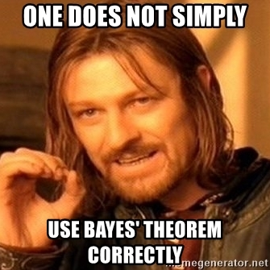
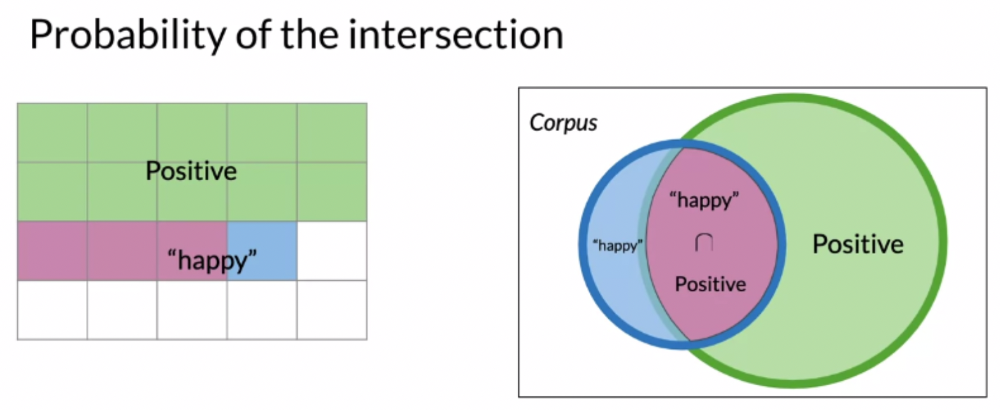

Classifying Texts in Communication Studies¶
- 本次代码及数据下载链接
- 有监督机器学习(Supervised Machine Learning, SML)能够帮助我们做什么样的传播学研究
- 自动化内容分析的重要方法之一 automated content analysis
- 常常被运用于框架研究中：不同的框架具有不同的文本特征 (Burscher et al., 2014; Opperhuizen et al., 2019)
- 最大的优势：根据研究目标，自定义分类
- 有监督与无监督的区别
 photo credit: Ciaraioch
photo credit: Ciaraioch
1.0 Logistic Regression¶
使用logistic regression来实现文本分类的步骤主要有四步：
- 首先的首先，你必须有一个标注好的csv文本作为后续的训练集和测试集！文件格式如下图1所示
- 文本预处理 preprocess a text
- 提取文本特征 extract features from that text
- 用提取出的文本特征来训练模型 use those extracted features and train a model using those
- 测试模型的分类精确率 test your model

**attitude** 1. climate activist 2. climate skeptics 3. neutral or unknown

figure credit: deeplearningAI
- 在这里，我们使用的prediction function又叫sigmoid function，它被定义为：
你可以简单理解为，此处的z是我们输入的向量化后的、用数字表示的文本。通过以上公式计算后，我们可以得到一个（0，1）的数字，即这个词可以被归为哪一个类别的概率。
$$ X_m = [1, \sum_{w} freqs(w,1), \sum_{w} freqs(w,0)] \tag{2}$$
- $X_m$是提取出的文本特征
- 1是定义的bias
- $\sum_{w} freqs(w,1)$是Sum ClassA Frequencies
- $\sum_{w} freqs(w,0)$是Sum ClassB Frequencies
 figure credit: deeplearningAI, 2019
 figure credit: Opperhuizen et al., 2019
 figure credit: deeplearningAI
import os
import numpy as np
import pandas as pd
import jieba.analyse as ana
import jieba
import jieba.posseg as pseg
from sklearn.feature_extraction.text import TfidfTransformer
from sklearn.feature_extraction.text import CountVectorizer,TfidfVectorizer
from sklearn.model_selection import train_test_split, cross_val_score
from sklearn.multiclass import OneVsRestClassifier
from sklearn.model_selection import train_test_split
from sklearn.linear_model import LogisticRegression
from sklearn.metrics import classification_report
my_current_directory = os.getcwd()
my_current_directory
'/Users/liyuhan/python_practice/workshopSML'
1.1 Prepare the Data & Preprocess¶
- 不论是有监督还是无监督都需要进行文本预处理：（自定义词典）分词，去除停用词
- 在这里我们使用罗晨学长之前分享的代码
stopwords = list()
for file in os.listdir("./stop_common/"):
if ".DS_" not in file:
with open("./stop_common/" + file, "r", encoding="utf-8") as f:
for line in f.readlines():
stopwords.append(line.strip())
print(len(stopwords))
# 使用求集合的方式对停用词表进行去重，再转换为列表
stopwords = list(set(stopwords))
print(len(stopwords))
7935 2431
# 构建自定义词典
selfdict = list()
with open("./selfdefineddict.txt", "r", encoding = 'utf-8') as f:
for line in f.readlines():
selfdict.append(line.strip())
print(len(selfdict))
# 对自定义词典进行去重
selfdict = list(set(selfdict))
print(len(selfdict))
with open("./newdict.txt", "w", encoding = "utf-8") as t:
for word in selfdict:
t.write(word + "\n")
# 保存去重后的自定义词典
jieba.load_userdict('./newdict.txt')
Building prefix dict from the default dictionary ...
435 406
Dumping model to file cache /var/folders/g9/_mc6r80x0fg3_5snj5175q_c0000gn/T/jieba.cache Loading model cost 0.627 seconds. Prefix dict has been built successfully.
# 定义分词函数
def tokenize(text):
kept_words = list()
for word, flag in pseg.cut(text):
# 过滤停用词和词数小于1的词
if (word not in stopwords) and \
(len(word) > 1):
kept_words.append(word)
return " ".join(kept_words)
在这里，我们使用一套已经标注好的Bilibili评论文本作为数据集。我们根据用户在评论中表达的态度将用户分为三类：
- 气候变化的支持者 climate activist
- 气候变化的反对者/怀疑者 climate skeptics
- 以及中立者或难以判断确切态度 neutral or unknown
rawdata = pd.read_csv('./new_trainsample.csv') # 读取csv文件
rawdata.shape # 查看文件行列数目，本训练集共有2列 1979行
# 读取训练集并进行清洗
# 修改训练集标注方式
try:
rawdata['parsed'] # 新建名为parsed的列
except:
rawdata['parsed'] = rawdata.content.apply(tokenize) # 对content列使用定义好的分词函数
rawdata.shape
# rawdata['parsed'] = rawdata.parsed.fillna('') ## 如果避词之后存在为空值的行则需要进行fillna处理，本数据无空值行可不进行
(1979, 3)
1.2 Extract Features from Parsed Texts¶
rawdata
| content | attitude | parsed | |
|---|---|---|---|
| 0 | 本来气候问题就是忽悠发展中国家去工业化的(╯3╰) | 2 | 本来 气候 忽悠 发展中国家 去工业化 |
| 1 | 你们不觉得空气质量越来越差了吗……？ | 1 | 空气质量 越来越差 |
| 2 | 气候问题我还是有一点涉猎，文献资料也看过不少。不过真的说不清碳排放究竟有多大影响，至少没有直... | 2 | 气候 一点 涉猎 文献资料 看过 真的 说不清 碳排放 影响 至少 量化 研究 政治 因素 |
| 3 | 现在“环保”已经是涉及一种新的自然崇拜与唯科学的思想了，其政治与经济利益的驱动早就超越了环境... | 1 | 环保 涉及 一种 自然 崇拜 科学 思想 政治 经济 利益 驱动 早就 超越 环境保护 人类... |
| 4 | 说太阳黑子运动导致气温变化，全球变暖导致冰川融化海平面上升我还算有点信，说碳排放导致温室效应... | 2 | 太阳黑子 运动 导致 气温 变化 全球变暖 导致 冰川 融化 海平面 碳排放 导致 温室效应... |
| ... | ... | ... | ... |
| 1974 | 中国现在是世界唯一一个植被覆盖率正在增加的国家了，抗沙勇士功不可没 | 1 | 中国 世界 唯一 植被 覆盖率 增加 国家 抗沙 勇士 功不可没 |
| 1975 | 发达国家出技术 发展中国家出力 别的可以斗 环境问题必须合作 | 1 | 发达国家 技术 发展中国家 出力 环境 合作 |
| 1976 | 高中地理有一道题目就是问对全球气候变暖负首要责任的国家，答案是美国。我觉得这个问题是有失偏颇的。 | 1 | 高中地理 一道 题目 全球 气候变暖 首要 责任 国家 答案 美国 有失偏颇 |
| 1977 | 和美国比烂真的不光荣 | 1 | 美国 比烂 真的 光荣 |
| 1978 | 目前中国正在进行植树造林/退耕还林活动，塔克拉玛干沙漠应该很快要变成丛林了，而且中国是近几年... | 1 | 中国 植树造林 退耕还林 活动 塔克拉玛干沙漠 很快 丛林 中国 近几年 绿化 国家 美国 ... |
1979 rows × 3 columns
## 若使用词频矩阵则调用CountVectorizer
## 若使用TF-IDF则调用TfidfVectorizer
## 下面我们将演示使用CountVectorizer和TfidfVectorizer进行文本向量化表示
vectorizer1 = CountVectorizer()
wordmatrix1 = vectorizer1.fit_transform(rawdata.parsed) # 转为词频矩阵
vectorizer2 = TfidfVectorizer()
wordmatrix2 = vectorizer2.fit_transform(rawdata.parsed) # 转为TF-IDF
print(vectorizer2.vocabulary_) # 打印出每个词语对应的编号
{'本来': 4662, '气候': 4962, '忽悠': 3610, '发展中国家': 2048, '去工业化': 1991, '空气质量': 6128, '越来越差': 7228, '一点': 319, '涉猎': 5269, '文献资料': 4322, '看过': 5897, '真的': 5919, '说不清': 7034, '碳排放': 6013, '影响': 3523, '至少': 6624, '量化': 7612, '研究': 5989, '政治': 4243, '因素': 2446, '环保': 5606, '涉及': 5268, '一种': 336, '自然': 6601, '崇拜': 3251, '科学': 6074, '思想': 3622, '经济': 6299, '利益': 1672, '驱动': 7973, '早就': 4437, '超越': 7214, '环境保护': 5614, '人类': 931, '持续': 3983, '定义': 3002, '地球': 2520, '某种': 4743, '环境': 5613, '反对': 2017, '权利': 4681, '信条': 1160, '太阳黑子': 2827, '运动': 7353, '导致': 3104, '气温': 4977, '变化': 2096, '全球变暖': 1319, '冰川': 1477, '融化': 6786, '海平面': 5229, '温室效应': 5321, '不信': 475, '全世界': 1296, '几百个': 1575, '国家': 2471, '正真': 4870, '工业化': 3261, '并不多': 3391, '之三': 743, '陆地': 7727, '大部分': 2765, '海洋': 5234, '排量': 4068, '温室': 5320, '希望': 3317, '研究员': 5990, '洋流': 5165, '气流': 4976, '臭氧层': 6619, '空洞': 6129, '整天': 4309, '吹嘘': 2293, '二氧化碳': 832, '排放': 4059, '疯狂': 5770, '发展': 2046, '破坏': 5998, '生态': 5688, '照样': 5484, '活不下去': 5179, '玩儿': 5594, '承诺': 3892, '减排': 1535, '顺水推舟': 7875, '事实': 811, '夸大': 2839, '利用': 1669, '更是': 4546, '特朗普': 5552, '振兴': 4016, '制造业': 1700, '回迁': 2440, '产业': 876, '增加': 2601, '世界': 585, '老大': 6431, '羊毛': 6387, '受欢迎': 2088, '禁止': 6036, '过境': 7338, '中国': 670, '干预': 3357, '本事': 4654, '借着': 1173, '敛财': 4277, '很大': 3538, '人类活动': 934, '气候变化': 4964, '原因': 1972, '发达国家': 2069, '气候变暖': 4966, '真实': 5908, '可逆': 2176, '几万': 1541, '亿年': 944, '确实': 6005, '温度': 5324, '波动': 5153, '1500': 17, '第一次': 6169, '工业革命': 3266, '500': 83, '速度': 7493, '几百年': 1577, '时间': 4458, '经历': 6296, '几百万年': 1574, '高温气候': 8026, '高温': 8025, '动植物': 1778, '灭绝': 5412, '变温动物': 2109, '突变': 6140, '只能靠': 2144, '人为': 894, '保护': 1143, '无疑': 4399, '地质学': 2531, '尺度': 3196, '处于': 2616, '两个': 611, '期间': 4637, '间冰期': 7687, '平均温度': 3362, '历史': 1954, '高位': 8001, '生存': 5683, '伪命题': 1050, '角度看': 6912, '西方': 6854, '政客': 4239, '好事': 2881, '坏事': 2543, '永贝里': 5030, '正确性': 4872, '看好': 5882, '西方式': 6856, '自私': 6612, '全球': 1317, '治理': 5136, '一事无成': 224, '不懂装懂': 530, '少女': 3165, '领导人': 7895, '动物园': 1780, '动物': 1779, '此刻': 4879, '幸运': 3400, '自由': 6610, '可叹': 2154, '无数': 4390, '无情': 4386, '大火': 2743, '伤害': 1046, '丧失': 645, '家园': 3057, '夺去': 2844, '生命': 5681, '澳洲': 5389, '消防': 5265, '战士': 3810, '加油': 1760, '遭受': 7530, '不幸': 524, '祈祷': 6028, '平安': 3363, '冷暖': 1508, '90': 99, '摄氏度': 4157, '害怕': 3049, '记得': 6966, '十几年': 1857, '冬天': 1461, '大雪': 2771, '羽绒服': 6413, '勉强': 1799, '一场': 252, '不错': 567, '最冷': 4560, '一件': 229, '不需要': 569, '太厚': 2799, '毛衣': 4946, '过冬': 7332, '坐标': 2550, '厦门': 1989, '2019': 37, '估计': 1054, '无冬': 4372, '最低': 4557, '下雨': 466, '两天': 623, '17': 20, '18': 22, '长袖': 7669, '校服': 4770, '秋裤': 6057, '不存在': 517, '山林': 3238, '早日': 4439, '灭火': 5411, '民众': 4954, '消防员': 5266, '大事': 2681, '感觉': 3749, '有史以来': 4593, '不冷': 483, '小时候': 3144, '那种': 7549, '五六': 847, '衣服': 6811, '心入': 3581, '颤抖': 7911, '衬衫': 6828, '卫衣': 1938, '广东': 3403, '小伙伴': 3116, '上个世纪': 411, '没人管': 5075, '转向': 7283, '虚拟': 6760, '为首': 708, '说白了': 7050, '在乎': 2490, '遏制': 7516, '第三世界': 6172, '崛起': 3252, '阻止': 7719, '进程': 7413, '纳入': 6272, '理论': 5659, '规则': 6899, '制定': 1692, '中和': 669, '新加坡': 4336, '傀儡': 1232, '诺贝尔物理学奖': 7068, '三位': 387, '获奖': 6709, '成果': 3784, '算是': 6209, '一锤定音': 362, '验证': 7979, '气候变化大会': 4965, '意味': 3729, '程度': 6110, '科学界': 6078, '共识': 1365, '催促': 1238, '倡导': 1175, '命运共同体': 2315, '本质': 4665, '国际': 2476, '分歧': 1622, '秩序': 6091, '尝试性': 3181, '整合': 4308, '推卸责任': 4090, '坐下': 2547, '探讨': 4074, '一条': 302, '可行': 2170, '解决': 6914, '措施': 4106, '相互': 5857, '攻伐': 4218, '做出': 1199, '树立': 4764, '榜样': 4833, '揭穿': 4131, '发达': 2068, '强权': 3493, '嘴脸': 2400, '带头': 3322, '思考': 3624, '并存': 3396, '道德': 7519, '大棒': 2731, '面前': 7849, '抗争': 3904, 'how': 145, 'dare': 127, '干脆': 3355, '裸体': 6844, '森林': 4818, '感化': 3742, '美利坚': 6393, '人民': 926, 'blah': 111, '指不定': 3987, 'wuwuyieiwu': 203, '运动会': 7354, '生物进化': 5709, '立冬': 6148, '成都': 3794, '天气': 2787, '冷醒': 1516, '太精彩': 2813, '演讲': 5377, '欧式': 4851, '好奇': 2890, '瑞典': 5661, '这位': 7382, '活宝': 5185, '英国': 6677, '划船': 1642, '坐飞机': 2555, '格雷塔': 4798, '机灵鬼': 4674, '回国': 2424, '读书': 7069, 'stlov': 186, '学生': 2967, '通小': 7486, '胖墩': 6522, '等于': 6188, '事业': 802, '屁事': 3209, '翘课': 6415, '嘴炮': 2398, '引着': 3477, '傻子': 1241, '台前': 2179, '木偶': 4638, '攫取': 4188, '手套': 3833, '为啥': 703, '本子': 4658, '排核': 4063, '污水': 5045, '不见': 555, '王八': 5591, '十五': 1850, '车拜': 7270, '教皇': 4274, '没见': 5107, '一声': 257, '主子': 717, '代表': 983, '政治家': 4247, '制高点': 1702, '谴责': 7102, '趋势': 7232, '活动': 5183, '停不下来': 1216, '状态': 5563, '穷人': 6120, '吃不上': 2192, '科技': 6081, '科学家': 6076, '出面': 1612, '明明': 4467, '技术': 3893, '组织': 6280, '渲染': 5328, '工具': 3271, '选票': 7472, '阴谋论': 7710, '卫士': 1936, '阴谋': 7709, '白人': 5787, '高端': 8029, '逃课': 7464, '方式': 4351, '装病': 6843, '这一': 7376, '幼稚': 3402, '庆怜': 3411, '尊重': 3113, '大自然': 2755, '做起': 1211, '传递': 1044, '能量': 6537, '关注': 1371, '冰冻': 1466, '星球': 4478, '感触': 3750, '跟着': 7242, '保护环境': 1147, '守护': 2980, '耗跌': 6466, '江郎才尽': 5039, '啊啊啊': 2367, '大庆': 2720, '评论': 7000, '资本': 7153, '裹挟': 6847, '目光': 5838, '呼吁': 2308, '一同': 246, '普通人': 4507, '发出': 2037, '微弱': 3571, '光芒': 1274, '声音': 2615, '萤火': 6714, '汇聚': 5033, '推动': 4089, '群体': 6410, '改变': 4206, '极端天气': 4722, '越发': 7221, '频繁': 7901, '说教': 7043, '短浅': 5966, '垃圾': 2563, '蝼蚁': 6782, '改成': 4211, '生存环境': 5686, '生物': 5707, '掠夺': 4070, 'gj': 137, '指指点点': 3992, '政府': 4240, '负责': 7114, '态度': 3615, '近乎': 7360, '拯救': 3971, '磨难': 6022, '异常': 3463, '大使': 2688, '公开批评': 1343, '澳大利亚': 5386, '放任': 4224, '顺便': 7871, '大堡礁': 2707, '资源': 7158, '非洲': 7839, '一大部分': 261, '没够': 5086, '谈论': 7090, '非西方': 7841, '活路': 5192, '老大哥': 6432, '水银': 5021, '污染': 5041, '生意': 5696, '保全': 1138, '外国': 2634, '面孔': 7853, '一句': 244, '专家': 579, '国外': 2470, '着数': 5938, '人人有责': 898, '责任': 7122, '未来': 4646, '无法挽回': 4395, '意识': 3736, '网站': 6374, '转换': 7290, '中文': 681, '专业人士': 576, '视角': 6905, '讲故事': 6972, '通俗易懂': 7485, '重要性': 7602, '方法': 4353, '以此': 995, '抵御': 3934, '带来': 3325, '灾难': 5424, '意义': 3728, '事情': 815, '知识': 5958, '物料': 5527, '过生日': 7345, '愿望': 3757, '减少': 1533, '工作人员': 3269, '只能': 2143, '崽崽': 3255, '选择': 7468, '四海为家': 2417, '阴阳怪气': 7713, '偶像': 1227, '身后': 7264, '粉丝': 6225, '体量': 1083, '倡议': 1176, '带动': 3321, '当今': 3506, '流量': 5204, '社会': 6024, '常见': 3337, '发泄': 2056, '对象': 3100, '发表': 2065, '奇奇怪怪': 2845, '言论': 6936, '未免': 4644, '格局': 4793, '河南': 5122, '暴雨': 4532, '难过': 7782, '朋友': 4632, '捐助': 4025, '略表心意': 5762, '艺人': 6639, '告诉': 2297, '小孩': 3128, '公民': 1345, '承担': 3889, '义务': 742, '先于': 1259, '一步': 309, '提前': 4116, '节制': 6644, '听见': 2277, '欧洲人': 4853, '英国人': 6678, '人均碳排放量': 910, '高居榜首': 8015, '总量': 3644, '全人类': 1298, '视频': 6907, '无国界': 4380, '值得': 1178, '肯定': 6511, '宣传': 3044, '立意': 6150, '名字': 2250, '崽的': 3256, '立场': 6149, '有心': 4602, '办办': 1741, '能力': 6527, '好像': 2883, '刻不容缓': 1706, '重视': 7604, '参与': 1994, '环境污染': 5617, '一系列': 339, '所有人': 3828, '从少': 962, '纸杯': 6277, '塑料袋': 2589, '起到': 7197, '奋斗': 2850, '作用': 1104, '以偏概全': 990, '想着': 3721, '贡献': 7116, '漂亮': 5367, '力所能及': 1736, '无论是': 4415, '精准': 6234, '传教': 1041, '现场': 5629, '努力': 1786, '牺牲': 5557, '一部分': 361, '成全': 3772, '肉蛋': 6497, '奶式': 2875, '洗脑': 5168, '响应': 2337, '号召': 2187, '绿水青山': 6344, '金山银山': 7616, '带头作用': 3323, '很好': 3539, '国人': 2463, '警惕': 6940, 'ngo': 162, '题材': 7905, '很棒': 3545, '多点': 2669, '各方对': 2214, '引导': 3474, '恐龙': 3651, '顺其自然': 7872, '不同于': 506, '路线': 7248, '改造': 4215, '好话': 2904, '怪话': 3633, '虚伪': 6757, '花样': 6661, '人事': 896, '打击': 3844, '阻挠': 7716, '实心': 3020, '无言以对': 4413, '气候变迁': 4967, '自然界': 6605, '规律': 6900, '加快': 1756, '步伐': 4881, '数量': 4300, '食物链': 7936, '顶端': 7868, '白站': 5796, '营销': 6719, '一块': 253, '干实事': 3343, '面子': 7852, '无语': 4416, '前脚': 1723, '自我': 6590, '毁灭': 4913, '扭脸': 3875, '绝壁': 6324, '中国人': 671, '海鲜': 5246, '所需': 3830, '看透': 5898, '德行': 3578, '特别': 5544, '人士': 911, '玩加': 5595, '砝码': 5995, '游戏': 5330, '截止': 3817, '2020': 38, '上半年': 417, '兔子': 1292, '植树造林': 4825, '6646': 90, '万亩': 375, '环保主义者': 5608, '平等': 3370, '高人一等': 7998, '没法': 5101, '命令': 2311, '自觉': 6614, '个人观点': 651, '出发': 1591, '投机倒把': 3900, '亏么': 836, '一群': 343, '同学': 2231, '自习': 6573, '老师': 6438, '看管': 5896, '指望': 3997, '齐心协力': 8097, '正事': 4864, '最难': 4581, '情况': 3682, '匹配': 1833, '100': 7, '队友': 7693, '讨论': 6956, '东方': 601, '好好': 2891, '内容': 1407, '想想': 3714, '生活': 5704, '关系': 1374, '讽刺': 6983, '一个劲': 219, '名头': 2249, '震天响': 7813, '作秀': 1105, '多种': 2670, '鄙视': 7564, '环保少女': 5610, '类似': 6222, '秀民': 6045, '川普': 3259, '骗人': 7980, '光说不做': 1277, '把式': 3894, '说用': 7049, '表达': 6825, '美国': 6394, '地位': 2499, '前提': 1721, '收入': 4195, '几倍': 1547, '反省': 2027, '说得好': 7042, '说个事': 7035, '动员': 1774, '过段时间': 7342, '觉悟': 6908, '赶紧': 7194, '得了吧': 3555, '心知肚明': 3591, '实际行动': 3033, '领导': 7894, '大规模': 2759, '天天': 2784, '种树': 6063, '人均': 909, '好几倍': 2885, '几十个': 1550, '不可避免': 502, '碳排放权': 6014, '发展权': 2049, '体验': 1084, '农耕社会': 1454, '年轻人': 3384, '提倡': 4113, '身体力行': 7261, '比例': 4927, '放到': 4226, '四亿': 2409, '意识形态': 3737, '观念': 6891, '思维': 3623, '衍生': 6807, '多种多样': 2671, '走向': 7180, '却是': 1950, '各种各样': 2217, '财阀': 7121, '政党': 4237, '歧视': 4887, '外表': 2644, '无一例外': 4365, '苹果': 6686, '充电': 1256, '主推': 722, '能源': 6529, '利用率': 1671, '无线': 4405, '充电器': 1257, '不算': 547, '浪费': 5214, '打造': 3862, '形象': 3520, '舒适': 6632, '克扣': 1282, '顾客': 7877, '配件': 7565, '白左': 5791, '听听': 2275, '包括': 1804, '比尔盖茨': 4929, '拉菲特': 3952, '扎克': 3838, '伯格': 1052, '马斯克': 7969, '双赢': 2006, '合作': 2220, '身上': 7256, '环节': 5623, '并未': 3397, '彻底解决': 3526, '供给': 1120, '人口': 903, '平衡': 3372, '结构': 6314, '有待': 4601, '优化': 1023, '慢慢': 3760, '依旧': 1121, '诸多': 7063, '生产力': 5677, '摆正': 4160, '心态': 3584, '实事': 3011, '经典': 6295, '没用': 5104, '花里胡哨': 6665, '玩点': 5602, '实在': 3016, '可惜': 2159, '西式': 6853, '一套': 266, '做一套': 1195, '没讲': 5108, '空话': 6131, '耶稣': 6468, '整活': 4312, '主责': 731, '退出': 7442, '巴黎协定': 3305, '感动': 3741, '一部': 360, '短片': 5967, '呐喊': 2298, '白费': 5799, '我会': 3798, '坚持下去': 2560, '构思': 4727, '经费': 6307, '再加': 1425, '排放权': 4060, '生存权': 5684, '贝格': 7110, '配音': 7570, '打断': 3853, '会议': 1036, '主旨': 726, '真就': 5911, '二极管': 829, '终于': 6287, '辍学': 7304, '小女孩': 3122, '日本': 4430, '没错': 5114, '太好了': 2803, '挑起': 4002, '战争': 3809, '太平洋': 2806, '核废水': 4775, '流氓': 5198, '联合': 6476, '尽整': 3203, '休息': 1017, '会儿': 1032, '好不好': 2879, '口号': 2120, '上街': 444, '行为艺术': 6801, '中式': 678, '三北': 392, '防护林': 7696, '碳中和': 6010, '青山绿水': 7826, '欧美': 4855, '关心': 1370, '制造': 1699, '事件': 803, '教育': 4275, '不到': 490, '永远': 5031, '看不到': 5874, '几颗': 1582, '西方人': 6855, '哈哈哈哈': 2336, '哈哈哈': 2335, '标点符号': 4756, '三观': 409, '正的': 4869, '不配': 566, '政棍': 4242, '目的': 5841, '只不过': 2137, '压制': 1960, '浮于': 5217, '表面': 6827, '早已': 4438, '骨子里': 7986, '洛塔': 5169, '博格': 1923, '换成': 4042, '迅猛': 7325, '人物': 929, '好处': 2887, '出尔反尔': 1598, '动用': 1781, '搞了个': 4140, '乘帆': 762, '跨海': 7246, '电脑': 5745, '动画': 1782, '各国': 2211, '干什么': 3341, '交碳': 871, '提案': 4121, '一头沉': 265, '贫穷': 7142, '不用': 540, '化石': 1817, '美欧': 6403, '世纪': 593, '结论': 6316, '大将': 2713, '瓶装': 5670, '一贯': 352, '坑骗': 2556, '手段': 3835, '宣传片': 3045, '解读': 6929, '四个': 2407, '谨言慎行': 7101, '拿出': 3977, '美帝': 6401, '中心思想': 680, '奔溃': 2852, '24': 52, '小时': 3143, '空调': 6132, '遍地': 7514, '大排量': 2723, '汽车': 5048, '恐怖': 3646, '毛猪': 4944, '武器': 4886, '畜牲': 5761, '玩意儿': 5600, '植树': 4823, '消灭': 5258, '沙漠': 5064, '千万年': 1866, '始终': 2917, '拥有': 3966, '目标': 5839, '悲伤': 3678, '有人': 4587, '通贝里': 7488, '套装': 2855, '时尚': 4449, '老美': 6443, '嘴上': 2395, '正义': 4863, '人权': 922, '手上': 3831, '灭绝人性': 5413, '从来不': 966, '付出代价': 977, '夏天': 2630, '春秋': 4483, '怜悯': 3621, '粮食': 6233, '尴尬': 3192, '藏族人': 6751, '梅里雪山': 4805, '神山': 6032, '山里': 3242, '说实话': 7041, '几年': 1567, '山头': 3237, '程序员': 6109, '头发': 2836, '稀疏': 6107, '飞速': 7932, '后退': 2262, '到时候': 1687, '女神': 2872, '搬家': 4148, '年内': 3375, '国内': 2465, '感受': 3743, '相比': 5865, '几十年': 1553, '发生': 2059, '十天': 1860, '10': 6, '温差': 5322, '反季节': 2016, '降水': 7734, '灾害': 5421, '漂亮话': 5369, '行为准则': 6800, '一百万个': 320, '原子弹': 1981, '延续': 3435, '火种': 5403, '电能': 5744, '水泵': 5008, '树苗': 4765, '一分钟': 235, '贫困山区': 7139, '小学': 3126, '拿来': 3980, '偏见': 1194, '搞不懂': 4139, 'china': 118, '环球时报': 5621, '站队': 6154, '堵路': 2586, '两边': 638, '东西': 603, '建议': 3442, '创死': 1650, '考拉': 6447, '袋鼠': 6831, '泛滥': 5152, '烧掉': 5441, '物种': 5534, '资源库': 7159, '古老': 2133, '发现': 2058, '烧没': 5443, '国之力': 2461, '种族': 6062, '濒临灭绝': 5393, '游行': 5337, '办法': 1744, '解决问题': 6921, '稀缺': 6108, '无所谓': 4388, '太美丽': 2814, '美丽': 6389, '风景线': 7916, '温暖': 5325, '清新': 5302, '空气': 6125, '天国': 2781, '排挤': 4057, '侮辱': 1127, '反正': 2026, '参加': 1995, '乡里': 771, '救火': 4265, '全村': 1311, '专业': 575, '门前': 7675, '团结': 2448, '面对': 7854, '困难': 2453, '火海': 5400, '角度': 6911, '削减': 1710, '污染物': 5042, 'sox': 184, 'nox': 164, 'pm': 170, 'vocs': 198, '排放量': 4061, '气体': 4961, '暂缓': 4517, '吃肉': 2203, '出家': 1597, '不入': 479, '地狱': 2519, '优质': 1028, '至上': 6622, '消耗': 5259, '25': 53, '人才': 919, '喂养': 2376, '宠物': 3036, '下脚料': 462, '半斤': 1885, '酱牛肉': 7574, '顺顺': 7876, '我国': 3802, '上套': 421, '重庆': 7594, '煤矿': 5477, '强行': 3497, '关闭': 1381, '理由': 5655, '妈蛋': 2913, '两万多': 610, '矿工': 5981, '失业': 2831, '配套': 7568, '设施': 6986, '人员': 907, '十万': 1843, '利人': 1663, '制约': 1696, '升级': 1878, '搞垮': 4142, '高科技': 8028, '企业': 1010, '出路': 1608, '传播': 1040, '错误': 7650, '世界观': 590, '价值观': 1000, '老百姓': 6441, '依赖': 1123, '进口': 7409, '自废': 6588, '武功': 4885, '高附加值': 8039, '产品': 878, '节能': 6655, '政策': 4251, '国土': 2468, '生态环境': 5694, '客观': 3041, '数据分析': 4298, '认同': 6950, '没半': 5084, '毛钱': 4947, '无非': 4421, '牵制': 5540, '回形针': 2431, '公平': 1340, '必定会': 3597, '加点': 1762, '牛肉': 5520, '猪肉': 5583, '少不了': 3163, '青菜': 7829, '葱花': 6732, '习惯': 770, '老铁': 6444, '真肉': 5921, '麻蛋': 8070, '秦朝': 6090, '郑国渠': 7556, '了强': 788, '提高': 4128, '新能源': 4343, '占比': 1928, '实际上': 3030, '美元': 6390, '厉害': 1957, '石油': 5977, '挂钩': 3986, '指挥棒': 3994, '节奏': 6645, '建设': 3443, '传统': 1042, '原料': 1983, '大爷': 2746, '柴静': 4751, '恶心': 3666, '小炒': 3149, '木桶': 4641, '羞愧': 6408, '一顿': 366, '对了': 3087, '家乡': 3054, '寄来': 3067, '凤鹅': 1584, '晚上': 4498, '微量元素': 3574, '拾取': 3976, 'suv': 188, '再来': 1428, 'bb': 109, '大力发展': 2691, '核武器': 4780, '核电站': 4784, '气候协定': 4963, '拜登': 3964, '太狠': 2811, '世界性': 588, '难题': 7783, '现代化': 5625, '停止': 1217, '我家': 3803, '卖肉': 1903, '一周': 250, '三次': 404, '饺子': 7954, '不服': 538, '天朝': 2786, '丁院士': 372, '所说': 3829, '绿色': 6348, '更好的': 4539, '中央': 674, '决策': 1503, '部署': 7558, '创新': 1649, '道路': 7524, '定下': 3001, '30': 62, '达峰': 7319, '60': 88, '宏伟目标': 2995, '青少年': 7825, '吃饱': 2206, '加强锻炼': 1755, '增强体质': 2605, '也别': 768, '层面': 3216, '路上': 7247, '高举': 7995, '旗帜': 4364, '几个': 1543, '宵小': 3052, '之辈': 751, '车轮': 7274, '碾成': 6020, '渣子': 5318, '回归': 2430, 'll': 155, 'back': 107, '呼吸': 2309, '绿化': 6342, '面积': 7855, '一次性': 308, '筷子': 6197, '出口': 1593, '大国': 2703, '核废料': 4774, '消费': 5262, '肉类': 6495, '大胆': 2752, '提出': 4114, '清除': 5310, '计划': 6942, '拿手': 3979, '绝技': 6329, '议题': 6961, '障碍': 7768, '谁他妈': 7079, '不让': 558, '老子': 6434, '虚假': 6758, '重点': 7599, '有利于': 4590, '众所周知': 1018, '脖子': 6554, 'maga': 158, '行业': 6799, '相关': 5859, '一举两得': 223, '亚马逊': 861, '签署': 6198, '成功': 3774, '巴黎': 3304, '亮灯': 886, '庆祝': 3412, '媒体': 2931, '家里': 3060, '关了': 1368, '百把': 5812, '蜡烛': 6778, '照亮': 5479, '直播': 5851, '吉他': 2226, '网友': 6372, '那他': 7541, '关灯': 1373, '用电': 5728, '标榜': 4755, '支持': 4190, '理念': 5647, '一支': 291, '要点': 6872, '一桌': 305, '就点': 3188, '点亮': 5430, '观众': 6887, '看得见': 5886, '看不见': 5877, '打赏': 3860, '想要': 3722, '新发明': 4337, '创造': 1651, '发明': 2055, '核子': 4772, '反应堆': 2020, '发电量': 2064, '太阳炉': 2822, '航天器': 6633, '重力': 7589, '极小': 4714, '耗费': 6465, '轻易': 7297, '太空': 2812, '熄灯': 5488, '一碟': 335, '鸡翅': 8057, '巴西': 3302, '雨林': 7791, '欧美国家': 4857, '养猪': 1399, '养牛': 1398, '食用': 7937, '鸡鸭': 8061, '鹅肉': 8064, '配来': 7569, '当年': 3510, '毛熊': 4943, '鹰酱': 8065, '联手': 6480, '试验': 7010, '没怕': 5090, '两弹': 628, '废纸': 3427, '一张': 285, '条约': 4694, '鸡毛': 8056, '令箭': 989, '丁仲礼': 370, '院士': 7745, '围攻': 2455, '不想': 526, '做生意': 1208, '先乱': 1258, '中国日报': 673, '餐桌': 7939, '去掉': 1992, '题外话': 7904, '变好': 2101, '开口': 3448, '双标': 2002, '兄弟': 1249, '祖国': 6030, '羸弱': 6412, '协议': 1896, '天书': 2776, '可笑': 2168, '强到': 3487, '高中生': 7994, '巴黎气候协定': 3306, '看清': 5890, '扼杀': 3885, '大漠': 2742, '戈壁': 3769, '种草': 6071, '坐在': 2549, '房里': 3821, '过分': 7333, '这件': 7381, '敌视': 4262, '决心': 1502, '如果说': 2909, '证据': 6991, '反驳': 2034, '别有用心': 1682, '细品': 6282, '人渣': 928, '冲着': 1499, '工业': 3260, '这帮': 7388, '就别': 3185, '紧盯': 6251, '放大镜': 4229, '局部': 3207, '大旗': 2726, '狂吠': 5565, '算不算': 6206, '多嘴': 2660, '时期': 4453, '力证': 1737, '有没有': 4616, '南北': 1906, '两极': 629, '燃料': 5492, '简单': 6203, '公式': 1344, '随意': 7758, '自然科学': 6606, '学术': 2961, '蒙蔽': 6734, '倾听': 1181, '讲座': 6971, '北极': 1825, '不在意': 508, '死活': 4895, '骗局': 7982, '越来越': 7225, '争抢': 795, '这块': 7385, '诞生': 7015, '开发': 3446, '土地': 2481, '富得流油': 3074, '约束力': 6261, '煽情': 5487, '变得': 2104, '毫无意义': 4949, '冰块': 1469, '弹琴': 3486, 'b站': 114, '弹幕': 3485, '感到': 3739, '担忧': 3945, '恒河': 3652, '三角洲': 410, '长江': 7665, '中下游': 656, '平原': 3359, '佛里达': 1094, '半岛': 1884, '美国纽约': 6398, '荷兰': 6701, '威胁': 2924, '讲道理': 6974, '微乎其微': 3568, '加速': 1765, '想象': 3723, '逃出': 7461, '段时间': 4911, '作死': 1102, '文明': 4318, '框架': 4799, '不行': 552, '日子': 4427, '极化': 4710, '遇到困难': 7512, '解决困难': 6918, '消失': 5251, '难受': 7776, '每次': 4920, '北极熊': 1828, '困境': 2452, '心痛': 3589, '力量': 1738, '渺小': 5339, '快速': 3608, '举措': 739, '村民': 4687, '冰天雪地': 1471, '精灵': 6237, '惨痛': 3697, '画面': 5752, '连续': 7424, '游泳': 5332, '1000': 8, '多公里': 2656, '几天几夜': 1565, '天然': 2792, '健将': 1225, '停泊': 1219, '歇息': 4861, '片刻': 5508, '浮冰': 5218, '觅食': 6902, '迫不得已': 7430, '冒险': 1435, '长途跋涉': 7673, '最终': 4579, '体力不支': 1074, '溺亡': 5348, '北冰洋': 1821, '千千万万': 1868, '变暖': 2106, '周期': 2302, '之中': 746, '停下': 1214, '尽力': 3198, '跟不上': 7241, '保住': 1137, '高级': 8031, '一级': 340, '该死': 7020, '感情': 3745, '乐观': 758, '人类史上': 932, '恶劣': 3663, '脱不': 6557, '脱离': 6561, '融不': 6783, '没什么': 5078, '好怕': 2893, '新闻': 4346, '调侃': 7081, '提到': 4115, '抬杠': 3928, '嘲讽': 2394, '物理学家': 5532, '砖家': 5993, '纳闷': 6273, '同住': 2230, '息息相关': 3657, '平时': 3367, '成批': 3781, '无处': 4381, '栖息': 4767, '捕食': 4031, '冻死': 1520, '饿死': 7957, '杠说': 4691, '肆无忌惮': 6487, '加剧': 1749, '事不关己': 801, '无知': 4401, '无畏': 4398, '出台': 1595, '食品': 7934, '小事': 3115, '节约': 6650, '一度': 282, '一颗': 367, '必学': 3596, '课程': 7077, '万事': 374, '与我无关': 573, '不留': 541, '后代': 2254, '活到': 5182, '早晚': 4440, '灭亡': 5408, '逃不了': 7460, '命运': 2314, '盖亚': 5830, '假说': 1188, '罪魁祸首': 6386, '警告': 6938, '恶果': 3670, '电影': 5740, '大灾难': 2744, '随便': 7753, '做好': 1200, '做不了': 1196, '效果': 4257, '提问': 4126, '极寒': 4713, '回答': 2439, '南北极': 1907, '融入': 6784, '好比': 2898, '可乐': 2149, '冰镇': 1492, '理想': 5649, '水平面': 4998, '冰山': 1474, '淡水': 5280, '密度': 3071, '海水': 5233, '化入': 1809, '初中': 1652, '物理': 5528, '背景': 6519, '条件': 4692, '意味着': 3730, '气压': 4973, '牵一发而动全身': 5539, '水上': 4984, '大惊小怪': 2721, '冰水': 1483, '一小块': 273, '发声': 2042, '现象': 5632, '手风琴': 3837, '大师': 2717, '解释': 6930, '报应': 3921, '认真对待': 6952, '后果': 2258, '没谱': 5110, '受害者': 2086, '子孙': 2933, '一根': 304, '更多': 4537, '南极': 1910, '一般来说': 346, '情况严峻': 3683, '大陆': 2766, '最初': 4561, '在意': 2495, '这场': 7384, '几亿年': 1545, '寿命': 3105, '事实证明': 813, '网上': 6371, '鸵鸟': 8062, '预测': 7885, '天灾人祸': 2790, '可持续发展': 2160, '感到痛心': 3740, '深感': 5286, '无能为力': 4409, '将来': 3111, '适合': 7453, '重开': 7595, '容不下': 3063, '抱歉': 3931, '伦理': 1049, '发射': 2045, '外星': 2639, '心疼': 3588, '周期性': 2303, '那句话': 7544, '沙尘': 5062, '臭水沟': 6620, '的了': 5814, '脱落': 6562, '大小不等': 2715, '化成': 1815, '随之': 7752, '蒸发掉': 6736, '转变成': 7281, '蒸发': 6735, '反复': 2014, '循环': 3565, '物质': 5536, '生态学': 5690, '耸人听闻': 6469, '末日': 4648, '淹没': 5297, '太阳系': 2823, '太阳': 2819, '月球': 4583, '三者': 406, '固有': 2459, '轨迹': 7276, '形态': 3519, '依然': 1122, '运行': 7357, '情形': 3686, '提个醒': 4111, '爱护': 5504, '共建': 1363, '美好': 6400, '新鲜': 4348, '危机四伏': 1944, '草木皆兵': 6692, '盲目乐观': 5845, '勇气': 1797, '担心': 3944, '冰封': 1472, '第四纪': 6186, '冰期': 1481, '中的亚': 686, 'co2': 122, '延缓': 3438, '过程': 7346, '总归': 3638, '降临': 7732, '喜欢': 2382, '看着': 5894, '凸现': 1586, '不关': 481, '我他': 3797, '一年': 280, '返常': 7369, '往年': 3529, '四五个': 2408, '13': 12, '台风': 2183, '往北方': 3527, '三四个': 400, '人工干预': 914, '三天': 401, '大雨': 2770, '自有': 6598, '大大小小': 2709, '几百颗': 1580, '挠痒': 4007, '最烦': 4575, '买车': 776, '必需品': 3599, '热气': 5457, '毒气': 4922, '接受': 4077, '采访': 7583, '淘汰': 5276, '严肃': 643, '话题': 7014, '后排': 2257, '高赞': 8037, '风雪': 7921, '防杠': 7698, '声明': 2614, '节约能源': 6654, '不该': 561, '个体': 652, '工业生产': 3265, '部门': 7559, '居民': 3220, '15': 16, '超过': 7215, '70': 92, '三产': 386, '包含': 1801, '企事业': 1011, '单位': 1899, '部队': 7560, '学校': 2965, '公共场所': 1337, '家庭': 3058, '九牛一毛': 765, '课本': 7075, '小学生': 3127, '敦促': 4282, '改进': 4214, '生产': 5675, '日常生活': 4429, '屁股': 3211, '位置': 1061, '之流': 750, '鼓吹': 8092, '不吃肉': 504, '蛋奶': 6771, 'sui': 187, '越来越热': 7230, '越来越少': 7227, '体里': 1082, '协会': 1894, '打成': 3851, '区里': 1840, '一堆': 254, '厌世': 1966, '讨厌': 6955, '憋着': 3761, '离开': 6043, '相当于': 5863, '退回': 7445, '原始社会': 1977, '终究': 6291, '清晰': 5303, '评为': 6994, '恐慌': 3650, '心中': 3580, '缓解': 6354, '沙漠化': 5065, '某种意义': 4744, '愤怒': 3752, '气候异常': 4971, '是从': 4488, '承受': 3887, '一手': 287, '痛苦': 5782, '近些年来': 7362, '超大': 7209, '飓风': 7924, '海啸': 5225, '归结为': 3504, '惨状': 3696, '悲痛': 3680, '时刻': 4448, '鼠目寸光': 8095, '眼前': 5928, '岁月': 3245, '静好': 7833, '沿海': 5141, '城市': 2568, '电子产品': 5739, '出门': 1611, '汽油': 5047, '无关': 4370, '交通工具': 874, '捐去': 4026, '起码': 7204, '冰河期': 1487, '好多': 2888, '减产': 1529, '没试': 5109, '没人': 5072, 'emm': 132, '工作': 3268, '在我看来': 2496, '起劲': 7198, '和平主义者': 2321, '主义者': 710, '坏处': 2545, '内陆': 1420, '降雨': 7738, '热带': 5453, '增多': 2602, '寒带': 3079, '居住': 3217, '一把': 289, '双刃剑': 2001, '辩证': 7314, '看待': 5884, '报道': 3924, '恶化': 3665, '别怕': 1678, '遥想': 7528, '二叠纪': 826, '海里': 5244, '97': 103, '海洋生物': 5237, '邓氏鱼': 7539, '三叶虫': 398, '一波灭': 316, '绝种': 6332, '复苏': 2624, '世界末日': 589, '受罪': 2090, '企鹅': 1012, '要怪': 6869, '冰盖': 1488, '断裂': 4329, '好抖': 2895, '机灵': 4673, '好笑': 2902, '提醒': 4125, '30000': 64, '人民币': 927, '预算': 7887, '探索': 4073, '300': 63, '读者': 7073, '放弃': 4231, '十万个': 1844, '形式': 3518, '可控': 2162, '核聚变': 4785, '倒退': 1166, '死路一条': 4898, '蔚蓝色': 6747, '科学依据': 6075, '泼冷水': 5163, '要说': 6876, '变冷': 2094, '要来': 6870, '说句实话': 7039, '毒瘤': 4923, '原地': 1973, '升天': 1875, '效率': 4258, '傲慢': 1239, '阻止不了': 7720, '万公里': 378, '截弯取直': 3816, '海岸线': 5227, '长城': 7657, '想一想': 3703, '超级': 7212, '可怕': 2155, '上涨': 435, '渗入': 5315, '地下': 2497, '地下水': 2498, '混合': 5291, '水分': 4990, '土壤': 2482, '留下': 5753, '盐碱化': 5826, '适宜': 7454, '植物': 4826, '生长': 5712, '农业': 1444, '相继': 5867, '没火': 5102, '缓慢': 6352, '增温': 2606, '阶段': 7714, '极热': 4719, '夸张': 2841, '占有': 1927, '往死': 3530, '韭菜': 7865, '交替': 867, '既有': 4424, '始新世': 2916, '更有甚者': 4549, '蓝细菌': 6744, '差点': 3290, '抹掉': 3939, '先是': 1261, '氧化': 4982, '数亿': 4289, '耗尽': 6461, '还原': 7372, '氧气': 4983, '原始': 1974, '致命': 6627, '雪球': 7798, '释放': 7584, '数量级': 4301, '喷发': 2388, '再次出现': 1429, '没辙': 5111, '触发': 6933, '步步': 4883, '严谨': 644, '永存': 5027, '真心话': 5914, '减缓': 1536, '损失': 4038, '拆东墙补西墙': 3946, '现实': 5630, '理智': 5654, '原理': 1986, '怀疑': 3614, '质疑': 7131, '意大利': 3733, '民粹': 4960, '区别': 1835, '屋顶': 3222, '涂成': 5248, '白色': 5797, '人工': 913, '造云': 7496, '反射': 2018, '阳光': 7705, '地表': 2529, '吸收': 2287, '聊胜于无': 6471, '干的事': 3353, '水淹': 5011, '想起': 3724, '嘲笑': 2393, '这群人': 7396, '见效': 6885, '太慢': 2807, '白布': 5792, '实用': 3024, '浓度': 5211, '下降': 465, '十年': 1863, '小团体': 3119, '动作': 1770, '操作': 4181, '短期': 5963, '劳动力': 1791, '产能': 882, '过剩': 7334, '有限': 4631, '冰雪': 1494, '某种程度': 4745, '心意': 3586, '小小': 3132, '对抗': 3094, '以卵击石': 992, '自救': 6595, 'hora': 144, '瑞典女孩': 5662, '暖和': 4519, '滑雪': 5354, '接近': 4081, '尾声': 3206, '缆车': 6349, '停运': 1223, '之际': 752, '环保主义': 5607, '团队': 2451, '积雪': 6098, '防水': 7700, '织布': 6286, '覆盖住': 6881, 'presena': 173, '1993': 29, '年来': 3381, '三分之一': 390, '团体': 2447, '覆盖面积': 6883, '万平方米': 381, 'yysy': 208, '雪场': 7795, '逃避': 7465, '调节': 7087, '损人利己': 4035, '内讧': 1418, '叹息': 2191, '痛恨': 5780, '阴阳家': 7712, '尝试': 3180, '经验': 6308, '床上': 3413, '左手': 3280, '手机': 3834, '右手': 2185, '敲敲': 4303, '键盘': 7653, '用布': 5723, '阅读': 7691, '理解': 5657, '初高中': 1657, '没少': 5088, '语文': 7025, '做法': 1204, '微不足道': 3567, '治标不治本': 5135, '改差': 4210, '改好': 4209, '总比': 3642, '那位': 7543, '瞎操心': 5943, '纵观': 6275, '冰河': 1484, '咋办': 2317, '横向': 4841, '一年四季': 281, '冬夏': 1460, '夏季': 2631, '臭氧': 6618, '愈合': 3727, '试图': 7006, '速度慢': 7494, '锤子': 7652, '热量': 5465, '减低': 1530, '一大堆': 260, '降低': 7733, '盖布': 5832, '太阳光': 2820, '穿过': 6138, '防晒': 7697, '妄想': 2912, '几座': 1568, '法子': 5150, '又蠢又坏': 1999, '懒惰': 3767, '狡诈': 5571, '掩耳盗铃': 4105, '唯一': 2355, '正确': 4871, '高耗能': 8034, '罢课': 6382, '有用': 4617, '听到': 2274, '欧洲': 4852, '高污染': 8024, '其他人': 1385, '科普': 6083, '加盖': 1764, '提上': 4110, '日程': 4432, '科研': 6084, '雪化': 7793, '滑雪场': 5355, '雪线': 7800, '几百米': 1579, '人造': 938, '植被': 4827, '注水': 5159, '机械': 4670, '压布': 1962, '长波': 7667, '辐射': 7305, '80': 95, '两级': 637, '地区': 2500, '关键': 1377, '灰心': 5417, '明说': 4475, '别搞': 1681, '遮掩': 7533, '纪录片': 6265, '同心协力': 2233, '周内': 2300, '20': 31, 'cm': 121, '特制': 5546, '布意': 3312, '呆利': 2296, '水土流失': 4996, '白天': 5790, '光合作用': 1269, '守恒定律': 2979, '开发新': 3447, '临时': 697, '更好': 4538, '闲着没事': 7686, '大用': 2748, '学学': 2959, '家里人': 3061, '一只': 245, '增长': 2608, '途径': 7482, '降雪': 7739, '节气': 6647, '被子': 6834, '杯水车薪': 4706, '阻断': 7718, '冻进': 1522, '尺寸': 3195, '工程机械': 3277, '辅助': 7303, '覆盖': 6880, '未知数': 4647, '投入': 3898, '直升机': 5846, '龙门吊': 8101, '事倍功半': 804, '本能': 4663, '观点': 6894, '特意': 5550, '翻墙': 6417, '谷歌': 7103, '联合国环境规划署': 6478, '论文': 6978, '婊呢': 2928, '在家': 2493, '打着': 3856, '仿佛': 1008, '太阳能': 2824, '供电': 1119, '一时间': 297, '生长期': 5713, '负担': 7113, '二胎': 834, '本国': 4656, '国情': 2472, '乱砍乱伐': 783, '水平': 4997, '谢谢': 7098, '清理': 5307, '回收': 2433, '得不偿失': 3553, '真诚': 5924, '发问': 2071, '闲心': 7685, '教导': 4271, '吃斋念佛': 2200, '烤肉': 5440, '修行': 1163, '佛教': 1092, '佛祖': 1093, '木鱼': 4643, '捅娄子': 4023, '压榨': 1965, '安静': 2987, '不好': 514, '脱裤子': 6563, '放屁': 4230, '舍本逐末': 6630, '隔靴搔痒': 7767, '缘木求鱼': 6360, '装个': 6841, '开车': 3459, '冰川期': 1478, '严格控制': 642, '高效': 8020, '固定': 2458, '方案': 4352, '主义': 709, '全球性': 1320, '保护层': 1146, '区域性': 1839, '区域保护': 1838, '物资': 5537, '平摊': 3365, '马云': 7968, '身家': 7266, '十几亿': 1856, '全国': 1300, '块钱': 2557, '缺乏': 6364, '常识': 3338, '说盖': 7051, '捂化': 4022, '非要': 7842, '宝气': 3010, '圣母': 2487, '运输': 7358, '分担': 1619, '盖住': 5831, '我一': 3796, '享受': 884, '夜郎自大': 2675, '低龄化': 1069, '山上': 3232, '刷绿漆': 1705, '颁奖': 7879, '布要': 3314, '棉被': 4812, '放心': 4232, '智能': 4513, '识别': 7003, '损害': 4039, '可说': 2174, '蛀虫': 6770, '华尔街': 1892, '开到': 3445, '体会': 1070, '一段时间': 313, '中午': 663, '午饭': 1881, '哪一天': 2345, '剩下': 1729, '好家伙': 2892, '整盒': 4313, '牛奶': 5515, '开开': 3454, '几口': 1560, '主食': 733, '垃圾桶': 2565, '滴血': 5366, '华裔': 1893, '女孩': 2868, '节俭': 6643, '不动': 492, '一棵树': 307, '村里': 4688, '剩菜': 1730, '剩饭': 1731, '骨头': 7985, '终结': 6293, '小狗': 3151, '小猫': 3152, '看家': 5883, '护院': 3917, '捕捉': 4027, '老鼠': 6445, '针针': 7622, 'paperclip': 168, '轻轻松松': 7299, '吸着': 2291, '便宜': 1131, '最多': 4563, '最强': 4568, '话语权': 7013, '丑事': 574, '头上': 2835, '称之为': 6100, '不要脸': 554, '霉国': 7816, '扔掉': 3863, '翅膀': 6414, '双腿': 2004, '不贵': 562, '食物': 7935, '引以为戒': 3469, '推荐': 4099, '第一个': 6166, '观摩': 6892, '学习': 2953, '富足': 3076, '铺张浪费': 7641, '全球气候变化': 1321, '漂亮国': 5368, '学校食堂': 2966, '剩饭剩菜': 1732, '底气': 3417, '心虚': 3592, '股东': 6504, '吴松磊': 2280, '背后': 6518, '大象': 2762, '蓝典': 6741, '有个': 4585, '大象公会': 2763, '评价': 6995, '百度': 5811, '旗下': 4362, '混乱': 5290, '博物馆': 1924, '创始人': 1648, '刘大可': 1646, '罗永浩': 6378, '脑子': 6546, '全盘': 1323, '照收': 5483, '片面': 5510, '夹带': 2842, '证治': 6993, '私货': 6050, '数不胜数': 4287, '足球场': 7235, '错误引导': 7651, '方向': 4350, '抹黑': 3940, '足球赛': 7237, '水军': 4988, '刷屏': 1703, '删评': 1658, '控评': 4086, '满屏': 5361, '拉黑': 3954, '回来': 2436, '推手': 4093, '播放': 4180, '揭秘': 4130, '隐患': 7762, '网络': 6375, '记忆': 6967, '人工降雨': 917, '恶意': 3668, '蛔型': 6775, '两面针': 639, '洗白': 5167, '冷静': 1517, '被毁': 6837, '地图': 2502, '错漏': 7649, '两次': 631, '藏南': 6750, '台湾': 2180, '合辑': 2225, 'sp': 185, '006': 1, '出卖': 1590, '國家': 2480, 'bv1nf4y117fm': 113, '甜甜': 5673, '两分钟': 617, '观测': 6893, '低级': 1066, '牛排': 5516, '误区': 7027, '扫雷': 3872, '婚姻': 2930, '断章取义': 4328, '罗翔': 6379, '司法': 2190, '文件': 4315, '法律': 5151, '审判': 3037, '尚未': 3179, '性质': 3631, '实锤': 3029, '字幕': 2938, '盐税': 5827, '公营': 1350, '私盐': 6049, '乱象': 785, '南水北调': 1912, '单面': 1901, '优点': 1024, '成绩': 3793, '彩票': 3521, '亏本': 838, '赔钱': 7163, '摄像': 4153, '监控': 5828, '国内外': 2466, '标题': 4759, '侵犯': 1129, '隐私': 7763, '预防犯罪': 7890, '补充': 6815, '更新': 4544, '和平演变': 2323, 'ps': 174, '这届': 7387, '记性': 6968, '转发': 7280, '分析': 1621, '阴阳': 7711, '外衣': 2643, '造谣': 7507, '百万': 5801, '胡说八道': 6526, '说错': 7058, '世态炎凉': 584, '肯德基': 6512, '拱门': 3972, '进发': 7408, '能造': 6536, '大包装': 2696, '比买': 4926, '小包装': 3118, '划算': 1641, '环保女孩': 5609, '亲爹': 889, '太棒了': 2809, '表演': 6821, '实实在在': 3017, '热带雨林': 5454, '存亡': 2941, '公知': 1347, '眼里': 5933, '没人会': 5073, '巴掌': 3300, '烹饪': 5468, '小米': 3153, '广告': 3404, '强大': 3491, '米粉': 6221, '一口': 243, '冒出': 1433, '一缕': 342, '撒哈拉': 4171, '燃起': 5495, '公主': 1330, '业绩': 596, '兴趣': 1383, '记录片': 6965, '雨季': 7790, '作者': 1106, '落后国家': 6724, '记录': 6964, '一位': 231, '农民': 1451, '联合国': 6477, '气候大会': 4968, '故事': 4254, 'bbc': 110, '多年': 2662, '观察': 6890, '守恒': 2978, '每少': 4919, '厘米': 1968, '不言而喻': 556, '砍树': 5986, '蝴蝶': 6780, '一扇': 286, '山火': 3239, '奢靡': 2859, '时时刻刻': 4452, '源于': 5343, '承担责任': 3890, '风向': 7913, '严厉': 640, '中方': 683, '狂喜': 5566, '天助': 2780, 'ntm': 166, '分点': 1624, '唇寒齿亡': 2350, '严峻': 641, '外贸': 2646, '就业': 3182, '试想': 7007, '未必': 4645, '乌鲁木齐': 754, '下过': 464, '扬起': 3873, '沙子': 5061, '白雪': 5800, '一层': 276, '金闪闪': 7621, '上海': 434, '美国大使馆': 6395, '再也': 1424, '吃成': 2198, '啥样': 2371, '总数': 3640, '撒哈拉沙漠': 4172, '扩张': 3870, '事儿': 805, '纯属': 6269, 'nt': 165, '活不了': 5180, '一体化': 232, '会长': 1038, '祸害': 6034, '砍伐': 5982, '例外': 1114, '挡住': 4008, '嘴边': 2401, '全怪': 1305, '西班牙人': 6858, '伊比利亚': 1014, '火腿': 5404, '粉条': 6227, '小鸡': 3162, '蘑菇': 6753, '火锅': 5406, '地理环境': 2526, '整体性': 4306, '洪水': 5173, '火山爆发': 5397, '小行星': 3157, '撞击': 4176, '祖辈': 6031, '借用': 1172, '早化': 4436, '济南': 5209, '一批': 288, '水资源': 5018, '氢能': 4981, '发挥': 2054, '发电': 2062, '调峰': 7083, '海上': 5221, '风电': 7918, '制氢': 1695, '成本': 3783, '季节': 2947, '波动性': 5154, '较大': 7301, '时用': 4455, '放入': 4225, '储氢': 1236, '可再生': 2152, '清洁': 5305, '优于': 1020, '从小到大': 961, '二十多年': 823, '河面': 5128, '结冰': 6310, '连雪': 7428, '今年冬天': 952, '印象': 1941, '霜降': 7818, '推迟': 4102, '一个月': 222, '零度以下': 7806, '天数': 2785, '短短几天': 5969, '速率': 7495, '本世纪内': 4652, '史无前例': 2184, '特大': 5547, '不太好': 513, '理性': 5648, '陨石': 7747, '爆炸': 5497, '冰河时代': 1485, '迁移': 7323, '无数次': 4391, '几万年': 1542, '恢复': 3654, '塑料': 2588, '核弹': 4776, '灰飞烟灭': 5419, '看得起': 5887, '几千万年': 1557, '特产': 5543, '数十种': 4293, '迟早会': 7429, '痕迹': 5778, '冲刷': 1497, '残渣': 4905, '苟活': 6674, '变为': 2092, '仙女': 980, '消期': 5255, '升温': 1877, '降温': 7736, '典型': 1390, '轨道': 7277, '古气候': 2130, '评估': 6996, '现今': 5624, '东部': 605, '陆架': 7728, '沉积': 5058, '位于': 1060, '欧亚大陆': 4849, '季风': 2948, '独特': 5573, '个乐': 648, '论证': 6980, '高高在上': 8043, '太久': 2798, '忘记': 3603, '海冰': 5223, '消融': 5261, '天然气': 2793, '大气': 2732, '一定量': 268, '地面': 2537, '保温': 1148, '海气': 5232, '相互作用': 5858, '大西洋': 2758, '暖流': 4521, '减弱': 1534, '得不到': 3554, '越来越冷': 7226, '冬季': 1462, '雪盖': 7799, '冻土': 1519, '区域': 1837, '短波': 5965, '太阳辐射': 2825, '感热': 3748, '输送': 7307, '的慢': 5815, '想不起来': 3705, '懂得': 3764, '珍惜': 5638, '馈赠': 7960, '正好': 4866, '车贷': 7273, '人类文明': 933, '逆天而行': 7466, '顺应': 7874, '掌控': 4047, '天灾': 2789, '女人': 2865, '无脑': 4410, '完事': 2989, '石器时代': 5975, '敬畏': 4284, '长久': 7656, '自大': 6585, '起源': 7202, '尘埃落定': 3177, '言之凿凿': 6934, '两米': 636, '解决之道': 6916, '熏心': 5491, '投资': 3902, '尸油': 3194, '明白': 4473, '时代': 4446, '何去何从': 1087, '仁慈': 946, '一如既往': 267, '不堪重负': 510, '赖以生存': 7164, '不远': 563, '控制': 4082, '自发': 6582, '交由': 869, '上帝': 426, '脚下': 6555, '奴仆': 2873, '一切都是': 237, '本性': 4660, '准时': 1525, '到场': 1686, '梅雨': 4806, '返潮': 7370, '惊讶': 3693, '攒钱': 4186, '抽湿机': 3941, '坚强': 2559, '杞人忧天': 4689, '溶解': 5346, '规模': 6901, '高纬度': 8033, '至此': 6625, '人类灭绝': 935, '是因为': 4490, '光照': 1272, '云变多': 840, '水汽': 5005, '变多': 2100, '寒冷': 3078, '流出': 5194, '切断': 1637, '大洋': 2738, '环流': 5620, '低纬度': 1067, '到达': 1689, '高伟': 7999, '真相': 5920, '互联网': 844, '获取信息': 6708, '大小': 2714, '出生': 1604, '96': 102, '02': 2, '非典': 7835, '08': 5, '四川': 2414, '地震': 2536, '金融危机': 7619, '新冠': 4335, '知不知道': 5949, '世界各地': 586, '吹牛': 2294, '哗众取宠': 2342, '吓唬人': 2265, '今年夏天': 953, '河流': 5125, '池塘': 5040, '随处可见': 7756, '干涸': 3350, '芦苇丛': 6657, '夏夜': 2629, '蛙声': 6776, '巨大变化': 3283, '余年': 1090, '疫情': 5766, '近在眼前': 7366, '疫请是': 5768, '再不': 1422, '回改': 2434, '迎来': 7351, '面临': 7848, '对线': 3098, '全是': 1310, '进化': 7406, '不全是': 480, '像是': 1243, '已知': 3296, '信息': 1159, '作品': 1098, '证明': 6992, '文献': 4321, '默认': 8088, '宇宙': 2976, '138': 14, '137': 13, '穿越': 6137, '所作所为': 3824, '醒醒': 7580, '压根': 1964, '外星人': 2640, '混血': 5294, '贩卖': 7134, '焦虑': 5471, '上班': 438, '停滞': 1220, '极慢': 4718, '清洗': 5306, '归零': 3505, '奇怪': 2846, '极难': 4725, '或者说': 3808, '病毒': 5774, '性命': 3630, '脆弱不堪': 6541, '肉体': 6491, '进一步': 7402, '保证': 1151, '永恒': 5028, '弱小': 3483, '可怜': 2156, '重工业': 7593, 'tm': 191, '想到': 3707, '46': 78, '过个': 7329, '几十万年': 1549, '高大': 8011, '上要': 445, '天热': 2791, '低碳生活': 1064, '回头': 2427, '内地': 1405, '减速': 1539, '周期短': 2304, '赶不上': 7191, '照射到': 5481, '冰河时期': 1486, '到来': 1688, '殆尽': 4900, '越来越快': 7229, '阻挡': 7717, '若想': 6675, '先进': 1263, '生产关系': 5676, '200': 32, '总和': 3637, '热循环': 5456, '模式': 4837, '打破': 3857, '地热': 2518, '岩浆': 3248, '变高': 2115, '黏度': 8077, '变小': 2102, '流层': 5197, '地幔': 2507, '地壳': 2504, '板块': 4708, '漂移': 5371, '造山运动': 7501, '自转': 6616, '过度': 7339, '厄尔尼诺': 1953, '拉尼娜': 3949, '表象': 6824, '内部': 1419, '发生巨变': 2061, '地核': 2514, '交界处': 870, '说法': 7047, '争议': 798, '活该': 5189, '代价': 981, '咎由自取': 2327, '自取灭亡': 6583, '逻辑': 7508, '间接': 7688, '临界值': 699, '大地': 2704, '加热': 1763, '来临': 4696, '初步解决': 1655, '抗衡': 3908, '革命': 7859, '冰箱': 1489, '制冷': 1690, '干旱': 3346, '想不到': 3704, '死就死': 4894, '生不如死': 5674, '死亡': 4889, '瞬间': 5946, '痛惜': 5781, '绝望': 6331, '烟消云散': 5437, '化为乌有': 1808, '足迹': 7238, '解开': 6923, '奥秘': 2863, '高等': 8030, '并不知道': 3392, '虚无': 6761, '气候灾害': 4972, '种太': 6060, '耕地面积': 6457, '解决办法': 6917, '免疫系统': 1289, '把握': 3895, '反思': 2021, '现阶段': 5633, '调和': 7082, '想出': 3706, '最大化': 4564, '博弈': 1921, '第二个': 6177, '对此': 3095, '高尚': 8013, '承认': 3891, '变量': 2114, '该不该': 7017, '资格': 7156, '直面': 5856, '迎接': 7350, '妄图': 2911, '苟延残喘': 6673, '物竞天择': 5535, '适者生存': 7458, '优胜劣汰': 1026, '不破不立': 545, '新一轮': 4333, '强度': 3492, '白垩纪': 5789, '晚期': 4499, '利害': 1667, '大气候': 2733, '干涉': 3349, '崭新': 3254, '演化': 5373, '孑余': 2936, '旧时代': 4434, '退场': 7446, '弓纲': 3468, '很快': 3541, '分野': 1631, '肉食': 6498, '种里': 6073, '分化': 1616, '素食': 6249, '植食': 4828, '种群': 6069, '掠食': 4072, '肉食动物': 6499, '肉食者': 6500, '周而复始': 2305, '亚种': 859, '杂食': 4680, '素食主义者': 6250, '奇葩': 2847, '一看': 329, '开头': 3452, '瞎说': 5945, '战线': 3813, '穹顶之下': 6123, '纪绿片': 6266, '经是': 6298, '中期': 684, '形势': 3515, '力度': 1735, '增强': 2604, '明显改善': 4469, '近十年': 7365, '忽视': 3612, '舍不得': 6629, '高水平': 8023, '曼哈顿': 4553, '洛杉矶': 5170, '威尼斯': 2923, '海浪': 5239, '吞噬': 2266, '数千万': 4294, '被迫': 6839, '棺材': 4821, '落泪': 6727, '数据': 4297, '东北': 599, '最热': 4576, '27': 56, '28': 57, '时段': 4454, '一两天': 215, '31': 65, '32': 66, '离谱': 6044, '多度': 2663, '之上': 744, '36': 68, '研究生': 5991, '1861': 23, '1890': 25, '平均气温': 3361, '空穴来风': 6130, '废柴': 3423, '奏乐': 2851, '2060': 46, '2080': 47, '平均': 3360, '45': 76, '频率': 7899, '50': 82, '广州': 3405, '下雪': 467, '冤案': 1459, '推进': 4101, '配合': 7567, '说不定': 7033, '活着': 5187, '下一代': 450, '安稳': 2986, '中叶': 668, '概率': 4832, '大于': 2682, '95': 101, '冷热': 1511, '顶点': 7867, '第二层': 6180, '瓶子': 5669, '飙升': 7926, '415': 73, 'ppm': 172, '万年': 382, '前无古人': 1722, '一两百年': 218, '几亿': 1544, '无家可归': 4384, '协定': 1895, '2100': 49, '迫在眉睫': 7433, '准确': 1526, '职业': 6473, '金钱': 7620, '权力': 4682, '仅仅': 947, '模型': 4836, '脚步': 6556, '真傻': 5904, '妨碍': 2915, '稳定': 6115, '失控': 2832, '能源技术': 6531, '吸取': 2284, '预计': 7889, '博世': 1918, '品牌': 2331, '项目': 7870, '符合': 6165, '推广': 4092, '本土': 4657, '外面': 2649, '一滴': 317, '当初': 3508, '上学': 422, '当成': 3512, '教育片': 4276, '没过': 5112, '坏人': 2544, '蛋糕': 6774, '长大': 7659, '后才': 2256, '有种': 4624, '外国人': 2635, '更早': 4545, '充沛': 1254, '黄土高原': 8072, '葱绿': 6731, '中原': 667, '中心': 679, '明末': 4472, '明朝': 4471, '北方': 1824, '南方': 1908, '内涝': 1409, '洞庭湖': 5171, '淡水湖': 5281, '优势': 1022, '顺天': 7873, '行才': 6804, '智慧': 4511, '叫嚷': 2146, '四年': 2415, '博士': 1920, '高数': 8021, '便是': 1132, '人与自然': 893, '和谐': 2326, '共处': 1361, '资金': 7160, '干扰': 3345, '宏观': 2996, '并使': 3395, '实践': 3028, '峰谷': 3250, '有名有姓': 4594, '自然规律': 6608, '经受': 6297, '整体': 4305, '不容忽视': 521, '寒潮': 3082, '变更': 2107, '诺贝尔': 7066, '物理奖': 5529, '危机': 1943, '十二月份': 1849, '辽宁': 7316, '零上': 7802, '三十多年': 393, '十二月': 1848, '年年': 3380, '几天': 1564, '犊子': 5561, '借口': 1170, '认清': 6951, '您老': 3676, '数字': 4296, '产出': 877, '巨量': 3286, 'shi': 182, '下位': 452, '受制于': 2084, '粗放': 6228, 'si': 183, '用户': 5726, '主流': 727, '提升': 4117, '可燃冰': 2164, '甲烷': 5732, '大气层': 2735, '哥本哈根': 2343, '大会': 2685, '工厂': 3274, '根本原因': 4788, '主动': 715, '泄露': 5144, '以过': 998, '体积': 1078, '03': 3, 'ok': 167, '总体': 3635, '初才': 1653, '回升': 2422, '小冰期': 3117, '赤道': 7177, '散发': 4279, '变低': 2093, '下个世纪': 451, '不成问题': 531, '突破': 6141, '缩短': 6363, '没事': 5070, '喝喝': 2383, '较高': 7302, '地方': 2512, '愿不愿意': 3754, '做点事': 1206, '反噬': 2013, '自以为是': 6575, '事实上': 812, '毫米': 4952, '实话': 3026, '不在乎': 507, '大面积': 2772, '促使': 1133, '医疗': 1842, '救灾': 4266, '做足': 1212, '折腾': 3912, '板上钉钉': 4707, '冰层': 1473, '雨水': 7792, '难搞': 7779, '真不知道': 5901, '飞出去': 7927, '一天天': 263, '支撑': 4193, '脆弱': 6540, '送走': 7452, '危难': 1947, '太迟': 2817, '一己之私': 277, '付出': 976, '付之一炬': 974, '死去': 4893, '管不着': 6212, '节约用水': 6651, '举动': 736, '品质': 2333, '母亲': 4915, '贪婪': 7136, '挥霍': 4015, '快乐': 3604, '一瞬间': 331, '陪葬': 7748, '脊背': 6544, '发凉': 2036, '资本家': 7155, '注重': 5160, '了得': 789, '罪过': 6385, '敌人': 4260, '可悲': 2158, '原罪': 1988, '泪目': 5161, '无可奈何': 4378, '开心': 3456, '顶峰': 7866, '大家伙': 2712, '适应能力': 7457, '还强': 7374, '生病': 5711, '一篇': 337, '文章': 4324, '事态': 814, '无奈': 4382, '瘦骨嶙峋': 5784, '逐年': 7480, '递增': 7481, '用力': 5719, '算好': 6208, '资本主义': 7154, '标的': 4757, '博主': 1919, '微博': 3569, '开水': 3458, '变厚': 2098, '破冰': 5997, '流浪': 5201, '为生': 706, '熊会': 5489, '野生动物': 7609, '生活习惯': 5705, '一说到': 351, '比烂': 4933, '外卖': 2633, '鬼子': 8044, '近年': 7367, '说话': 7053, '百年': 5809, '暴露': 4533, '峰值': 3249, '一朝一夕': 298, '转头': 7286, '掐住': 4048, '不许': 559, '萨德': 6720, '台湾海峡': 2181, '南海': 1913, '群岛': 6411, '分裂': 1627, '恶毒': 3671, '是否是': 4489, '回忆': 2432, '十五年': 1851, '几场': 1563, '类比': 6224, '足够': 7234, '承受能力': 3888, 'world': 201, 'worse': 202, 'day': 128, '成立': 3792, '基金': 2580, '定点': 3007, '适量': 7459, '投放': 3899, '污染环境': 5043, '抛弃': 3914, '肮脏': 6510, '恶劣影响': 3664, '绝大多数': 6325, '视而不见': 6904, '计算': 6945, '一小部分': 275, '积极行动': 6095, '无济于事': 4397, '93': 100, '86': 97, '印度': 1940, '19': 26, '俄罗斯': 1135, '48': 81, '撇清': 4166, '倒霉': 1168, '远见': 7418, '眼前利益': 5929, '可不是': 2148, '好消息': 2899, '救救': 4264, '丧心病狂': 646, '捕鲸': 4032, '海豚': 5242, '排核废水': 4064, '摆台': 4158, '面上': 7847, '火烧': 5402, '大半年': 2698, '感慨': 3746, '中连': 694, '毛毛': 4942, '无力': 4373, '全面实现': 1326, '鲜明对比': 8051, '扯远': 3879, '事物': 817, '为先': 702, '别提': 1680, '大型': 2705, '帮帮': 3331, '濒危': 5394, '太晚': 2808, '学会': 2954, '相处': 5862, '使劲': 1111, '退耕还林': 7448, '害虫': 3051, '冷越': 1514, '热越': 5464, '湿润': 5342, '古新世': 2129, '生态灾难': 5693, '引发': 3472, '中断': 682, '极速': 4724, '北美': 1832, '山脉': 3240, '影响不大': 3524, '公交车': 1332, '夏初': 2627, '秋末': 6055, '司机': 2189, '车上': 7268, '车窗': 7271, '人关': 900, '窗子': 6144, '小缝': 3155, '通风': 7492, '很小': 3540, '靠着': 7845, '拍摄': 3956, '出名': 1596, '副总统': 1734, '曝光': 4534, '泳池': 5162, '恒温': 3653, '用电量': 5729, '记不清': 6962, '百倍': 5803, '起步': 7201, '奈何': 2849, '取之尽': 2072, '锱铢': 7654, '用之如': 5715, '泥沙': 5157, '刷牙': 1704, '水龙头': 5023, '太小': 2804, '本该': 4664, '流向': 5195, '扣下来': 3865, '修复': 1162, '水循环': 4999, 'bug': 112, '就读': 3191, '高中': 7991, '公立学校': 1348, '16': 18, '节省': 6649, '抵制': 3932, '体育课': 1080, '凉快': 1527, '东水西': 602, '固沙': 2460, '涵养': 5274, '水源': 5012, '警醒': 6941, '毛子': 4941, '最惨': 4570, '人大': 912, '教室': 4270, '笑话': 6164, '发好': 2044, '有远见': 4626, '缺水': 6370, '波及': 5155, '五亿': 845, '大肆': 2750, '黄河': 8073, '珠江': 5641, '窘迫': 6145, '吸取教训': 2285, '惊醒': 3694, '陷入': 7749, '停电': 1221, '事故': 816, '例子': 1115, '白猪': 5793, '一天到晚': 262, '主才': 721, '法国人': 5149, '取暖': 2076, '烧柴': 5442, '抬头': 3927, '套路': 2857, '假装': 1186, '发起': 2067, '践行': 7253, '研发': 5988, '利用效率': 1670, '奢侈': 2858, '带英': 3327, '雾都': 7810, '痛定思痛': 5779, '房顶': 3822, '梯子': 4809, '同袍': 2242, '醒悟': 7579, '预言': 7888, '要命': 6867, '矛头': 5947, '对准': 3090, '背锅': 6521, '真是太': 5915, '令人': 986, '2035': 43, '初步': 1654, '2050': 45, '超级大国': 7213, '逼赖赖': 7509, '全球化': 1318, '德克萨斯州': 3575, '龙卷风': 8098, '尊严': 3112, '好看': 2901, '2110': 50, '没了': 5069, '帮子': 3330, '可恶': 2157, '投身': 3903, '敬佩': 4283, '圈钱': 2479, '难以': 7771, '开启': 3449, '白种人': 5795, '巴不得': 3297, '无力回天': 4374, '黄种人': 8075, '与我何干': 572, '黑人': 8078, '落后': 6723, '韩国': 7863, '手里': 3836, '垃圾处理': 2564, '仇恨': 951, '是管': 4491, '叨叨': 2136, '霸权': 7821, '尽力而为': 3199, '吃不消': 2193, '每人': 4918, '强求': 3494, '这么久': 7377, '畜牧业': 5760, '外排': 2637, '名为': 2245, '谋利': 7092, '停止使用': 1218, '吸管': 2292, '灯塔': 5416, '何在': 1088, '可不': 2147, '光会': 1266, '耍嘴皮子': 6454, '风景': 7915, '独好': 5572, '白皮': 5794, '很漂亮': 3548, '光鲜': 1280, '大饼': 2773, '显示': 4493, '暗讽': 4526, '称为': 6099, '不知': 542, '民族': 4957, '填补': 2596, '功劳': 1747, '令人作呕': 987, '贬低': 7144, '刻意': 1707, '无视': 4412, '环境治理': 5619, '窟窿': 6147, '靓丽': 7831, '血汗': 6791, '扒拉': 3839, '干干净净': 3344, '对不起': 3086, '样子': 4771, '共生': 1364, '碳达峰': 6019, '潜台词': 5381, '药丸': 6700, '就行了': 3190, '占领': 1930, '高地': 8009, 'pua': 175, '这老': 7397, '绅士': 6281, '我方': 3804, '赞同': 7172, '英媒': 6679, '指责': 4000, '光说不练': 1278, '行径': 6803, '人进沙退': 937, '拦路': 3970, '静坐': 7832, '英联邦': 6682, '应对': 3415, '四部曲': 2420, '第一步': 6170, '宣称': 3047, '第二步': 6182, '第三步': 6175, '察觉': 3084, '第四步': 6185, '下次': 460, '早点': 4442, '吉姆': 2227, '哈克': 2334, '各项': 2219, '改良': 4212, '酝酿': 7573, '总方针': 3641, '今非昔比': 955, '确立': 6007, '行政': 6805, '升华': 1874, '长足进步': 7670, '面貌': 7857, '为之一新': 701, '伯纳德': 1053, '急剧': 3627, '捞钱': 4034, '胆子': 6515, '危言耸听': 1945, '请求': 7060, '出战': 1599, '遵守': 7536, '退群': 7447, '条条框框': 4693, '担当': 3943, '不通': 565, '去世': 1990, '损坏': 4037, '玩完': 5598, '重启': 7590, '饲养': 7951, '分钟': 1632, '大方向': 2725, '野外': 7607, '依附': 1124, '小姑娘': 3124, '小丑': 3114, '看不起': 5878, '存疑': 2945, '作文': 1101, '零排放': 7807, '嘿嘿嘿': 2403, '爬升': 5500, '得知': 3562, '永不': 5024, '使者': 1113, '阻碍': 7721, '因噎废食': 2442, '枪毙': 4734, '一无是处': 296, '英语': 6683, '动保': 1771, '女权': 2870, '乱华之本': 779, '强迫性': 3499, '人能': 936, '评头论足': 6997, '需求': 7812, '欲望': 4858, '寻找': 3103, '鬼畜': 8045, '全明星': 1309, '瑞典少女': 5663, '各处': 2212, '种植': 6064, '善良': 2377, '不懂事': 529, '幕后': 3340, '喷下去': 2387, '少男': 3170, '斩草': 4326, '除根': 7746, '春风吹又生': 4486, '概括': 4831, '眼中': 5926, '天真': 2795, '成天': 3778, '说炸': 7048, '科幻片': 6080, '看多': 5881, '末路': 4650, '能算': 6534, '老几': 6428, '用不着': 5714, '人祸': 930, '偷着乐': 1231, '生物链': 5710, '虐待': 6756, '旗号': 4363, '笑笑': 6163, 'up': 192, '深刻': 5282, '破坏力': 5999, '毛囊炎': 4940, '市场': 3307, '走走': 7185, '不介意': 472, '孤陋寡闻': 2952, '好丑': 2880, '脱出': 6558, '摇篮': 4163, '消耗品': 5260, '买辆': 777, '货车': 7127, '省着': 5872, '爱惜': 5503, '撑到': 4167, '有钱': 4628, '开坏': 3451, '完蛋': 2994, '人力': 901, '背货': 6520, '好人': 2882, '敬谢不敏': 4285, '威逼': 2925, '弄出来': 3464, '演员': 5375, '包装': 1805, '造孽': 7500, '小女生': 3123, '成人': 3771, '塑造成': 2590, '上流社会': 433, '内心': 1408, '复杂性': 2623, '重塑': 7591, '受伤': 2082, '进化论': 7407, '演变': 5374, '合法': 2224, '主题': 732, '亵渎': 891, '疯子': 5769, '辩倒': 7311, '误导': 7028, '惯用': 3701, '埃及': 2567, '总统': 3643, '推翻': 4098, '提及': 4118, '百姓': 5808, '作出': 1097, '只字不提': 2141, '抨击': 3925, '珠三角': 5640, '殊不知': 4902, '代工厂': 982, '受命': 2085, 'csr': 125, '喷得': 2391, '体无完肤': 1075, '沦为': 5118, '牺牲品': 5558, '批评': 3884, '几十亿': 1551, '特么': 5542, '答应': 6192, '太饱': 2828, '实则': 3014, '恰烂': 3659, '小孩儿': 3129, '邪教': 7552, '娃娃': 2926, '人长': 940, '智商': 4510, '傻会': 1240, '漫长': 5379, '不乏': 469, '说起': 7055, '服务': 4633, '病态': 5773, '鼓励': 8091, '意图': 3731, '过量': 7348, '畜牧': 5759, '放牧': 4233, '农耕': 1453, '额外负担': 7910, '摄入': 4154, '营养': 6716, '饲料': 7953, '身体': 7260, '转化': 7278, '人体': 899, '麻省理工': 8069, '大学': 2711, '统计': 6335, '转换率': 7291, '百分之一': 5805, '百分之': 5804, '绝大部分': 6326, '肌肉': 6501, '肥肉': 6508, '内脏': 1414, '血液': 6794, '不人道': 471, '人工繁殖': 915, '变异': 2103, '天生': 2794, '繁殖': 6254, '细菌': 6285, '感染': 3747, '抗生素': 3907, '抗体': 3905, '猪瘟': 5582, '体现': 1077, '悬崖': 3677, '真心': 5913, '来之不易': 4697, '批判': 3881, '取其精华': 2073, '糟粕': 6240, '中华文化': 665, '极端气候': 4723, '说到底': 7038, '捞取': 4033, '两年': 625, '面试': 7856, '保送': 1153, '名校': 2252, '毕业': 4938, '积累': 6097, '组党': 6278, '从政': 965, '吃饱了撑': 2207, '不利于': 489, '竞争力': 6156, '闷声': 7689, '发大财': 2043, '滑稽': 5353, '官员': 2999, '找到': 3886, '一名': 247, '画家': 5751, '一副': 239, '桑伯格': 4803, '蚂蚁': 6767, '林业': 4728, '北京': 1819, '土著': 2484, '天使': 2778, '蓝天': 6742, '舒服': 6631, '走极端': 7181, '从我做起': 964, '提议': 4124, '颜值': 7907, '高点': 8027, '昆虫': 4465, '类别': 6223, '很丑': 3532, '停留': 1222, '发展中': 2047, '浮夸': 5220, '表情': 6820, '情感': 3687, '做作': 1198, '姿态': 2921, '如是说': 2908, '过吐': 7336, '不亚于': 470, '荤餐': 6699, '十六岁': 1854, '宣扬': 3046, '感谢': 3751, '自称': 6613, '无业游民': 4366, '存在感': 2943, '满足感': 5364, '存量': 2946, '增量': 2607, '星空': 4479, '旅游景点': 4359, '实际意义': 3031, '过更': 7341, '糟糕': 6241, '有毒': 4614, '高出': 8003, '数倍': 4290, '前几次': 1716, '尸体': 3193, '铺满': 7642, '阳痿': 7706, '花朵': 6660, '判断能力': 1661, '成熟': 3789, '不切实际': 486, '报以': 3918, '厌恶': 1967, '唾弃': 2360, '长处': 7658, '听题': 2279, '马里兰大学': 7972, '留学生': 5757, '香甜': 7967, '大妈': 2710, '却说': 1951, '臭味': 6617, '检验': 4811, '真理': 5918, '唯一标准': 2356, '主观': 728, '具体分析': 1388, '解决矛盾': 6920, '矛盾': 5948, '同一性': 2229, '一代': 226, '寄托': 3066, '机会': 4667, '口诛笔伐': 2126, '最佳': 4558, '高一': 7987, '说不': 7032, '高三': 7988, '功利': 1746, '跨服': 7245, '聊天': 6470, '站上': 6153, '信任': 1156, '扩散': 3871, '请问': 7062, '巨资': 3285, '内外': 1406, '臭河': 6621, '环境友好': 5615, '败类': 7125, '玻璃心': 5636, '指标': 3998, '耍流氓': 6455, '冷酷': 1515, '移民': 6106, '晚点': 4501, '扯皮': 3878, '走到': 7179, '发言': 2066, '张口': 3479, '耗歹': 6463, '儿油': 1244, '一步步': 310, '炒作': 5428, '想法': 3720, '偏离': 1193, '政坛': 4238, '封面': 3109, '居心叵测': 3219, '脑瘫': 6549, '小屁孩': 3134, '精神': 6238, '言行': 6935, '计较': 6947, '布尔乔亚': 3311, '理想主义': 5650, '制造矛盾': 1701, '实事求是': 3012, '联系实际': 6481, '正道': 4876, '挥舞': 4014, '敲打': 4302, '守住': 2977, '没饭': 5117, '吃饭': 2205, '身为': 7258, '身边': 7267, '升高': 1880, '水灾': 5014, '多地': 2661, '降水量': 7735, '超标': 7211, '历年': 1955, '持续时间': 3985, '最久': 4556, '十字路口': 1862, '否认': 2270, '小幅度': 3139, '客观事实': 3042, '原始部落': 1979, '风调雨顺': 7919, '自然灾害': 6602, '太多人': 2800, '上边': 447, '杯弓蛇影': 4705, '诺奖': 7065, '政治化': 4245, '潮汐': 5384, '用于': 5716, '缓冲': 6350, '巨变': 3281, '温和': 5319, '包容性': 1803, '孕育': 2937, '必要条件': 3598, '大肆挥霍': 2751, '延误': 3439, '灭顶之灾': 5415, '束缚': 4690, '气象': 4978, '光靠': 1279, '少数几个': 3169, '根本无法': 4791, '扭转': 3876, '大局': 2716, '上比': 432, '多倍': 2655, '含量': 2272, '快得多': 3606, '偏北': 1191, '出汗': 1601, '大做文章': 2689, '防疫': 7702, '各类': 2218, '无穷尽': 4403, '越学越': 7222, '稳定增长': 6116, '新生儿': 4340, '降世': 7731, '废弃': 3421, '云泥之别': 843, '不难理解': 568, '微观粒子': 3573, '终有': 6289, '统一': 6333, '等待': 6190, '先驱者': 1264, '敏锐': 4263, '窒息': 6142, '某一': 4740, '戛然而止': 3815, '尘封': 3178, '深思': 5285, '新一代': 4332, '主导权': 720, '独立': 5574, '打压': 3846, '崩溃': 3253, '但以': 1057, '现有': 5631, '赛跑': 7170, '出不': 1587, '溺死': 5349, '否定': 2269, '相比之下': 5866, '倾向': 1180, '母星': 4916, '地质': 2530, '资料': 7152, '这段': 7394, '极熱': 4720, '看笑话': 5895, '诺贝尔奖': 7067, '中立': 690, '冷气': 1509, '暖气': 4520, '绝不会': 6322, '而令': 6452, '隐隐': 7765, '夹杂着': 2843, '年间': 3386, '几百度': 1578, '不应': 525, '最小化': 4566, '自断': 6596, '双臂': 2005, '风险': 7920, '抵抗力': 3936, '屏幕': 3224, '一二': 225, '几次': 1570, '电风扇': 5749, '赞美': 7174, '权威': 4683, '半信半疑': 1883, '复旦': 2622, '赵斌': 7189, '废食': 3429, '拖拉机': 3962, '工农': 3272, '瓜皮': 5667, 'xd': 204, '请来': 7059, '应付': 3414, '局面': 3208, '别误会': 1683, '说服': 7045, '打死': 3854, '冤有头': 1458, '债有主': 1177, '看清楚': 5891, '大义': 2680, '安格鲁': 2985, '撒格逊': 4173, '致力于': 6626, '欧盟': 4854, '打倒': 3842, '欧元': 4850, '脱欧': 6560, '苏格兰': 6670, '竞争对手': 6157, '爱尔兰': 5502, '民意': 4956, '法国': 5148, '那群人': 7550, '最起码': 4580, '暂时': 4515, '吃素': 2202, '牧畜': 5523, '减半': 1531, '真够': 5906, '喝水': 2384, '不害': 518, '意见': 3734, '远古': 7415, '红烧肉': 6259, '三哥': 399, '用纸': 5730, '上大': 419, '用手': 5727, '学家': 2960, '这书': 7378, '共鸣': 1366, '销量': 7645, '作家': 1099, '惊到': 3691, '那大': 7545, '游泳池': 5333, '电热': 5742, '激起': 5391, '抗议': 3909, '涨价': 5271, '开放': 3457, '冷冻': 1506, '稳定物价': 6117, '激进': 5392, '回到': 2421, '猴子': 5586, '啥时候': 2370, '古代': 2127, '游牧': 5334, '碧水': 6009, '被动': 6832, '替罪羊': 4554, '打工': 3849, '一辈子': 357, '种粮': 6068, '种菜': 6072, '果树': 4732, '养殖': 1394, '没事干': 5071, '缺德事': 6368, '有一': 4584, '种地': 6059, '锅扣': 7648, '一刀切': 234, '危害': 1942, '牧业': 5521, '智障': 4514, '游行示威': 5338, '打嘴': 3848, '务实': 1768, '餐盘': 7941, '转型': 7284, '工艺': 3278, '有时候': 4612, 'nb': 161, '害死': 3050, '吃得饱': 2197, '说真的': 7052, '变热': 2111, '小将': 3131, '冲冲': 1496, '加大力度': 1752, '好玩': 2900, '作何': 1096, '观音土': 6897, '农场主': 1449, '看似': 5880, '吃不饱': 2195, '决议': 1504, '人口减少': 904, '一半': 241, '请灭': 7061, '霸来': 7822, '响指': 2338, '没有人比我更懂': 5096, '走错': 7187, '当回事': 3509, '猜测': 5580, '沿海地区': 5142, '暴力': 4528, '分子': 1617, '轰轰': 7295, '辛辛苦苦': 7308, '吃饱撑': 2208, '觉着': 6909, '排高': 4069, '这项': 7401, '陷阱': 7750, '推出': 4087, '荷兰政府': 6703, '对外': 3092, '同意': 2237, '治安': 5133, '否则请': 2268, '生殖': 5703, '情操': 3688, '情商': 3684, '堪比': 2585, '阿凡达': 7723, '蓝精灵': 6743, '背叛': 6517, '让给': 6957, '荷兰人': 6702, '养殖业': 1395, '牛羊猪': 5519, '乱七八糟': 778, '的的': 5816, '打猎': 3855, '石头': 5976, '推到': 4088, '牛会': 5513, '莫名其妙': 6705, '一本正经': 301, '推行': 4100, '电动汽车': 5735, '作点': 1103, '行不行': 6798, '恐怖主义': 3647, '车辆': 7275, '限购': 7742, '一家': 269, '一辆': 356, '公共交通': 1335, '杀鸡取卵': 4678, '可取': 2153, '抬高': 3929, '油价': 5129, '乘坐': 761, '公共': 1334, '那小白': 7547, '贫民窟': 7140, '饲养量': 7952, '占到': 1925, '着手': 5937, '想方设法': 3718, '牲畜': 5538, '受到限制': 2083, '疫病': 5767, '爆发': 5496, '前些天': 1713, '缺口': 6365, '万吨': 379, '全心全意': 1304, '表率': 6822, '无动于衷': 4375, '喷归': 2390, '饮食结构': 7949, '饮食文化': 7948, '关联': 1376, '保障': 1154, '实行': 3025, '吃不起': 2194, '富人': 3072, '大户': 2722, '高品质': 8008, '肉价': 6490, '强迫': 3498, '倒逼': 1167, '改革': 4216, '更少': 4540, '阶级斗争': 7715, '魅力': 8048, '一要': 349, '科技进步': 6082, '二要': 835, '蛋用': 6772, '记错': 6970, '排泄': 4065, '粪便': 6232, '发酵': 2070, '没查': 5098, '牛羊': 5518, '嗳气': 2392, '大气污染': 2736, '来源': 4700, '开征': 3455, '有钱人': 4629, '保定': 1142, '空气污染': 6126, '指数': 3996, '几名': 1562, '眼熟': 5930, '见到': 6884, '早上': 4435, '对面': 3101, '一整天': 292, '天色': 2797, '判断': 1660, '少见': 3172, '夸大其词': 2840, '近几年': 7364, '煤改': 5473, '好转': 2906, '身处': 7265, '西瓜': 6859, 'vb': 197, '一路': 355, '成长': 3795, '努力做到': 1787, '问心无愧': 7681, '愧疚': 3753, '黑龙江': 8086, '华北地区': 1890, '加拿大': 1757, '难熬': 7781, '接二连三': 4075, '过不去': 7328, '奇迹': 2848, '遗迹': 7527, '后生': 2260, '燃油': 5493, '眼光': 5927, '长远': 7672, '车行': 7272, '老板': 6439, '二手车': 828, '店家': 3419, '郑州': 7557, '重现': 7600, '珍爱': 5639, '火灾': 5401, '小溪水': 3148, '没断': 5095, '溪里': 5344, '鱼小虾': 8049, '河里': 5127, '肉眼': 6494, '常态': 3334, '在座': 2494, '深有体会': 5287, '结束': 6313, '四十度': 2412, '多月': 2666, '没下': 5068, '枯死': 4736, '万恶': 383, '旱灾': 4444, '一座': 283, '疑问': 5764, '迷惑': 7435, '传导': 1039, '产热': 879, '栗子': 4769, '街头': 6809, '批发': 3883, '冰糕': 1490, '资助': 7151, '提供': 4112, '岗位': 3246, '倾佩': 1179, '理想主义者': 5651, '当得起': 3511, '脉动': 6542, '触动': 6932, '危险': 1946, '境地': 2599, '共同努力': 1360, '终归是': 6288, '比不': 4924, '根本性': 4790, '距离': 7240, '接收': 4079, '蒸发量': 6737, '恶性循环': 3667, '并不一定': 3390, '钓鱼': 7624, '会因': 1034, '为的是': 707, '赚钱': 7168, 'md': 160, '422': 74, '地球日': 2522, '书上': 772, '人教版': 920, '必修': 3595, '继承': 6338, '前人': 1715, '子孙后代': 2934, '寻思': 3102, '就先': 3184, '反智': 2025, '丽江': 734, '玉龙雪山': 5590, '春天': 4481, '山顶': 3243, '没雪': 5116, '别化': 1674, '中石大': 687, '大力支持': 2693, '全校': 1312, '大一': 2678, '编排': 6358, '教材': 4273, '五分': 849, '四十': 2411, '一段': 312, '树木': 4760, '更暗': 4547, '暗色': 4524, '农田': 1452, '裸露': 6846, '乍一看': 755, '蒸腾作用': 6740, '根系': 4792, '叶片': 2186, '吸热': 2290, '树林': 4761, '凉爽': 1528, '浅色': 5206, '水泥地': 5007, '半死': 1886, '具备': 1389, '蒸腾': 6739, '六分': 1353, '二十': 820, '败笔': 7124, '达到目标': 7317, '猜想': 5579, '愿景': 3756, '捕获': 4030, '真能': 5922, '抵消': 3938, '信誓旦旦': 1161, '更糟': 4550, '不管怎么': 548, '热热闹闹': 5459, '审视': 3039, '参数': 1996, '大众': 2684, '介绍': 956, '一处': 258, '全身': 1325, '知乎': 5950, '答案': 6193, '产物': 880, '热水': 5458, '暖瓶': 4522, '水要': 5017, '散热': 4281, '赵老师': 7190, '您好': 3675, '工作者': 3270, '领域': 7893, '钦佩': 7632, '看法': 5889, '期望': 4636, '放在': 4227, '一期': 299, '光合': 1268, '时间尺度': 4459, '造林': 7502, '成熟林': 3790, '微生物': 3572, '分解': 1628, '本期': 4661, '高上': 7989, '加深': 1761, '颜色': 7908, '光热': 1271, '不敢苟同': 534, '裸出': 6845, '能种': 6533, '秃山': 6052, '露出': 7819, '能比': 6528, '黑褐色': 8085, '期待': 4635, '答疑': 6194, '越做越': 7219, '00': 0, '日常': 4428, '寿终正寝': 3107, '格式化': 4794, '西安': 6852, '很毒': 3547, '翻翻': 6421, '一遍': 358, '福建': 6039, '盛极而衰': 5836, '整得': 4310, '地质学家': 2532, '几十度': 1554, '十倍': 1852, '无常': 4385, '一百多': 323, '零下': 7803, '晚生': 4502, '好多年': 2889, '证实': 6990, '课题': 7078, '涨到': 5272, '大棋': 2730, '党能': 1293, '菜市场': 6711, '两圈': 622, '新疆伊犁地区': 4342, '土生土长': 2483, '甘肃': 5671, '二十几岁': 822, '迁徙': 7322, '六十多': 1354, '退休': 7441, '老人': 6425, '年代': 3374, '中东': 658, '打仗': 3841, '禁运': 6037, '石油危机': 5979, '流行': 5203, '学说': 2969, '只够': 2139, '滴滴涕': 5365, '死光': 4892, '高估': 8000, '宁夏': 2975, '水果': 5001, '实打实': 3021, '东南': 600, '偏僻': 1190, '山区': 3234, '常年': 3333, '基德': 2577, '远方': 7417, '青木': 7828, '篇文章': 6218, '火山': 5396, '回看': 2438, '总体而言': 3636, '云南': 839, '象北': 7106, '竺可桢': 6160, '5000': 84, '曲线': 4535, '近代': 7363, '王朝': 5592, '变迁': 2113, '拟合': 3965, '论点': 6979, '上升时': 415, '耕耘': 6460, '增大': 2603, '盛世': 5835, '增高': 2610, '古代人': 2128, '古诗词': 2134, '地理分布': 2525, '判定': 1659, '不准': 484, '取材': 2077, '认可': 6949, '差异': 3289, '盛赞': 5837, '北移': 1830, '强降雨': 3500, '针锋相对': 7623, '兼听则明': 1402, '论据': 6977, '辩越': 7315, '路线图': 7249, '中科院': 689, '学部': 2970, '咨询': 2329, '简介': 6201, '2021': 39, '学术年会': 2962, '哔哩': 2341, '标记': 4758, '29': 58, '渐进': 5312, '短时间': 5962, '剧烈': 1728, '主提': 723, '雄性': 7784, '质量': 7132, '很热': 3549, '保守主义': 1141, '变坏': 2099, '出错': 1610, '有意': 4605, '筛选': 6196, '材料': 4685, '有失': 4598, '水准': 4989, '收集': 4205, '长期': 7663, '中长': 695, '三个': 385, '长时间': 7662, '极冷': 4709, '大佬': 2687, '格陵兰': 4796, '西北': 6849, '汉唐': 5034, '中美': 691, '纬度': 6267, '杀敌': 4677, '一千': 240, '自损': 6594, '八百': 1328, '美的': 6405, '地形': 2509, '通透': 7490, '美洲': 6404, '吞没': 2267, '适居': 7455, '不住': 474, '过于自信': 7331, '抑制': 3896, '想卖': 3708, '既当': 4422, '基建': 2576, '一发': 242, '北大西洋': 1823, '感受一下': 3744, '道友': 7518, '贫道': 7143, '利中论': 1662, '大幅': 2718, '给出': 6318, '保留意见': 1149, '反复无常': 2015, '没人能好': 5076, '知识点': 5961, '分享': 1615, '学术界': 2963, 'global': 138, 'warming': 199, 'climate': 120, 'change': 117, '单一': 1897, '背书': 6516, '推测': 4095, '预知': 7886, '黑盒': 8083, '很难说': 3551, '谁错': 7080, '引起反感': 3478, '误解': 7029, '老牌': 6440, '原始积累': 1978, '收割': 4196, '势必会': 1795, '上车': 446, '关门': 1380, '维度': 6340, '层级': 3215, '牵扯': 5541, '害处': 3048, '两京': 612, '十三': 1846, '省市': 5870, '少雨': 3174, '啮齿动物': 2374, '聚集区': 6484, '鼠疫': 8094, '两百年': 634, '基础': 2578, '挡箭牌': 4009, '领导者': 7896, '投票': 3901, '人口基数': 905, '了过': 793, '进展': 7410, '智力': 4509, '难办': 7775, '电车': 5748, '简化': 6202, '随手关灯': 7760, '打草稿': 3859, '写满': 1438, '换下': 4041, '公交': 1331, '打车': 3861, '省钱': 5873, 'kurz': 152, '理想化': 5652, '刻骨铭心': 1709, '民主': 4953, '影响力': 3525, '实现目标': 3023, '不及': 494, '竞选': 6158, '机器': 4669, '单个': 1898, '选民': 7470, '法人': 5146, '推选': 4104, '上台': 418, '下手': 458, '执政': 3867, '下届': 456, '上届': 423, '实施': 3022, '问问': 7683, '股票': 6506, '利好': 1666, '光伏': 1265, '很正': 3546, '群众': 6409, '全局': 1303, '要不得': 6864, '中肯': 692, '解决方案': 6919, '计划经济': 6944, '难上加难': 7769, '消极': 5256, '描写': 4108, '原本': 1985, '集体': 7785, '转化成': 7279, '对立': 3097, '娱乐': 2927, '分级制度': 1626, '延续性': 3437, '1992': 28, '公约': 1349, '1997': 30, '京都': 885, '议定书': 6960, '第三个': 6173, '里程碑式': 7587, '文本': 4320, '年后': 3377, '公平性': 1341, '缔约方': 6356, '充分体现': 1251, '各方': 2213, '诉求': 7004, '原则': 1971, '自主': 6572, '侵入': 1128, '平价': 3358, '机制': 4668, '一份': 230, '缔约国': 6355, '达成': 7320, '有助于': 4591, '双边': 2007, '多边': 2672, '培养': 2573, '率先': 5588, '绝对量': 6327, '中印': 666, '限排': 7741, '不发达国家': 496, '小岛屿': 3136, '编制': 6357, '通报': 7487, '战略': 3811, '长期性': 7664, '进不退': 7404, '棘齿': 4817, '锁定': 7646, 'rachet': 179, '建立': 3441, '不断进步': 535, '2023': 41, '定期': 3006, '约束': 6260, '2018': 36, '对话': 3099, 'facilitative': 134, 'dialogue': 129, '盘点': 5833, '差距': 3291, '可行性': 2171, 'indc': 146, '可持续性': 2161, '市场机制': 3308, '完整': 2991, '透明': 7477, '运作': 7352, '公开': 1342, '执行': 3868, '衡量': 6810, '报告': 3919, '核实': 4773, '体系': 1079, '灵活性': 5420, '上次': 431, 'g7': 135, '拒签': 3958, '没出': 5083, '这回': 7383, '这事': 7379, '报纸': 3923, '听不见': 2273, '广播': 3406, '发不出': 2035, '冠冕堂皇': 1457, '诘问': 7011, '口口声声': 2119, '孩子': 2973, '几千万': 1556, '生在': 5682, '质问': 7133, '美国政府': 6396, '接触': 4080, '外界': 2641, '化为': 1807, '脓水': 6553, '活得': 5186, '体质': 1081, '两栖': 630, '足以': 7233, '死翘翘': 4897, '肺部': 6513, '防毒面具': 7699, '维护': 6341, '知识产权': 5959, '暂时性': 4516, '抓住': 3897, '知识分子': 5960, '真不少': 5900, '特汤普': 5554, '不装': 553, '八国联军': 1327, '记住': 6963, '一吨': 248, '钢材': 7627, '利润': 1668, '两元': 615, '片子': 5509, '优酷': 1030, '首页': 7966, '太火': 2810, '借题发挥': 1174, '反馈': 2033, '旁白': 4356, '讲解': 6973, '真中': 5902, '掺假': 4107, '难分': 7774, '真假': 5903, '诱导性': 7030, '钢厂': 7626, '客户': 3040, '就信': 3183, '阻碍交通': 7722, '实际效果': 3032, '噱头': 2405, '在世界上': 2489, '放在心上': 4228, '追星': 7437, '要刷': 6865, '快手': 3607, 'wifi': 200, '那份': 7542, '排表': 4067, '没点': 5103, '捏造': 4024, '翻了一番': 6416, '确认': 6008, '计算机': 6946, '模拟': 4838, '玩意': 5599, '来算': 4702, '可信度': 2151, '难以确定': 7772, '冻结': 1521, '百利': 5807, '无害': 4383, '阳谋': 7707, '不无道理': 537, '调查': 7086, '直觉': 5855, '过么': 7330, '辩护': 7312, '律师': 3552, '该判': 7018, '反面': 2032, '案例': 4800, '关注点': 1372, '提问者': 4127, '走火入魔': 7182, '沦落': 5119, '外族': 2638, '伦敦': 1048, '孤儿': 2951, '罪恶': 6384, '买单': 774, '完美': 2993, '央视': 2830, '播出': 4179, '万众一心': 377, '劳动密集型': 1792, '改善': 4208, '柴犬': 4748, '第一名': 6167, '你家': 1109, '加州': 1753, '排分额': 4054, '用光': 5717, '购买': 7145, '余量': 1091, '乖乖': 759, '抛开': 3913, '体制': 1072, '子虚乌有': 2935, '汉语': 5035, '落入': 6721, '豺狗': 7108, '没死': 5099, '柴狗': 4749, '全民': 1313, '观看': 6896, '观后感': 6889, '震撼': 7815, '年龄段': 3389, '读的书': 7072, '揭露': 4133, '此人': 4878, '心可诛': 3582, '狠地': 5569, '牙根': 5512, '痒痒': 5777, '成就': 3779, '隐藏': 7764, '道貌岸然': 7523, '之下': 745, '公众': 1333, '舆论': 6628, '根本就是': 4789, '独立思考': 5575, '震惊': 7814, '回家': 2428, '算了': 6207, '暗藏': 4525, '两层': 624, '切实': 1635, '转而': 7294, '加重': 1766, '谋取': 7094, '两种': 635, '私有化': 6048, '油气': 5130, '集团': 7786, '水电': 5015, '经营': 6306, '外资': 2647, '场景': 2538, '德州': 3577, '雪灾': 7797, '电价': 5733, '热闹': 5467, '专业知识': 577, '询问': 7016, '热度': 5455, '扭曲': 3874, '节目': 6648, '中央台': 675, '审查': 3038, '合格': 2223, '解惑': 6924, '趁现在': 7205, '这条': 7392, '心理': 3587, '历练': 1956, '985': 105, '同学们': 2232, '有道理': 4627, '后续': 2261, '恍然大悟': 3645, '用心险恶': 5725, '不小': 522, '核能': 4786, '康康': 3431, '两会': 613, '收卖': 4197, '吃里扒外': 2204, '无耻': 4406, '人不可貌': 892, '切肤之痛': 1638, 'pm2': 171, '全国上下': 1301, '这天': 7386, '私人': 6046, '镜头': 7655, '苍穹': 6668, '听说': 2278, '挺熟': 4019, '有大': 4597, '视野': 6906, '开阔': 3462, '英雄': 6685, '放下': 4223, '客观规律': 3043, '哪一年': 2346, '福利待遇': 6038, '对劲': 3091, '懵懂': 3768, '少年': 3166, '知性': 5955, '虎皮': 6754, '别太': 1676, '回暖': 2435, '确切': 6004, '两回事': 620, '自然环境': 6603, '说出': 7037, '既得利益者': 4423, '屁话': 3212, '补偿': 6814, '鄙弃': 7563, '眼神': 5932, '有所区别': 4609, '川宝': 3258, '扯淡': 3877, '三分钟': 391, '恰烂饭': 3660, '跟随': 7243, '优越感': 1029, '标杆': 4754, '最深': 4574, '杨永信': 4704, '网瘾': 6373, '戒所': 3806, '很早': 3544, '披露': 3926, '人性': 918, '会去': 1033, '人云亦云': 897, '跟风': 7244, '拍完': 3955, '没过多久': 5113, '整治': 4311, '达标': 7321, '牌照': 5511, '激励': 5390, '推波助澜': 4094, '侧重点': 1126, '新鲜空气': 4349, '访问者': 6989, '随随便便': 7761, '扣帽子': 3866, '吸引': 2286, '雾霾': 7811, '批判性': 3882, '即可': 1948, '大可不必': 2700, '考证': 6449, '正面': 4877, '唤起': 2353, '复读机': 2625, '授意': 4046, '来刷': 4699, '乱扣帽子': 781, '驳倒': 7974, '尖锐': 3176, '常用': 3336, '精彩': 6236, '做球': 1207, '开幕': 3453, '会场': 1035, '冰雕': 1493, '灾难片': 5426, '开会': 3444, '上映': 430, '煞费苦心': 5472, '女儿': 2866, '口罩': 2124, '他么': 971, '过不下去': 7327, '冷却': 1507, '骤降': 7984, '加大': 1751, '一类': 338, '庄稼': 3409, 'qtmd': 177, '牛油果': 5517, '墨西哥': 2611, '谈拢': 7089, '最新': 4571, '底线': 3418, '南非': 1917, '前车之鉴': 1724, '最穷': 4578, '要死': 6871, '霉果': 7817, '蠢蛋': 6790, '上钩': 448, '美方': 6402, '发动': 2039, '转移': 7293, '排向': 4055, '生产国': 5678, '要钱': 6878, '算盘': 6210, '真响': 5905, '别忘了': 1677, '订单': 6948, '销往': 7644, '通货膨胀': 7489, '物价': 5525, '飞升': 7928, '节约用电': 6652, '风扇': 7914, '说三道四': 7031, '领图': 7891, '干嘛': 3342, '正反馈': 4865, '停下来': 1215, '遮住': 7532, '重中之重': 7588, '关键词': 1379, '西伯利亚': 6848, '北极圈': 1827, '近些年': 7361, '大腿': 2754, '瞎猜': 5944, '猜到': 5578, '结局': 6311, '猜中': 5577, '第一批': 6168, '火速': 5405, '一百个': 322, '可谓': 2175, '链接': 7643, '完整版': 2992, '妥当': 2914, '稍微': 6112, '问答': 7682, '切身': 1639, '能耐': 6535, '超发': 7208, '美金': 6406, '口袋': 2125, '污蔑': 5046, '安排': 2984, '吃海鲜': 2201, '半个': 1882, '飞饼': 7933, '预感': 7882, '地点': 2517, '品种': 2332, '健康': 1226, '多样': 2667, '生态系统': 5695, '完善': 2990, '认知': 6953, '硬核': 6002, '推送': 4103, '有益于': 4620, '分泌': 1623, '化学物质': 1811, '多样性': 2668, '云气': 842, '云层': 841, '干热': 3352, '河谷': 5126, '地带': 2506, '山地': 3235, '旱季': 4443, '干枯': 3348, '原生': 1987, '且是': 581, '急迫': 3629, '覆盖率': 6882, '栖息地': 4768, '覆灭': 6879, '不堪': 509, '缘故': 6359, '不容乐观': 519, '退化': 7443, '黑土': 8079, '腐殖土': 6567, '萎缩': 6713, '防风固沙': 7704, '水土': 4995, '生态效益': 5692, '系统': 6244, '远远': 7419, '因果': 2444, '理解力': 5658, '下意识': 457, '各个方面': 2210, '充分考虑': 1252, '任何事物': 1003, '双面': 2009, '公认': 1351, '益处': 5821, '新颖': 4347, '不妥': 516, '利大于弊': 1665, '价值': 999, '遥远': 7529, '前些年': 1714, '大凉山': 2690, '起因': 7199, '种类': 6067, '自我调节': 6592, '枯枝': 4735, '落叶': 6722, '降解': 7737, '绿洲': 6346, '学者': 2968, '止于': 4862, '行事': 6802, '制止': 1694, '2000': 33, '1970': 27, '年增长率': 3378, '污染者': 5044, '拒绝': 3959, '唯恐': 2357, '远大': 7416, '升幅': 1876, '以内': 991, '轻描淡写': 7296, '延迟': 3440, '2030': 42, '21': 48, '下半叶': 453, '烫手山芋': 5447, '丢给': 609, '主政者': 725, '留给': 5758, '事关': 806, '已于': 3292, '2016': 34, '正式': 4868, '生效': 5700, '但有': 1058, '工程师': 3276, '免于': 1286, '谈到': 7088, '信徒': 1157, '理所当然': 5653, '随大流': 7757, '搞笑': 4145, '清朝': 5304, '跳出': 7250, '着想': 5936, '巴拉巴': 3299, '列强': 1644, '欺负': 4859, '大城市': 2706, '有毒气体': 4615, '放量': 4236, '很爽': 3550, '所在位置': 3827, '经纬度': 6305, '扔给': 3864, '燃烧': 5494, '脑洞': 6548, '金星': 7617, '大气压': 2734, '400': 71, '水星': 5000, '直射': 5848, '高达': 8038, '427': 75, '夜晚': 2674, '照不到': 5478, '173': 21, '伪科学': 1051, '反抗': 2023, '化学': 1810, '学好': 2958, 'kg': 148, '热值': 5449, '29307': 60, '37000': 69, '减肥': 1537, '一斤': 294, '高中毕业': 7993, '理科生': 5656, '懂少': 3763, '乱发': 780, 'laji': 154, 'zhu': 212, '没信': 5080, '寒武纪': 3081, '滋润': 5350, '最差': 4567, '无聊': 4407, '民科': 4959, '效应': 4256, '举报': 738, '第一段': 6171, '第二段': 6183, '溶解度': 5347, '淡化': 5278, '固化': 2457, '亿万年': 941, '不可否认': 498, '高气压': 8022, '洪涝': 5174, '深刻影响': 5283, '蝴蝶效应': 6781, '难民': 7780, '经济问题': 6304, '交易': 865, '北上': 1818, '广深': 3407, '撑死': 4168, '饿瘦': 7959, '关系不大': 1375, '科研人员': 6085, '多个': 2651, '因数': 2443, '测算': 5208, '控制不了': 4083, '天知道': 2796, '酷热': 7576, '喝汤': 2385, '四季': 2413, '时间跨度': 4461, '元素': 1248, '末期': 4649, '争论': 799, '有变': 4592, '很久没': 3534, '也门': 769, '非常明显': 7838, '相关性': 5860, '酸化': 7577, '遗祸无穷': 7526, '带到': 3320, '深层': 5284, 'ph': 169, '珊瑚礁': 5637, '甲壳类': 5731, '通通': 7491, '毙命': 4939, '进不出': 7403, '过热': 7344, '喷子': 2389, '口水': 2122, '小说': 3158, '不值一提': 477, '假象': 1189, '无人': 4367, '只好': 2140, '核爆': 4782, '被捕': 6835, '地气': 2516, '累积': 6253, '焚烧': 5469, '煤炭': 5475, '砍伐森林': 5983, '时会': 4447, '可见光': 2172, '高度': 8017, '透过': 7478, '吸收性': 2288, '红外线': 6258, '重新分配': 7597, '自然生态': 6604, '太阳活动': 2821, '两张': 627, '有啥': 4595, '区別': 1834, '一大': 259, '海南': 5224, '飙到': 7925, '二十八': 821, '三十度': 395, '2049': 44, 's02e43': 180, '巨擘': 3284, '攻防战': 4221, '电视': 5746, '冰心': 1479, '直接证明': 5850, '二个': 818, '冰化': 1468, '聚变': 6482, '庞大': 3420, '几千年': 1558, '年轻': 3383, '几十亿年': 1552, '办不到': 1739, '深远影响': 5289, '各段': 2215, '行星': 6806, '无可厚非': 4377, '命题': 2316, '配额': 7571, '价格': 1001, '多余': 2654, '回溯': 2437, '堆积': 2582, '无机物': 4392, '热能': 5462, '到哪去': 1685, '液体': 5273, '固体': 2456, '散在': 4280, '地史学': 2501, '节律': 6646, '奥陶纪': 2864, '志留纪': 3601, '参阅': 1998, '龚一鸣': 8102, '教授': 4272, '耦合': 6467, 'cctv': 116, '太阳风暴': 2826, '工业污染': 3264, '废气': 3425, '含有': 2271, 'c02': 115, '毒性': 4921, '生态平衡': 5691, '变化趋势': 2097, '过比': 7343, '浓郁': 5212, '知名': 5952, '破洞': 6000, '高能': 8035, '没救': 5094, '主凶': 714, '电器': 5737, '衣物': 6812, '换来': 4043, '归咎于': 3501, '溶于': 5345, '遇冷': 7511, '沉入': 5053, '海底': 5230, '课本上': 7076, '存储': 2942, '很多年': 3537, '上网': 443, '看书': 5879, '推算': 4096, '第五次': 6184, '上升期': 416, '储存起来': 1234, '释放出来': 7585, '紊乱': 6246, '热岛': 5452, '大片': 2747, '太太': 2802, '年限': 3387, '形将': 3517, '瓦解': 5668, '职能': 6474, '无法控制': 4396, '说谎': 7054, '欺骗': 4860, '成分': 3773, '湖泊': 5341, '原有': 1984, '不复存在': 511, '组成部分': 6279, '偶然': 1228, '对流层': 3096, '返还': 7371, '二氧化硫': 831, '二氧化氮': 830, '有害': 4600, '确确实实': 6006, '暗化': 4523, '密切相关': 3069, '论述': 6982, '辨析': 7310, '积攒': 6093, '地球化学': 2521, '内能': 1413, '签订协议': 6200, '明摆着': 4466, '收钱': 4204, '最最': 4573, '淀粉类': 5275, '合成': 2222, '定论': 3008, '有必要': 4603, '展示': 3226, '操控': 4184, '缜密': 6361, '转基因': 7285, '信仰者': 1155, 'economy': 131, '这方面': 7389, '做文章': 1203, '连川普': 7422, '黑客': 8080, 'ipcc': 147, '交流': 868, '邮件': 7554, '没关系': 5081, '26': 54, '出行': 1607, '你好': 1108, '鼻屎': 8096, '卖来卖去': 1902, '中学': 676, '地理知识': 2527, '了热': 791, '共同体': 1359, '干货': 3356, '和氧': 2325, '生热': 5706, '胡扯': 6525, '得通': 3564, '装好': 6842, '生扯': 5699, '限额': 7743, '亚太': 855, '治理环境': 5137, '尽量少': 3205, '显而易见': 4495, '道理': 7522, '尽可能减少': 3200, '控碳': 4085, 'zf': 211, '收益': 4201, '高于': 7996, '水蒸气': 5016, '穿上': 6135, '外套': 2636, '热力学': 5451, '定律': 3005, '机械能': 4672, '表现': 6823, '腊月': 6566, '鹅毛大雪': 8063, '很厚': 3536, '河沟': 5124, '短短': 5968, '怎么回事': 3616, '区区': 1836, '波长': 5156, '透射': 7475, '留在': 5755, '特征': 5549, '实验': 3034, '张嘴': 3480, '啥意思': 2369, '只在乎': 2138, '天上': 2774, '灰蒙蒙': 5418, '属剧': 3227, '限于': 7740, '酸雨': 7578, '流失': 5196, '促进作用': 1134, '腐蚀': 6568, '成因': 3777, '摄取': 4156, '不适': 564, '皮肤': 5819, '损伤': 4036, '吸入': 2283, '烫伤': 5446, '病人': 5772, '肿瘤': 6514, '上瘾': 439, '168': 19, '11': 9, '运往': 7356, '高处': 8010, '体力': 1073, '电力': 5734, '12': 11, '高风险': 8042, '残忍': 4904, '14': 15, '海军': 5222, '农药': 1455, '农产品': 1447, '添加剂': 5299, '屠宰场': 3229, '添入': 5298, '消费者': 5264, '虚头巴脑': 6759, '艺术': 6640, '点儿': 5431, '一门': 363, '列位': 1643, '树种': 4762, '租期': 6088, '移来': 6104, '移去': 6103, '变相': 2112, '糟蹋': 6242, '敢不敢': 4278, '球场': 5644, '反常': 2019, '场馆': 2541, '足球比赛': 7236, '门票': 7676, '争水': 796, '一小片': 274, '买点': 775, '帆船': 3315, '横幅': 4842, '货轮': 7128, '运回去': 7355, '排碳': 4066, 'emmmmm': 133, '该种': 7021, '抢占': 3916, '公共资源': 1338, '塞罕坝': 2592, '林场': 4729, '支付宝': 4189, '功夫': 1748, '大西北': 2757, '五星级': 852, '酒店': 7572, '餐具': 7938, '高呼': 8007, '啃着': 2362, '窝窝头': 6146, '盘算着': 5834, '种下': 6058, '尽情': 3202, '造出': 7498, '荒地': 6693, '种点': 6065, '难不成': 7770, '报废': 3922, '总成本': 3639, '够种': 2677, '299': 61, '实干': 3019, '费劲': 7148, '人力物力': 902, '财力': 7118, '树移': 4763, '进球': 7412, '场里': 2539, '做秀': 1209, '移出去': 6102, '满地': 5358, '深林': 5288, '写进': 1439, '玷污': 5634, '有意思': 4606, '昂贵': 4464, '草坪': 6690, '屎盆子': 3223, '脑门': 6552, '上扣': 428, '记载': 6969, '倒底': 1165, '都还没': 7562, '搞清楚': 4144, '一切都在': 236, '烧煤': 5445, '不出': 485, '拉屎': 3950, '频道': 7902, '新兴国家': 4334, '拉多': 3947, '多拉': 2665, '气象学': 4979, '浅显易懂': 5205, '生态圈': 5689, '缩减': 6362, '暴增': 4529, '病虫害': 5776, '滋生': 5351, '农作物': 1448, '绝收': 6330, '破产': 5996, '瘟疫': 5783, '肆虐': 6488, '世界银行': 591, '农业大学': 1446, '接到': 4076, '理会': 5646, '夏虫': 2632, '语冰': 7024, '再多': 1426, '无关痛痒': 4371, '学士': 2956, '发牢骚': 2057, '碳循环': 6012, '再生': 1430, '毛病': 4945, '本底': 4659, '正常值': 4867, '元凶': 1247, '说了算': 7036, '表征': 6818, '这时候': 7390, '表态': 6819, '老实': 6435, '爱国': 5501, '盲目': 5844, '实话实说': 3027, '奥地利': 2860, '森林保护': 4819, '城市绿化': 2570, '楼上': 4829, '成热评': 3788, '放上来': 4222, '积极意义': 6094, '多位': 2653, '剥削': 1725, '森林资源': 4820, '为己': 704, '艺术家': 6641, '艺术展': 6642, '钢筋': 7630, '成树': 3785, '移植': 6105, '麻烦': 8068, '开在': 3450, '关停': 1369, '撤回': 4177, '免得': 1287, '亚洲': 857, '中东地区': 659, '荒漠': 6694, '只敢': 2142, '家门口': 3062, '祖先': 6029, '同一个': 2228, '砍光': 5984, '绿油油': 6345, '房子': 3820, '野鸡': 7611, '野兔': 7605, '麻雀': 8071, '上山': 424, '梦想': 4808, '使命': 1112, '任的': 1006, '援助': 4134, '工程': 3275, '暧昧': 4527, '两度': 626, '适应环境': 7456, '狠狠': 5570, '惩罚': 3698, '早期': 4441, '一对': 271, '夫妻': 2829, '赶海': 7193, '耕牧': 6458, '他家': 973, '养殖场': 1396, '搬走': 4149, '景区': 4508, '搬迁': 4150, '高才生': 8019, '昧着良心': 4487, '着实': 5935, '轻松': 7298, '近两年': 7359, '概念': 4830, '最先': 4559, '有所不同': 4607, '中国政府': 672, '监督': 5829, '被套': 6833, '游戏规则': 5331, '何事': 1086, '空间': 6134, '拉拢': 3951, '攻击': 4219, '详细': 7023, '规划': 6898, '嘴上说说': 2396, '一代代': 228, '读到': 7070, '文中': 4314, '发张': 2053, '强国': 3490, '抛给': 3915, '弱国': 3482, '寒心': 3080, '想必': 3713, '努力实现': 1788, '以权谋私': 993, '战略方针': 3812, '环境污染问题': 5618, '钳制': 7634, '接手': 4078, '低端': 1065, '越南': 7220, '印尼': 1939, '马来': 7970, '争霸': 800, '主争': 711, '保卫': 1139, '造福': 7504, '长治久安': 7666, '挖出来': 4005, '信心': 1158, '满满': 5363, '主体': 713, '设立': 6987, '一个排': 221, '交易所': 866, '股市': 6505, '做事': 1197, '优良': 1027, '谢谢您': 7099, '内在': 1404, '不可逆转': 501, '储库': 1235, '南美洲': 1916, '煽动': 5486, '引入': 3470, '精力': 6235, '更有意义': 4548, '排了': 4050, '透支': 7476, '角色': 6913, '老家': 6436, '一家人': 270, '小婶': 3125, '村子': 4686, '得癌': 3561, '井喷': 854, '揭阳': 4132, '五金': 853, '环绕': 5622, '治好': 5132, '比扯呼': 4930, '仅靠': 950, '超额': 7217, '履行': 3231, '诋毁': 7005, '攘外必先安内': 4187, '见证': 6886, '叠加': 2116, '威力': 2922, '没想到': 5091, '旁边': 4357, '40': 70, '核污染': 4781, '添加物': 5300, '奶牛': 2876, '海藻': 5241, '能降': 6538, '种花': 6070, '那天': 7546, '风力': 7912, '压到': 1959, '火力发电': 5395, '实力': 3015, '一堵': 255, '冰墙': 1470, '三年': 402, '二十度': 825, '搜索': 4138, '经济体': 6300, 'aoe': 106, '韬光养晦': 7864, '一巴掌': 278, '施法': 4354, '学院': 2971, '排入': 4051, '地底': 2508, '油田': 5131, '加压': 1750, '超临界': 7206, '开采': 3460, '小组': 3154, '选题': 7473, '永续': 5029, '勤快': 1800, '耕种': 6459, '晚清': 4500, '争相': 797, '佩戴': 1110, '犀牛角': 5560, '境内': 2598, '犀牛': 5559, '摆脱': 4162, '贫困': 7137, '福祉': 6041, '核战': 4778, '指出': 3990, '搬到': 4147, '美其名曰': 6391, '内生': 1410, '98': 104, '要素': 6873, '十万年': 1845, '脸上': 6564, '金子': 7615, '真要': 5923, '惹急': 3726, '工业品': 3262, '受不': 2079, '受得了': 2087, '封锁': 3108, '一两百': 217, '拿给': 3981, '伊朗': 1013, '转口': 7282, '转手': 7289, '六千五百': 1356, '潮湿': 5385, '仔细': 970, '欣赏': 4848, '观众席': 6888, 'baizuo': 108, '青年': 7827, '充满': 1255, '卧龙': 1935, '凤雏': 1583, '当权': 3513, '一脚': 344, '踢进': 7255, '血淋淋': 6795, '鞠躬': 7861, '粟米': 6231, '马赛': 7971, '离不开': 6042, '儿童': 1245, '飞跃': 7931, '老久': 6424, '千倍': 1867, '鞭尸': 7862, '升上去': 1873, '核打击': 4779, '五常': 851, '肚子': 6502, '优先': 1021, '算不上': 6205, '搭建': 4151, '主导': 719, '零售': 7804, '详情请': 7022, '中信': 661, '出版社': 1603, '出版': 1602, '系统性': 6245, '经济危机': 6301, '不多': 512, '有志之士': 4604, '自买': 6574, '一本': 300, '真话': 5925, '大作文章': 2686, '懂道理': 3765, '得罪': 3563, '搅浑': 4137, '允悲': 1246, '能源危机': 6530, '二十年': 824, '三十年': 394, '越用': 7231, '取决于': 2074, '脑量': 6551, '宋朝': 2988, '沈括': 5050, '走路': 7186, '看病': 5893, '太多比': 2801, '饥恶': 7943, '温饱': 5326, '解决不了': 6915, '何不': 1085, '肉糜': 6496, '吃饱穿暖': 2209, '权益': 4684, '切尔诺贝利': 1636, '对人': 3088, '十多年': 1859, '生机勃勃': 5701, '核辐射': 4787, '比对': 4928, '素质': 6248, '确保': 6003, '饮食': 7947, '至关重要': 6623, '仓廪': 969, '礼节': 6023, '衣食': 6813, '知荣辱': 5957, '地长': 2535, '脑子里': 6547, '渊博': 5311, '水到渠成': 4992, '再生能源': 1431, '水力': 4993, '核电': 4783, '比不上': 4925, '农业国': 1445, '旅游': 4358, '一说': 350, '一的': 325, '尽善尽美': 3201, '付诸行动': 978, '一盘散沙': 327, '稳步': 6118, '嘴里': 2402, '大力提倡': 2692, '谢天谢地': 7097, '热到': 5450, '流汗': 5199, '水池': 5003, '十分复杂': 1858, '思考问题': 3625, '浅薄': 5207, '假设': 1187, '经不起': 6294, '养料': 1393, '一飞冲天': 368, '枯竭': 4737, '争夺': 794, '内耗': 1412, '已有近': 3295, '生物圈': 5708, '兴衰': 1382, '天地': 2782, '冲撞': 1498, '满大街': 5359, '给钱': 6320, '拉选票': 3953, '办事': 1740, '金主': 7614, '花钱': 6666, '得势': 3556, '一帮': 279, '智者': 4512, 'doesn': 130, 'matter': 159, '资深': 7157, 'hhhh': 142, '学多': 2957, '约等于': 6262, '治愈': 5134, '石油制品': 5978, '分类': 1625, '有益无害': 4621, '表述': 6826, '两点': 633, '统计学家': 6337, '常犯': 3335, '截面': 3819, '混淆': 5293, '遍历性': 7513, '正视': 4874, '预期': 7883, '寿命长': 3106, '一项': 365, '非常复杂': 7836, '屁用': 3210, '强力': 3488, '管理': 6215, '科学研究': 6079, '龙虾': 8100, '冰上': 1463, '鸡关': 8055, '笼子': 6187, '求同存异': 5032, '前头': 1718, '后头': 2255, '打算': 3858, '储能': 1237, '电站': 5743, '唾骂': 2361, '城市化': 2569, '分散': 1620, '农村': 1450, '聚集': 6483, '可供': 2150, '分开': 1618, '哥白尼': 2344, '教会': 4268, '地心说': 2510, '转念': 7288, '活脱脱': 5188, '中世纪': 657, '阐述': 7692, '逗笑': 7483, '抽烟': 3942, '戒烟': 3807, '连死': 7423, '长生不老': 7668, '三体说': 388, '物体': 5526, '成千上万': 3775, '要学': 6868, '化工类': 1814, '哑口无言': 2339, '浪费资源': 5216, '聊过': 6472, '布朗': 3313, '期刊': 4634, '拒收': 3957, '反感': 2022, '责任感': 7123, '缺失': 6366, '冻上': 1518, '解冻': 6922, '零头': 7805, '商周': 2364, '个家': 654, '莫名': 6704, '罚抄': 6380, '政绩': 4252, '层次': 3214, '复制粘贴': 2620, '留学': 5756, '英语课': 6684, '写作文': 1436, '遵从': 7535, '教义': 4267, '弄死': 3465, '指使': 3989, '乐于': 756, '鼓掌': 8093, '愿少': 3755, '炸弹': 5429, '几棵': 1569, '随手': 7759, '一盏灯': 326, '热爱': 5460, '万物': 384, '柴米油盐': 4750, '困顿': 2454, '摆在': 4159, '餐桌上': 7940, '苦恼': 6676, '重复': 7592, '高强度': 8018, '劳作': 1789, '挣来': 4011, '一丁点': 213, '填饱': 2597, '工资': 3279, '照顾': 5485, '年迈': 3385, '父母亲': 5506, '养活': 1397, '年少': 3379, '孩儿': 2972, '同辈': 2243, '兄弟姐妹': 1250, '扶持': 3880, '同胞': 2240, '形容': 3516, '道德品质': 7520, '哭声': 2348, '八竿子打不着': 1329, '无端': 4404, '同情': 2235, '横加干涉': 4840, '并以': 3394, '自我陶醉': 6593, '自知之明': 6611, '恶人': 3662, '兵刃': 1384, '名义': 2246, '架空': 4739, '免费': 1290, '就少': 3187, '哔哔': 2340, '挑食': 4004, '恢复期': 3655, '6500': 89, '急热': 3628, '数万年': 4286, '可比': 2163, '环境恶劣': 5616, '壮士断腕': 2613, '等量': 6191, '好日子': 2896, '生出': 5680, '昂撒': 4463, '个人感觉': 649, '有所改善': 4610, '老先生': 6427, '怕死': 3620, '自作多情': 6576, '全炸': 1316, '丁老': 371, '国士无双': 2469, '庆幸': 3410, '拿到': 3978, '奸商': 2878, '黑心': 8081, '骗子': 7981, '敲骨吸髓': 4304, '无所不用其极': 4387, '花言巧语': 6663, '假冒伪劣': 1184, '以次充好': 994, '榨取': 4834, '血汗钱': 6792, '别墅': 1675, '跑车': 7239, '游艇': 5336, '飞机': 7929, '情妇': 3685, '皮草': 5820, '占满': 1929, '团结一致': 2449, '殊死': 4903, '斗争': 4325, '拳头': 3973, '宗教': 2998, '女娃': 2867, '啧啧': 2373, '岛国': 3247, '千年': 1869, '百万年': 5802, '来记': 4703, '驳斥': 7975, '论调': 6981, '升降': 1879, '23': 51, '56': 87, '入侵': 1294, '更快': 4541, '别打我': 1679, '古生物': 2131, '引力': 3471, '自然而然': 6607, '难句': 7777, '文科生': 4323, '省流': 5871, '助手': 1784, '最短': 4577, '时长': 4457, '4602': 79, '毫秒': 4951, '回复': 2425, 'td': 189, '退订': 7449, '巴西政府': 3303, '玫瑰': 5605, '砍成': 5985, '钢刀': 7625, '铁叉': 7636, '撕扯': 4174, '谓之': 7096, '高雅': 8040, '硬木': 6001, '彰显': 3522, '优雅': 1031, '象牙': 7107, '做成': 1202, '钢琴': 7628, '琴键': 5660, '高傲': 8002, '演奏': 5376, '名曲': 2251, '奴役': 2874, '庄园': 3408, '十字架': 1861, '带走': 3328, '黄金': 8076, '钻石': 7635, '橡胶': 4844, '棕榈油': 4815, '成百上千': 3791, '雕花': 7787, '桌子': 4802, '野蛮': 7610, '挖山': 4006, '采矿': 7582, '粉尘': 6226, '世世代代': 582, '饭碗': 7946, '骂娘': 7976, '负义': 7112, '丝毫': 606, '自强': 6589, '民生': 4958, '慈悲': 3759, '世人': 583, '带给': 3326, '不计成本': 557, '坦赞铁路': 2561, '赤裸裸': 7176, '矿产': 5980, '教堂': 4269, '赶走': 7195, '疟疾': 5765, '棕榈园': 4814, '套种': 2854, '玉米': 5589, '茶叶': 6688, '电气化铁路': 5741, '良性': 6637, '殖民主义': 4908, '苏丹': 6669, '丰收': 696, '莴笋': 6706, '卷心菜': 1952, '小心': 3141, '渴求': 5329, '悲悯': 3679, '施舍': 4355, '切割': 1634, '地球表面': 2523, '吓人': 2264, '偷換': 1230, '因為': 2445, '地理': 2524, '環境': 5665, '本來': 4655, '生態': 5697, '我們': 3799, '現在': 5643, '開始': 7674, '重視': 7603, '南京': 1905, '浙江': 5213, '一個': 233, '保護': 1150, '雖然': 7788, '無法': 5470, '比較': 4934, '意識': 3735, '有別': 4589, '應該': 3766, '學習': 2974, '失敗': 2833, '藉口': 6749, '時間': 4496, '穷国': 6121, '一餐': 369, '一起死': 353, '没水': 5100, '山坑': 3236, '肇庆': 6489, '一棵': 306, '小树苗': 3145, '持续发展': 3984, '一百年': 324, '道德绑架': 7521, '老巴': 6437, '林子': 4730, '效益': 4259, '绑架': 6309, '净化': 1523, '光光': 1267, '默许': 8089, '发展观': 2050, '不能允许': 550, '挣到': 4010, '再造': 1432, '跳脚': 7252, '捡便宜': 4040, '木头': 4640, '说好': 7040, '靠山吃山': 7843, '靠水吃水': 7844, '呼吸困难': 2310, '知山': 5954, '知水': 5956, '车下': 7269, '拼命': 3974, '挤挤': 4013, '喊别': 2381, '冷会': 1505, '热会': 5448, '凛冬': 1540, '北极冰': 1826, '淡出': 5277, '低谷': 1068, '年前': 3376, '上演': 436, '雪国': 7794, '列车': 1645, '蟑螂': 6789, '羊羹': 6388, '变本加厉': 2108, '玩坏': 5597, '考古': 6446, '米兰': 6219, '科维奇': 6087, '三要素': 408, '偏心率': 1192, '地轴': 2533, '倾斜度': 1182, '岁差': 3244, '小幅': 3138, '天体': 2777, '物理学': 5530, '辐射强度': 7306, '北京大学': 1820, '物理系': 5533, '邵武': 7555, '统计学': 6336, '古籍': 2132, '字眼': 2939, '加权': 1758, '归纳': 3503, '图表': 2477, '一目了然': 328, '月底': 4582, '纪录': 6264, '不靠': 570, '个别现象': 653, '洲际': 5178, '了下': 786, '超大规模': 7210, '迄今为止': 7324, '指乱': 3988, '乱放': 782, '洋人': 5164, '骗钱': 7983, '通了': 7484, '国产': 2462, '隆基': 7751, '龙头企业': 8099, '华为': 1887, '环保局': 5611, '冲突': 1500, '两句话': 619, '检查一下': 4810, '专利': 578, '惊喜': 3692, '毫无疑问': 4950, '注册': 5158, '定价权': 3003, '全方位': 1308, '鬼话': 8046, '全才': 1306, '回去': 2423, '想想看': 3715, '不知情': 543, '国民': 2473, '谋利益': 7093, '伤心': 1047, '恭喜': 3656, '荣登': 6697, '光荣榜': 1276, '起床': 7200, '仙境': 979, '居多': 3218, '周边': 2306, '河北': 5121, '县城': 1993, '老外': 6430, '强盗': 3495, '慈善家': 3758, '满天飞': 5360, '蓝藻': 6745, '管好': 6214, '搁着': 4135, '滑坡': 5352, '新旧': 4338, '动能': 1783, '改装': 4213, '饭店': 7945, '直线': 5852, '高于一切': 7997, '别跟我': 1684, '制裁': 1697, '私利': 6047, '屠杀': 3230, '同类': 2239, '如意算盘': 2907, '廉价': 3432, '工农业': 3273, '超量': 7216, '收碳': 4202, '双重': 2008, '用心': 5724, '歹毒': 4888, '化成灰': 1816, '一开': 284, '抱怨': 3930, '空气清新': 6127, '酷冬': 7575, '暖冬': 4518, '供暖': 1118, '过上': 7326, '共享': 1358, '腰疼': 6570, '下架': 459, '惋惜': 3695, '年龄': 3388, '时事': 4445, '走狗': 7183, '绝不能': 6323, '坚信': 2558, '废料': 3422, '费钱': 7150, '描述': 4109, '涌入': 5270, '盐度': 5824, '寒冬': 3077, '海拔': 5231, '江浙沪': 5037, '就可以看': 3186, '幸好': 3398, '给面子': 6321, '城门失火': 2572, '殃及池鱼': 4899, '几百': 1573, '上千年': 414, '比较发达': 4936, '关东': 1367, '浓尾': 5210, '陕西': 7744, '华北平原': 1891, '热胀冷缩': 5461, '天津': 2788, '静海': 7834, '故乡': 4253, '比水': 4932, '海面': 5245, '已成': 3293, '竞争': 6155, '交通运输': 875, '赶超': 7196, '更远': 4551, '节骨眼': 6656, '进退两难': 7414, '压力': 1961, '窗外': 6143, '自动': 6581, '终究会': 6292, '所剩无几': 3825, '清醒': 5309, '坐以待毙': 2548, '时臣': 4456, '富士山': 3073, '压底': 1963, '贵州': 7147, '省份': 5869, '一小': 272, '稠密': 6114, '温带': 5323, '季风气候': 2950, '呜呜': 2299, '三倍': 389, '六十米': 1355, '不知所措': 544, '410': 72, '南极洲': 1911, '万亿吨': 376, '水位': 4987, '76': 94, '水深': 5009, '840': 96, '亿吨': 943, '2017': 35, '最快': 4569, '西部': 6862, '塌陷': 2587, '令人担忧': 988, '颗卫星': 7903, '空中': 6124, '仿真': 1009, '没准': 5082, '鲸类': 8052, '坐等': 2552, '大半': 2697, '大堤': 2708, '填海': 2594, '海造陆': 5243, '拦海': 3968, '花费': 6664, '失调': 2834, '安居': 2983, '拦截': 3967, '还海': 7375, '首要任务': 7965, '青藏高原': 7830, '这辈子': 7399, '忍心': 3600, '后世': 2253, '青史留名': 7824, '经济损失': 6302, '地步': 2515, '被淹': 6838, '和亚欧': 2319, '高原': 8005, '沉下去': 5052, '灭世': 5407, '珠穆朗玛峰': 5642, '淹到': 5295, '调整': 7085, '进水': 7411, '采取措施': 7581, '逍遥法外': 7474, '多久': 2652, '侥幸': 1125, '逃脱': 7463, '写入': 1437, '弥补': 3481, '洗头': 5166, '治疗': 5138, '宽额': 3065, '一脸': 345, '点点': 5433, '派来': 5193, '圣洁': 2488, '白莲': 5798, '穿衣': 6136, '坐车': 2554, '补补': 6817, '言辞': 6937, '沉默不语': 5060, '写进去': 1440, '婊砸': 2929, '再世': 1423, '北欧': 1829, '东西向': 604, '小小年纪': 3133, '秃了': 6051, '上头': 420, '压住': 1958, '念书': 3609, '正经': 4873, '上窜下跳': 442, '装不下': 6840, '办成': 1743, '猴戏': 5587, '身作责': 7263, '支持者': 4191, '效仿': 4255, '风气': 7917, '套话': 2856, '浪费时间': 5215, '观猴': 6895, '恶臭': 3672, '潜意识': 5383, '邪气': 7553, '甚于': 5672, '惰性': 3702, '不愿': 528, '良知': 6638, '道义': 7517, '废水': 3426, '说道': 7057, '几句': 1561, '养成': 1392, '何种': 1089, '大言': 2760, '不愧': 527, '朴素': 4666, '无谓': 4417, '勇气可嘉': 1798, '政治势力': 4244, '眼球': 5931, '迹向': 7436, '太重': 2818, '闭嘴': 7679, '奥斯卡': 2862, '提名': 4119, '剧本': 1727, '动动': 1773, '嘴皮子': 2399, '设么': 6984, '丢人现眼': 607, '台词': 2182, '心不跳': 3579, '属实': 3228, '姥爷': 2920, '排排': 4058, '可骂': 2177, '碳权': 6016, '兑现': 1291, '越快越好': 7224, '仁义': 945, '不施': 536, '攻守': 4220, '生死存亡': 5702, '许诺': 6976, '赖账': 7165, '征收': 3531, '碳税': 6018, '高额': 8041, '税会': 6113, '迫使': 7431, '小岛': 3135, '大陆型': 2767, '小型': 3121, '生存空间': 5687, '总会': 3634, '伴随': 1055, '利益集团': 1673, '获益': 6710, '转嫁给': 7287, '包裹': 1806, '二战': 827, '殖民地': 4909, '解殖': 6927, '原住民': 1970, '殖民者': 4910, '相关者': 5861, '宗主国': 2997, '地缘': 2528, '消散': 5254, '算算': 6211, '海外': 5226, '殖民': 4907, '送出去': 7450, '试试': 7008, '搞定': 4143, '交税': 872, '无政府': 4389, '吵架': 2281, '达尔文主义': 7318, '风靡': 7922, '任重道远': 1007, '要去': 6866, '用到': 5718, '政权': 4241, '喊出': 2379, '金融': 7618, '军事': 1441, '虹吸': 6766, '饰品': 7950, '尖端': 3175, '生产工具': 5679, '太平': 2805, '潜在': 5382, '苏联': 6671, '小国': 3120, '工人': 3267, '科学技术': 6077, '血泪': 6793, '废话': 3428, '气候峰会': 4970, '占据': 1926, '工业国': 3263, '瓜分': 5666, '不利': 488, '山西': 3241, '十几个': 1855, 'gdp': 136, '无能': 4408, '没人逼逼': 5077, '煤电': 5476, '设备': 6985, '度过': 3430, '高峰期': 8016, '翻来覆去': 6418, '几套': 1566, '可真': 2167, '先行': 1262, '文明卫生': 4319, '劳动': 1790, '国籍': 2475, '身份': 7259, '实属': 3018, 'ky': 153, '沉默': 5059, '并不需要': 3393, '主语': 730, '搞错': 4146, '几率': 1572, '海滨': 5240, '落脚点': 6728, '淹死': 5296, '貌似': 7109, '对付': 3089, '银币': 7640, '乐见': 757, '中欧': 685, '具体内容': 1387, '惯例': 3699, '安好': 2982, '胜利': 6523, '迷住': 7434, '双眼': 2003, '目標': 5840, '了看': 792, '他們': 972, '怎麼': 3618, '过后': 7335, '桉树': 4801, '茂盛': 6687, '敌对': 4261, '同情心': 2236, '500000000': 85, '沉没': 5054, '华北': 1889, '丘陵': 595, '全淹': 1314, '三千多': 396, '法则': 5147, '全化': 1299, '成不了': 3770, '紧迫': 6252, '第二次世界大战': 6181, '第三次': 6174, '世界大战': 587, '灾火': 5423, '克服': 1284, '种种': 6066, '延续下去': 3436, '挑战': 4001, '标本': 4753, 'yy': 207, '自作自受': 6578, '补救': 6816, '有用吗': 4618, '大脑': 2753, '很乐': 3535, '黑暗': 8082, '动机': 1777, '淡季': 5279, '旺季': 4462, '打开': 3850, '营业': 6715, '平米': 3371, '掀开': 4044, '人工费': 916, '89': 98, '清奇': 5301, '劳动成果': 1793, '前三': 1711, '热评': 5463, '点赞': 5434, '上热': 437, '评让': 6999, '不正': 539, '一步登天': 311, '暴富': 4530, '迈向': 7349, '每一': 4917, '小步': 3146, '财富': 7119, '有空': 4625, 'qwq': 178, '津津乐道': 5172, '沾沾自喜': 5140, '大放厥词': 2724, '成效': 3782, '本世纪末': 4653, '管管': 6217, '管用': 6216, '任性': 1005, '中秋节': 688, '尼玛': 3197, '切身体会': 1640, '发生变化': 2060, '厚度': 1969, '成年人': 3780, '膝盖': 6571, '往后': 3528, '越下': 7218, '越少': 7223, '前年': 1719, '春节': 4485, '下起': 463, '问上': 7680, '年纪': 3382, '最早': 4572, '电动车': 5736, '世界领先': 592, '欧美人': 4856, '急先锋': 3626, '无比': 4393, '天下': 2775, '一阵雨': 364, '不以为然': 473, '场雨': 2540, '给予': 6317, '水份': 4986, '大水': 2737, '联想': 6479, '水气': 5002, '雨云': 7789, '水面': 5022, '一刻': 238, '一代人': 227, '小点': 3150, '改名': 4207, '误会': 7026, '海洋间': 5238, '关键性': 1378, '量变': 7613, '质变': 7130, '一滴水': 318, '引用': 3475, '渡过': 5317, '卡尼期': 1933, '洪积': 5176, '长达': 7671, '多万年': 2650, '秦大河': 6089, '气团': 4974, '垂直': 2562, '一百万倍': 321, '上冰': 413, '一知半解': 332, '举例': 735, '各界': 2216, '已成定局': 3294, '罪人': 6383, '操纵': 4185, '解码': 6928, '自旋': 6597, '玻璃': 5635, '原子': 1980, '椋鸟': 4822, '飞行': 7930, '目的地': 5842, '细碎': 6283, '控着': 4084, '振动': 4017, '掀起': 4045, '旋风': 4361, '觉醒': 6910, '一道': 359, '防线': 7703, '可言': 2173, '临界点': 700, '冰冷': 1465, '打动': 3845, '贪便宜': 7135, '无赖': 4418, '小心谨慎': 3142, '但若': 1059, '灭掉': 5410, '阿苏': 7726, '幸灾乐祸': 3399, '在内': 2491, '亚非拉': 860, '养尊处优': 1391, '笑死人': 6161, '鲸鱼': 8053, '实验室': 3035, '唯独': 2359, '一文不值': 293, '物理学奖': 5531, '气象学家': 4980, '和平奖': 2322, '踏实': 7254, '没当假': 5089, '奖给': 2853, '气候学': 4969, '挣钱': 4012, '心里话': 3594, '劳资': 1794, '风风雨雨': 7923, '摧毁': 4165, '螺旋': 6788, '天元': 2779, '凶神恶煞': 1585, '推崇': 4091, '用处': 5722, '几代人': 1546, '改革开放': 4217, '付之东流': 975, '参考': 1997, '侏罗世': 1117, '白垩': 5788, '借助': 1169, '上位': 412, '社会活动家': 6025, '过时': 7340, '政治正确': 4248, '火星': 5399, '旅行': 4360, '街上': 6808, '台上': 2178, '大人': 2683, '频发': 7898, '普京': 4505, '标准': 4752, '前久': 1712, '特别强调': 5545, '视作': 6903, '文化': 4316, '自始至终': 6586, '正途': 4875, '乃是': 741, '皮囊': 5818, '弱肉强食': 3484, '选着': 7471, '摒弃': 4164, '爸爸': 5507, '老太': 6433, '吵起来': 2282, '脱口秀': 6559, '老人家': 6426, '天大': 2783, '受不了': 2080, '虱子': 6765, '一头': 264, '多只': 2659, '四分之一': 2410, '不值': 476, '卡尼': 1932, '剧变': 1726, '某位': 4742, '透露': 7479, '姓名': 2918, '讴歌': 6975, '野兽': 7606, '造物主': 7503, '自居': 6587, '6666': 91, '打救': 3852, '几百亿': 1576, '职责': 6475, '享乐': 883, '海洋渔业': 5236, '小鬼子': 3161, '小弟弟': 3140, '帝国主义': 3318, '千万别': 1865, '研制': 5987, '蒸汽机': 6738, '想得美': 3712, '乌托邦': 753, '短篇': 5970, '发动战争': 2040, '血肉': 6796, '馒头': 7961, '收皮': 4200, '营造': 6718, '气氛': 4975, '死人头': 4890, '鸡鸣狗盗': 8060, '不好意思': 515, '鸟类': 8054, '绿化带': 6343, '雾气': 7809, '蒙蒙': 6733, '神话传说': 6033, '一杯': 303, '鸡蛋': 8059, '蔬菜': 6748, '顿顿': 7878, '共存': 1362, '任何人': 1004, '多变': 2658, '耀斑': 6423, '打出': 3843, '一员': 249, '大英帝国': 2756, '尽量减少': 3204, '无人岛': 4368, '死伤': 4891, '财产': 7117, '直翅目': 5853, '系列': 6243, '解析': 6926, '蝗灾': 6779, '辟谣': 7309, '实例': 3013, '东京': 598, '都市': 7561, '圈会': 2478, '全灭': 1315, '沿海经济': 5143, '重心': 7596, '更惨': 4542, '没能': 5106, '公里': 1352, '平方公里': 3366, '没挂': 5093, '三叠纪': 397, '积洪': 6096, '翻版': 6419, '数百万年': 4299, '小巫见大巫': 3137, '不融': 551, '几千米': 1559, '更何况': 4536, '一码': 333, '赚取': 7166, 'zbj': 209, '一码事': 334, '四年级': 2416, '秋衣': 6056, '短袖': 5972, '电费': 5747, '十月': 1864, '湖南': 5340, '35': 67, '秋天': 6054, '没来': 5097, '大势所趋': 2695, '百米': 5813, '千米': 1871, '不单单是': 493, '连锁': 7426, '恐惧': 3649, '少废话': 3167, '翻篇了': 6420, '大本营': 2729, '前列': 1717, '解释一下': 6931, '冷空气': 1512, '藻类': 6752, '花草树木': 6662, '化工': 1812, '伽玛': 1056, '射线': 3110, '大难临头': 2769, '反胃': 2029, '一味': 251, '所不': 3823, '预想到': 7881, '好感': 2894, '日趋': 4433, '细节': 6284, '入手': 1295, '处罚': 2617, '发布': 2051, '一眼': 330, '掠过': 4071, '售卖': 2354, '兼容': 1403, '极好': 4712, '消费品': 5263, '电子': 5738, '模组化': 4839, '显示屏': 4494, '型号': 2566, '新款': 4339, '全新': 1307, '幻想': 3401, '热门话题': 5466, '这段话': 7395, '演说': 5378, '立法': 6152, '可爱': 2165, '之内': 748, '进到': 7405, '北约': 1831, '步枪': 4882, '消化': 5250, '内科': 1411, '泌尿外科': 5145, '会诊': 1037, '人格分裂': 924, '自杀': 6599, '明白人': 4474, '耗带': 6462, '纸上谈兵': 6276, '今晚': 954, '喝足': 2386, '家伙': 3055, '玩笑': 5603, '其实质': 1386, '现代版': 5626, '环保部': 5612, '素材': 6247, '作业': 1095, '晨读': 4504, '晚练': 4503, '有够': 4596, '德国': 3576, '养眼': 1400, '货长': 7129, '拉夫': 3948, '次要': 4847, '认输': 6954, '条路': 4695, '亲爱': 888, '得换': 3559, '不停': 478, '默念': 8087, '面部': 7858, '谦逊': 7100, '忘不了': 3602, '有所作为': 4608, '而非': 6453, '大白话': 2749, '句句': 2135, 'cia': 119, '2022': 40, '自信': 6580, '横渡': 4843, '大海': 2740, '军舰': 1443, '级别': 6263, '有错': 4630, '坐火车': 2551, '头等舱': 2838, '烟花': 5439, '玩吧': 5596, '米国': 6220, '邀请': 7538, '外貌': 2645, '挺像': 4018, '亲戚': 887, '嘴巴': 2397, '少放点': 3168, '肥胖': 6509, '不吃': 503, '核弹头': 4777, '寰球': 3085, '滚蛋': 5357, '少吸': 3164, '即日起': 1949, '取消': 2078, '美国进口': 6399, '肉制品': 6492, '美军基地': 6392, '遍布': 7515, '指挥': 3993, '发到': 2038, '手中': 3832, '摄入量': 4155, '麦当劳': 8066, '制品': 1691, '收回': 4199, '榨菜': 4835, '大喊': 2702, 'no': 163, '吸氧': 2289, '太胖': 2815, '狺狺狂吠': 5576, '应少': 3416, '減少': 5316, '死绝': 4896, '打个比方': 3840, '强化': 3489, '差别': 3288, '瑞士': 5664, '直呼': 5847, '内行': 1417, '代表团': 984, '团长': 2450, '怒斥': 3619, '灭国': 5409, '和平': 2320, '警察': 6939, '麻利': 8067, '自作聪明': 6577, '谈谈': 7091, '人造肉': 939, '美食': 6407, '餐馆': 7942, '贫瘠': 7141, '菜谱': 6712, '不顾': 571, '带上': 3319, '吃屎': 2196, '王者': 5593, '荣耀': 6698, '盎格鲁': 5822, '撒克逊': 4169, '存活': 2944, '策略': 6195, '排出去': 4053, '短期内': 5964, '人口数量': 906, '民兵': 4955, '瞄准': 5941, '逼迫': 7510, '两倍': 614, '陈平': 7729, '卡脖子': 1934, '极尽': 4716, '沽名钓誉': 5139, '军演': 1442, '西班牙': 6857, '复古': 2621, '华丽': 1888, '纯天然': 6268, '有机': 4613, '第二天': 6179, '家中': 3053, '身中': 7257, '自杀身亡': 6600, '名利': 2247, '咋舌': 2318, '显得': 4492, '考试': 6450, '不及格': 495, '替考': 4555, '门门': 7677, '口头禅': 2121, '全境': 1302, '守护者': 2981, '斯堪的纳维亚': 4330, '女王': 2871, '维京': 6339, '卡丽熙': 1931, '逃学者': 7462, '中小学生': 677, '解放者': 6925, '诺亚方舟': 7064, '船长': 6635, '作战': 1100, '圣女': 2486, '贞德': 7111, '咕噜': 2328, '发型': 2041, '你个': 1107, '没长': 5115, '健全': 1224, '瞎扯': 5942, '明星': 4468, '点名': 5432, '真没': 5917, '骄傲': 7978, '负面': 7115, '优秀': 1025, '帮忙': 3332, '商家': 2366, '没拆': 5092, '面包皮': 7851, '吃掉': 2199, '无计可施': 4414, '试试看': 7009, '赞助': 7171, '植树节': 4824, '上领': 449, '啥都不做': 2372, '烧焦': 5444, '无辜': 4419, '极端化': 4721, '大道理': 2764, '哭腔': 2349, '两句': 618, '克里斯蒂安': 1285, '斯塔德': 4331, '消息': 5253, 'greta': 139, 'thunberg': 190, '缓步': 6353, '微型': 3570, '脊椎动物': 6543, '命名': 2312, '取名为': 2075, 'xerobiotus': 205, 'gretae': 140, 'kristianstads': 150, 'vattenrike': 196, '保护区': 1145, '四种': 2418, '格蕾塔': 4795, '116': 10, 'cyclophoridae': 126, '蜗牛': 6777, 'craspedotropis': 124, 'gretathunbergae': 141, '沙雕': 5066, '恰到好处': 3658, '分不清': 1614, '反推': 2024, '交卷': 863, '大势': 2694, '出发点': 1592, '跳梁小丑': 7251, '翻译': 6422, '零花钱': 7808, '要给': 6874, '闭口': 7678, '做派': 1205, '好几代': 2884, '延伸': 3433, '操心': 4183, '大言不惭': 2761, '傻话': 1242, '好莱坞': 2903, '看点': 5892, '黑色': 8084, '设置': 6988, '赏味期': 7162, '保质期': 1152, '走私': 7184, '营救': 6717, '交叠': 864, '洪荒时期': 5177, '贫困地区': 7138, '商品': 2365, '倾销': 1183, '嚷嚷': 2406, '消毒水': 5257, '着用': 5939, '降下去': 7730, '变动': 2095, '送给': 7451, '地层': 2505, '荒漠化': 6695, '科研开发': 6086, '过回': 7337, '原始人': 1975, '话语': 7012, '水深火热': 5010, '和平相处': 2324, '滔天': 5356, '媳妇': 2932, '满意': 5362, '地域': 2503, '直径': 5849, '4500': 77, '永久': 5025, '最厚': 4562, '处达': 2618, '4750': 80, '冰架': 1482, '265': 55, '万平方公里': 380, '展到': 3225, '南纬': 1915, '55': 86, '1880': 24, '冰量': 1491, '2930': 59, '立方公里': 6151, '考验': 6451, '来到': 4698, '分隔': 1633, '葬身': 6730, '发电场': 2063, '大幅度': 2719, '水力发电': 4994, '先天': 1260, '脑血管': 6550, '畸形': 5763, '脑卒中': 6545, '一个十多岁': 220, '无药可医': 4411, '评选': 7002, '从头到尾': 958, '怨妇': 3632, '知名度': 5953, '看重': 5899, '在外': 2492, '头条': 2837, '二者': 833, '成反比': 3776, '避重就轻': 7537, '钢用': 7629, '刀刃': 1613, '个人见解': 650, '受众': 2081, '号召力': 2188, '玩笑话': 5604, '调教': 7084, '听懂': 2276, '层主': 3213, '粘贴': 6230, '两汉': 632, '能看懂': 6532, '时时': 4451, '光污染': 1270, '撤掉': 4178, '指向': 3991, '评论员': 7001, '花呢': 6658, '周朝': 2301, '不容小视': 520, '有目共睹': 4622, '考虑一下': 6448, '加氟': 1759, '全篇': 1324, '事务': 810, '刻板': 1708, '二元': 819, '铲子': 7639, '操场': 4182, '不关我事': 482, '平民': 3369, '偷排': 1229, '漏排': 5372, '活不长': 5181, '家住': 3056, '口中': 2118, '魄力': 8047, '捕猎': 4029, '好话说尽': 2905, '做绝': 1210, '毫不掩饰': 4948, '聪明人': 6486, '皇帝': 5817, '西装': 6861, '想收': 3717, '全球通': 1322, '流泪': 5200, '赢家': 7175, '临海地区': 698, '所受': 3826, '频现': 7900, '海峡': 5228, '阿唯': 7724, 'ywi': 206, '虚无缥缈': 6762, '夏令营': 2626, '春游': 4482, '议会': 6959, '公益广告': 1346, '拖后腿': 3961, '太过分': 2816, '唐朝': 2351, '熊猫': 5490, '弄清楚': 3466, '锅式': 7647, '归因': 3502, '不删': 487, '问题不大': 7684, '特色': 5555, '反向': 2012, '统称': 6334, '美国民主党': 6397, '初选': 1656, '辩论': 7313, '男变女': 5750, '变性人': 2105, '堕胎': 2583, '怀孕': 3613, '世间': 594, '消亡': 5249, '再好': 1427, '从前': 957, '人品': 908, '恶搞': 3669, '牛和羊': 5514, '反刍动物': 2010, '草料': 6691, '出肉率': 1605, '猪能': 5584, '长成': 7661, '出栏': 1600, '十个月': 1847, '肉牛': 6493, '一两年': 216, '仅次于': 948, '多得多': 2664, '打嗝': 3847, '牧草': 5524, '出过': 1609, '地月': 2513, '连行': 7425, '星际': 4480, '航行': 6634, '循环系统': 3566, '一段路': 314, '毋庸置疑': 4914, '残酷': 4906, '极少数': 4715, '自古以来': 6584, '读点': 7071, '书吧': 773, '豆制品': 7105, '蛋白': 6773, '新车': 4345, '上市': 425, '丢到': 608, '水里': 5019, '冰会': 1464, '纯水': 6270, '冰是': 1480, '制成': 1693, '相较': 5868, '奶茶': 2877, '看成': 5888, 'm1': 156, 'v1': 193, '成水': 3786, 'm2': 157, 'v2': 194, '时所': 4450, '上时': 429, '浮力': 5219, 'v3': 195, '里后': 7586, '排开': 4056, '漂浮': 5370, '盐水': 5825, '后水': 2259, '浸没': 5247, '水中': 4985, '填满': 2595, '这部分': 7400, '动态': 1775, '储存': 1233, '动态平衡': 1776, '读读': 7074, '内蒙': 1415, '次生林': 4846, '水污染': 5004, '砖红壤': 5994, '用地': 5721, '经济效益': 6303, '潜力': 5380, '主观原因': 729, '阿根廷': 7725, '机械化': 4671, '牧场': 5522, '一塌糊涂': 256, '禀足': 6035, '心思': 3585, '获取': 6707, '拖累': 3963, '饿不死': 7955, '家财万贯': 3059, '自然资源': 6609, '胡作非为': 6524, '弊病': 3467, '癌症': 5785, '大厂': 2699, '烟管': 5438, '一毛钱': 315, '真服了': 5916, '首相': 7963, '做得好': 1201, '刚刚开始': 1647, '自豪': 6615, '愚者': 3738, '沧海一粟': 5120, '体内': 1071, '数个': 4288, '基因': 2574, '口上': 2117, '分辨': 1629, '巴基斯坦': 3298, '现代科技': 5628, '战胜': 3814, '欠发达': 4845, '流浪汉': 5202, '丧权辱国': 647, '碳排放额度': 6015, '分配': 1630, '财政负担': 7120, '回应': 2429, '发布会': 2052, '官方': 3000, 'cop26': 123, '造势': 7499, '上当': 427, '大哥': 2701, '没看': 5105, '小孩子': 3130, '反讽': 2030, '随口': 7754, '开错': 3461, '平衡点': 3373, '自我安慰': 6591, '特权': 5553, '便利': 1130, '星星': 4476, '看不清': 5876, '武力': 4884, '够用': 2676, '报复': 3920, '少男少女': 3171, '恶不': 3661, '奥巴马': 2861, '春秋时期': 4484, '黄河流域': 8074, '五代': 846, '十六': 1853, '遭遇': 7531, '游牧民族': 5335, '南下': 1904, '政治议题': 4250, '真实情况': 5910, '回避': 2441, '人比': 925, '良心': 6636, '不论是': 560, '当代': 3507, '执行力': 3869, '落实': 6726, '本世纪': 4651, '不可估量': 497, '口粮': 2123, '数十亿': 4291, '短缺': 5971, '上百万': 440, '荒谬': 6696, '不可理喻': 499, '体格': 1076, '免疫力': 1288, '医学': 1841, '人格': 923, '构建': 4726, '冒烟': 1434, '澳大利亚人': 5387, '坐视不管': 2553, '种子': 6061, '成活率': 3787, '增长速度': 2609, '抵得过': 3933, '木制品': 4639, '要不了': 6863, '多长时间': 2673, '林立': 4731, '苍山': 6667, '秃秃': 6053, '低估': 1062, '几段': 1571, '鼎盛时期': 8090, '摆烂': 4161, '吻合': 2295, '融冰': 6785, '大不大': 2679, '大暴雨': 2728, '星期': 4477, '无知者': 4402, '有知者': 4623, '棕熊': 4816, '血脉': 6797, '纯白': 6271, '格陵兰岛': 4797, '数十年': 4292, '数千年': 4295, '前所未有': 1720, '英尺': 6680, '说退': 7056, '名号': 2248, '冠以': 1456, '可耻': 2169, '地摊': 2511, '文学': 4317, '收买': 4194, '杂志': 4679, '同行': 2241, '评审': 6998, '学术论文': 2964, '看不懂': 5875, '社晕': 6026, '柴姐': 4747, '领带': 7897, '走上': 7178, '带领': 3329, '国会山': 2464, '贯彻始终': 7146, '搞事': 4141, '没什么事': 5079, '没人关心': 5074, '从容': 960, '同龄': 2244, '九岁': 763, '冷言冷语': 1513, '恶语相加': 3673, '杀光': 4675, '减轻': 1538, '高个': 7990, '不搞不行': 532, '重灾区': 7598, '沉溺于': 5057, '同性恋': 2234, '平权': 3368, '女性': 2869, '沉浸于': 5055, '少部分': 3173, '犹太人': 5564, '沙比': 5063, '中典': 662, '蚝爹油': 6769, '小船': 3156, '空运': 6133, '赚名利': 7167, '主人': 712, '以毒攻毒': 996, '小资': 3159, '好歹': 2897, 'zc': 210, '拼杀': 3975, '殉道': 4901, '父母': 5505, '钱多': 7633, '连长': 7427, '稿子': 6119, '传销': 1045, '活跃分子': 5191, '选择性': 7469, '沈逸': 5051, '放的': 4234, '相必': 5864, '亏成': 837, '从头开始': 959, '缓冲期': 6351, '这样的话': 7393, '纵深': 6274, '内陆地区': 1421, '更适宜': 4552, '城市群': 2571, '拦海大坝': 3969, '巨墙': 3282, '加高': 1767, '防住': 7694, '被支配': 6836, '七十年代': 373, '备受': 2619, '大洋洲': 2739, '举国': 737, '消完': 5252, '遮羞布': 7534, '揭开': 4129, '带有': 3324, '赞成': 7173, 'py': 176, '两国': 621, '签订': 6199, '绿能': 6347, '此基础': 4880, '结构性': 6315, '着力': 5934, '命脉': 2313, '市场经济': 3309, '交给': 873, '港台': 5327, '商人': 2363, '穹顶': 6122, '造假': 7497, '福特基金会': 6040, '反华': 2011, '合作伙伴': 2221, '社科院': 6027, '国务院': 2467, '特批': 5551, '基金会': 2581, '动则': 1772, '倒也不': 1164, '退不退': 7440, '闹剧': 7690, '助攻': 1785, '填埋': 2593, '积存': 6092, '消除': 5267, '幌子': 3339, '收取': 4198, '费用': 7149, '剪羊毛': 1733, '普要': 4506, '退去': 7444, '政治经济': 4249, '政治宣传': 4246, '矮小': 5974, '士兵': 2612, '身体素质': 7262, '劣势': 1769, '肝帝': 6503, '赵少康': 7188, '董佳宁': 6729, '下回': 455, '还吃': 7373, '干碎': 3354, '爪牙': 5499, '我爱你': 3805, '鸡肉': 8058, '亿只': 942, '两克': 616, '700': 93, '钢铁': 7631, '铁矿': 7637, '出口国': 1594, '铁矿石': 7638, '粗练': 6229, '提纯': 4123, '乱砍滥伐': 784, '木炭': 4642, '露天': 7820, '西北地区': 6850, '变湿': 2110, '生存条件': 5685, '罗拉': 6377, '炎热': 5427, '上百年': 441, '基础设施': 2579, '悲观': 3681, '断定': 4327, '苟同': 6672, '灭顶': 5414, '水利工程': 4991, '洪涝灾害': 5175, '暴涨': 4531, '决堤': 1501, '留住': 5754, '状况': 5562, '无水': 4394, '可用': 2166, '预案': 7884, '几级': 1581, '抗风': 3910, '防火': 7701, '隔离带': 7766, '起火': 7203, '直至': 5854, '防御': 7695, '永动': 5026, '原子能': 1982, '比拟': 4931, '唯物': 2358, '从当': 963, '废止': 3424, '混沌': 5292, '很久': 3533, '渔业资源': 5314, '衰退': 6830, '渔业': 5313, '野生': 7608, '捕捞': 4028, '不可磨灭': 500, '不且': 468, '彗星': 3514, '北半球': 1822, '突发事件': 6139, '抵抗': 3935, '无可': 4376, '抵挡': 3937, '主宰': 718, '休伦': 1016, '冰山一角': 1475, '有效率': 4611, '高层次': 8014, '衰落': 6829, '以身作则': 997, '宜居': 3009, '冰岛': 1476, '纠正': 6256, 'kurtz': 151, '众说纷纭': 1019, '靠谱': 7846, '随地': 7755, '逆转': 7467, '坏消息': 2546, '冰冻三尺非一日之寒': 1467, '惯性': 3700, '灾难性': 5425, '平常': 3364, '一节': 347, '喉咙': 2378, '无可逃避': 4379, '全书': 1297, '学历': 2955, '九月': 764, '最小': 4565, '三月': 403, '结成': 6312, '阴毛': 7708, '耗能': 6464, '如法炮制': 2910, '外迁': 2648, '配做': 7566, '折中': 3911, '日用品': 4431, '单独': 1900, '提炼': 4122, '基层': 2575, '干湿': 3351, '灾害性': 5422, '山体': 3233, '干旱期': 3347, '碳用': 6017, '终点': 6290, '提早': 4120, '狗头': 5568, '人为因素': 895, '主因': 716, '唐末': 2352, '饿殍': 7958, '千里': 1872, '国破家亡': 2474, '中华': 664, '那次': 7548, '很惨': 3543, '首位': 7962, '第二位': 6178, '一荣俱荣': 348, '一损俱损': 290, '排斥': 4062, '无偿': 4369, '支援': 4192, '落后地区': 6725, '特郎普': 5556, '乖张': 760, '恐怖分子': 3648, '非洲人': 7840, '同理': 2238, '要过': 6877, '第九个': 6176, '包子': 1802, '日前': 4426, '理中客': 5645, '怎么着': 3617, '事到如今': 809, '亡羊补牢': 862, '为时未晚': 705, '极微小': 4717, '减小': 1532, '迫切': 7432, '汽车尾气': 5049, '做饭': 1213, '煤气': 5474, '来的': 4701, '大陆性': 2768, '稍一': 6111, '海洋性': 5235, '指着': 3999, '棋论': 4813, '没大': 5087, '想当然': 3711, '得失': 3557, '融尽': 6787, '哪管': 2347, '赌怪': 7161, '领土': 7892, '亚热带': 858, '季风性': 2949, '强盛': 3496, '南旱': 1909, '西南': 6851, '南涝': 1914, '受益': 2089, '江河': 5036, '土质': 2485, '保不住': 1136, '雪水': 7796, '水溶': 5013, '特大型': 5548, '这些年来': 7380, '博拉': 1922, '出血热': 1606, '携带': 4152, '病菌': 5775, '蚊虫': 6768, '字面意思': 2940, '生成': 5698, '高纬': 8032, '低温': 1063, '冷涡': 1510, '下压': 454, '亚欧': 856, '传输': 1043, '想水': 3719, '老粉': 6442, '看得出来': 5885, '这期': 7391, '情绪化': 3690, '罕见': 6376, '赶工': 7192, '枪口上': 4733, '账号': 7126, '真幸福': 5912, '一无所知': 295, '对头': 3093, '违背': 7421, '训练': 6958, '难度': 7778, '纠结': 6257, '盯住': 5843, '撒到': 4170, '管住': 6213, '得找': 3558, '师傅': 3316, '某人': 4741, '境外': 2600, '挑选': 4003, '不合理': 505, '小鬼': 3160, '心平气和': 3583, '喊出来': 2380, '惹人厌': 3725, '指摘': 3995, '撕逼': 4175, '骂架': 7977, '情绪': 3689, '狂妄': 5567, '说有': 7044, '有件事': 4588, '反美': 2028, '玩死': 5601, '花大钱': 6659, '器材': 2404, '有益': 4619, '一两个': 214, '得来': 3560, '搁置': 4136, '没上': 5067, '主播': 724, '巅峰': 3257, '赛登': 7169, '登顶': 5786, '堪忧': 2584, '研究者': 5992, '脂肪': 6539, '之争': 747, '例证': 1116, '中亚': 660, '想多': 3709, '知会': 5951, '脸红': 6565, '友军': 2000, '反转': 2031, '睡觉': 5940, '代谢': 985, '节约粮食': 6653, '忽略': 3611, '兰州': 1357, '梅雨季节': 4807, '肥沃': 6507, '没多大用': 5085, '转暖': 7292, '差不差': 3287, '寒热': 3083, '五六十': 848, '克拉玛依': 1283, '公共场合': 1336, '虫害': 6763, '也会变多': 767, '爆炸式': 5498, '绝尘': 6328, '超出': 7207, '查资料': 4746, '磋商': 6021, '整出': 4307, '道阻': 7525, '化工原料': 1813, '制订': 1698, '等于零': 6189, '比较关心': 4935, '啥事': 2368, '有事': 4586, '排出': 4052, '说服力': 7046, '事别': 808, '外网': 2642, '大漂亮': 2741, '用品': 5720, '寄生虫': 3068, '懂不懂': 3762, '照入': 5480, '排不': 4049, '杀币': 4676, '非常大': 7837, '受难': 2091, '从那之后': 967, '从长计议': 968, '事分': 807, '轻重缓急': 7300, '了命': 787, '一线': 341, '截肢': 3818, '自保': 6579, '预估': 7880, '四起': 2419, '虫灾': 6764, '挽回': 4020, '了毒': 790, '火攻': 5398, '回天无术': 2426, '人数': 921, '比重': 4937, '快刀斩乱': 3605, '架构': 4738, '活命要紧': 5184, '江苏': 5038, '河套': 5123, '产粮': 881, '收获': 4203, '耕地': 6456, '老哥': 6429, '明智': 4470, '06': 4, '心血管': 3593, '疾病': 5771, '意外': 3732, '患癌': 3674, '五十多岁': 850, '我啥': 3801, '亲眼见到': 890, '想排': 3716, 'high': 143, '靶子': 7860, '饥荒': 7944, '三端': 405, '碳固化': 6011, '无需': 4420, '延后': 3434, '保守': 1140, '放空炮': 4235, '向来': 2263, '只顾': 2145, '利在': 1664, '千秋': 1870, '不办': 491, '办好': 1742, '三股': 407, '饿怕': 7956, '长好': 7660, '就行': 3189, '光盘': 1273, '净碗': 1524, '炼成': 5435, '炼钢': 5436, '加工': 1754, '额外': 7909, '称得上': 6101, '高原地区': 8006, '喀麦隆': 2375, '乞力马扎罗': 766, '雪顶': 7801, '简称': 6204, '近日': 7368, '该国': 7019, '冰雹': 1495, '巴纳': 3301, '市长': 3310, '桑加': 4804, '中西部': 693, '要脸': 6875, '追求': 7438, '追求进步': 7439, '我友': 3800, '水量': 5020, '专家学者': 580, '几分': 1548, '之几': 749, '不敢相信': 533, '仅此而已': 949, '想太多': 3710, '咯噔': 2330, '笑点': 6162, '多半': 2657, '任人打扮': 1002, '举起': 740, 'kpi': 149, '高调': 8036, '毁坏': 4912, '心眼': 3590, '活跃': 5190, '时间段': 4460, '更慢': 4543, '推给': 4097, '澳大利亚政府': 5388, '英明': 6681, '邪恶': 7551, '霸道': 7823, '蔓延': 6746, '借此机会': 1171, '不美': 549, '好听': 2886, '树都': 4766, '充斥': 1253, '极地': 4711, '下沉': 461, '坍塌': 2542, '盐分': 5823, '卫星网络': 1937, '密布': 3070, '沉淀': 5056, '容积': 3064, '谎言': 7095, '很急': 3542, 'scienceamerican': 181, '重申': 7601, '真实性': 5909, '出事': 1588, '这话': 7398, '无病呻吟': 4400, '高官': 8012, '高到': 8004, '虎虎': 6755, '小民': 3147, '精英': 6239, '富豪': 3075, '短途': 5973, '远途': 7420, '假惺惺': 1185, '个性': 655, '呼出': 2307, '养羊': 1401, '谷物': 7104, '面包': 7850, '一趟': 354, '顶级': 7869, '挽救': 4021, '夏商周': 2628, '新疆': 4341, '克兰': 1281, '内蒙古': 1416, '草原': 6689, '西藏': 6860, '缺氧': 6369, '鱼米之乡': 8050, '真好': 5907, '照搬': 5482, '猫腻': 5585, '缺德': 6367, '过线': 7347, '罚款': 6381, '拿走': 3982, '百分之五十': 5806, '晓宇宅': 4497, '引申': 3476, '地道': 2534, '大明': 2727, '拔高': 3960, '引向': 3473, '大点': 2745, '不种': 546, '计划生育': 6943, '公园': 1339, '几十种': 1555, '不差': 523, '清算': 5308, '给还': 6319, '居高临下': 3221, '百年之后': 5810, '繁荣': 6255, '难以避免': 7773, '造纸': 7505, '造纸厂': 7506, '水泥厂': 5006, '委员': 2919, '新西兰': 4344, '定居': 3004, '猩猩': 5581, '聪明': 6485, '保护主义者': 1144, '腥腥': 6569, '伐木': 1015, '那一刻': 7540, '竭泽而渔': 6159, '既要': 4425, '现代社会': 5627, '原始生态': 1976, '抗沙': 3906, '勇士': 1796, '功不可没': 1745, '出力': 1589, '高中地理': 7992, '题目': 7906, '首要': 7964, '有失偏颇': 4599, '光荣': 1275, '塔克拉玛干沙漠': 2591, '丛林': 597}
print(wordmatrix2) # 0代表第一行文本，2295表示的是编号为1991的词语即“去工业化”，0.5872...表示的是该词语的权重
(0, 1991) 0.5883688186067896 (0, 2048) 0.37889916440030774 (0, 3610) 0.4804260485317877 (0, 4962) 0.30406918688050333 (0, 4662) 0.4324237481799086 (1, 7228) 0.7181406428468505 (1, 6128) 0.6958979933090139 (2, 2446) 0.25543951363389983 (2, 4243) 0.23387476761035647 (2, 5989) 0.2232461852658094 (2, 7612) 0.32425286646193185 (2, 6624) 0.25139825672663807 (2, 3523) 0.17742827233927436 (2, 6013) 0.1937697222948593 (2, 7034) 0.3668101316996449 (2, 5919) 0.17365016149110235 (2, 5897) 0.27987398911529515 (2, 4322) 0.3668101316996449 (2, 5269) 0.3668101316996449 (2, 319) 0.22540681461124362 (2, 4962) 0.17293006714140124 (3, 1160) 0.27478192099959614 (3, 4681) 0.2429017571657261 (3, 2017) 0.20467814697924597 (3, 5613) 0.12433397612206408 : : (1976, 359) 0.3578471236129704 (1976, 6193) 0.3110003949077426 (1976, 6394) 0.16912636312969132 (1976, 7122) 0.25852806939192824 (1976, 1317) 0.18410739119436964 (1976, 4966) 0.21556660113458295 (1976, 2471) 0.17395495316784793 (1977, 1275) 0.6558125174799887 (1977, 4933) 0.6221433572348893 (1977, 6394) 0.2940385332487254 (1977, 5919) 0.31046565982407587 (1978, 597) 0.3292928877749932 (1978, 2591) 0.3292928877749932 (1978, 7364) 0.3123871186556868 (1978, 7448) 0.27705924033386803 (1978, 3541) 0.29108836844779046 (1978, 3304) 0.28348651545725184 (1978, 6342) 0.25821383047107205 (1978, 1036) 0.29108836844779046 (1978, 7442) 0.23542582349168062 (1978, 6394) 0.14764097230509274 (1978, 4825) 0.23328716205092054 (1978, 5183) 0.23768014313951058 (1978, 670) 0.2847503722560977 (1978, 2471) 0.15185615032290095
## 生成基于词频矩阵表示的测试集和训练集
x1_train, x1_test, y1_train, y1_test = train_test_split(wordmatrix1, rawdata.attitude, test_size = 0.2, random_state = 11)
## 生成基于TF-IDF表示的测试集和训练集
x2_train, x2_test, y2_train, y2_test = train_test_split(wordmatrix2, rawdata.attitude, test_size = 0.2, random_state = 11)
# x是指提取出的文本特征，y是指我们为文本打上的标签
# wordmatrix是前面处理好的文本特征集，是用来划分的对象
# rawdata.attitude表示的是结果y，即我们人工为文本打的标签
# test_size是样本占比，即取百分之多少作为测试集
# random_state指随机数种子，在需要重复试验的时候，保证得到一组一样的随机数
1.3 Use These Extracted Features to Train Your Model¶
model = LogisticRegression() # 定义回归模型
model_count = model.fit(x1_train, y1_train) # 使用词频矩阵提取的文本特征来训练模型
model_tfidf = model.fit(x2_train, y2_train) # 使用TF-IDF提取的文本特征来训练模型
1.4 Test Your Model¶
# 基于词频矩阵表示的模型精确率
print(classification_report(y1_test, model_count.predict(x1_test)))
precision recall f1-score support
1 0.72 0.84 0.77 217
2 0.75 0.60 0.67 179
accuracy 0.73 396
macro avg 0.74 0.72 0.72 396
weighted avg 0.73 0.73 0.72 396
# 基于TF-IDF表示的模型精确率
print(classification_report(y2_test, model_tfidf.predict(x2_test)))
precision recall f1-score support
1 0.73 0.85 0.78 217
2 0.77 0.61 0.68 179
accuracy 0.74 396
macro avg 0.75 0.73 0.73 396
weighted avg 0.75 0.74 0.74 396
- 列表最左边一列为rawdata.attitude中出现的名称（即我们为每条评论打上的标签）
- 列表最右边一列'support'为每个标签出现的次数
- 第六行、第七行首格中的avg即为average，表示的是各列的均值，support列为总和
- precision为该类别的精确度/准确率，它是针对预测结果而言的，其分母取的是预测时的样本
- recall为该类别的召回率，它是针对原来的样本而言的，其分母取的是原来的样本数量
- f1-score为F1值，F1-score可以避免P值和R值矛盾时的情况，有发表的研究采取F1-score作为衡量分类准确度的标准（opperhuizen et al., 2019）
比较表1和表2可知，用词频矩阵提取出的文本特征不如基于TF-IDF文本特征训练的模型准确
关于P值、R值、F值的具体含义，可以参考这篇知乎答案
# 运用模型预测全样本
# 思路和上述代码一样，需要先对训练集样本和全样本分别进行分词、特征提取，再运用模型进行预测
# 读取训练集并进行清洗
# 修改训练集标注方式
codesample = pd.read_csv('./mytrainingset(3240)final.csv')
try:
codesample['parsed']
except:
codesample['parsed'] = codesample.content.apply(tokenize)
codesample['attitude'] = codesample['attitude'].astype(str)
codesample.head()
| Unnamed: 0 | recordid | content | attitude | parsed | |
|---|---|---|---|---|---|
| 0 | 1.0 | 221591.0 | 本来气候问题就是忽悠发展中国家去工业化的(╯3╰) | 2 | 本来 气候 忽悠 发展中国家 去工业化 |
| 1 | 2.0 | 221595.0 | 你们不觉得空气质量越来越差了吗……？ | 1 | 空气质量 越来越差 |
| 2 | 3.0 | 221603.0 | 这个法国总统就是垃圾。试目以待。现在看起来支持的人最多。但他走的路可并不是光明的。 | 4 | 法国 总统 垃圾 试目 以待 支持 光明 |
| 3 | 4.0 | 221605.0 | 不懂弹幕为啥嘲讽马克龙，要是勒庞那个极右上台，你以为黄种人对他们来说跟穆斯林有区别么，法国的... | 4 | 弹幕 为啥 嘲讽 马克龙 勒庞 极右 上台 黄种人 穆斯林 区别 法国 亚裔 遭殃 |
| 4 | 5.0 | 221606.0 | (-_-#)美国人的确需要环保了，人均资源消耗量是中国的数倍 | 3 | 美国 环保 人均 资源 消耗量 中国 数倍 |
# 将训练集文本向量化
cv = TfidfVectorizer()
codesample['parsed'] = codesample.parsed.fillna('')
X = cv.fit_transform(codesample.parsed)
## 以下部分需要运行的时间较长，因此不在课堂上进行，下面将直接读取清洗之后的全样本数据
# 处理全样本中的缺失值
# full['comment_content'] = full['comment_content'].fillna('')
# full['reply_content'] = full['reply_content'].fillna('')
# 清洗全样本中的评论和回复文本
# full['comment_content_parsed'] = full.comment_content.apply(tokenize)
# full['reply_content_parsed'] = full.reply_content.apply(tokenize)
# 保存清洗和分词之后的全样本
#full.to_csv('comment_merge_parsed.csv', index = None, encoding = 'utf-8') # 可不保存
full = pd.read_csv('comment_merge_parsed.csv')
full.head()
| recordid | <fullpath> | <realpath> | <pageno> | <createdate> | videoname | 一级分类 | 二级分类 | up主 | 播放数 | ... | 评论作者 | 评论时间 | 评论点赞数 | 来自客户端 | reply_content | 回复时间 | 回复作者 | 点赞数 | comment_content_parsed | reply_content_parsed | |
|---|---|---|---|---|---|---|---|---|---|---|---|---|---|---|---|---|---|---|---|---|---|
| 0 | 380465 | https://www.bilibili.com/video/BV1cJ41157FP?fr... | https://www.bilibili.com/video/BV1cJ41157FP?fr... | 0 | 2021-12-26 12:55:09.0 | 来了！澳大利亚最大军舰驶入火场 | NaN | NaN | 环球网\n \n | 15.9万播放 · | ... | 做一个受小姐姐欢迎的人 | 2020-01-07 15:57 | 2408.0 | NaN | 塑料英联邦情 | 2020-01-07 19:48 | 土拨鼠暴打藏狐 | 140 | 派出 30 消防员 整乐 加拿大 | 塑料 英联邦 |
| 1 | 380466 | https://www.bilibili.com/video/BV1cJ41157FP?fr... | https://www.bilibili.com/video/BV1cJ41157FP?fr... | 0 | 2021-12-26 12:55:09.0 | 来了！澳大利亚最大军舰驶入火场 | NaN | NaN | 环球网\n \n | 15.9万播放 · | ... | 做一个受小姐姐欢迎的人 | 2020-01-07 15:57 | 2408.0 | NaN | 说不定是派了30名公款旅游的大爷来的。 | 2020-01-07 20:55 | 伪君子-真小人 | 129 | 派出 30 消防员 整乐 加拿大 | 说不定 30 公款 旅游 大爷 |
| 2 | 380467 | https://www.bilibili.com/video/BV1cJ41157FP?fr... | https://www.bilibili.com/video/BV1cJ41157FP?fr... | 0 | 2021-12-26 12:55:09.0 | 来了！澳大利亚最大军舰驶入火场 | NaN | NaN | 环球网\n \n | 15.9万播放 · | ... | 做一个受小姐姐欢迎的人 | 2020-01-07 15:57 | 2408.0 | NaN | 可能加拿大也就三十多个消防员呢 | 2020-01-07 18:52 | 二次元勋宗 | 117 | 派出 30 消防员 整乐 加拿大 | 加拿大 三十多个 消防员 |
| 3 | 380468 | https://www.bilibili.com/video/BV1cJ41157FP?fr... | https://www.bilibili.com/video/BV1cJ41157FP?fr... | 0 | 2021-12-26 12:55:09.0 | 来了！澳大利亚最大军舰驶入火场 | NaN | NaN | 环球网\n \n | 15.9万播放 · | ... | 珍珠奶茶李建勋 | 2020-01-07 15:24 | 2354.0 | NaN | 你说我一海军舰艇怎么就被山火吞没了呢，咱也不知道，咱也不敢问 | 2020-01-07 20:25 | 正在走程序的阿伟 | 142 | 几小时 新闻 澳大利亚 军舰 山火 吞没 | 海军 舰艇 山火 吞没 |
| 4 | 380469 | https://www.bilibili.com/video/BV1cJ41157FP?fr... | https://www.bilibili.com/video/BV1cJ41157FP?fr... | 0 | 2021-12-26 12:55:09.0 | 来了！澳大利亚最大军舰驶入火场 | NaN | NaN | 环球网\n \n | 15.9万播放 · | ... | 珍珠奶茶李建勋 | 2020-01-07 15:24 | 2354.0 | NaN | 这是两栖登陆舰，所以上岸了 | 2020-01-07 21:11 | 老实芭蕉的陈先生 | 52 | 几小时 新闻 澳大利亚 军舰 山火 吞没 | 两栖 登陆舰 上岸 |
5 rows × 23 columns
# 处理清洗和分词之后的全样本文本缺失值并向量化
full['comment_content_parsed'] = full.comment_content_parsed.fillna('')
full['reply_content_parsed'] = full.reply_content_parsed.fillna('')
dtm_full_1 = cv.transform(full['comment_content_parsed'])
dtm_full_2 = cv.transform(full['reply_content_parsed'])
model = LogisticRegression()
# 根据codesample，学习并预测comment与reply的态度
y = codesample.attitude
# X是指前面向量化之后的训练集文本，y是指我们为文本打上的标签
model.fit(X, y)
full['predict_comment_attitude'] = model.predict(dtm_full_1)
full['predict_reply_attitude'] = model.predict(dtm_full_2)
full.head()
| recordid | <fullpath> | <realpath> | <pageno> | <createdate> | videoname | 一级分类 | 二级分类 | up主 | 播放数 | ... | 评论点赞数 | 来自客户端 | reply_content | 回复时间 | 回复作者 | 点赞数 | comment_content_parsed | reply_content_parsed | predict_comment_attitude | predict_reply_attitude | |
|---|---|---|---|---|---|---|---|---|---|---|---|---|---|---|---|---|---|---|---|---|---|
| 0 | 380465 | https://www.bilibili.com/video/BV1cJ41157FP?fr... | https://www.bilibili.com/video/BV1cJ41157FP?fr... | 0 | 2021-12-26 12:55:09.0 | 来了！澳大利亚最大军舰驶入火场 | NaN | NaN | 环球网\n \n | 15.9万播放 · | ... | 2408.0 | NaN | 塑料英联邦情 | 2020-01-07 19:48 | 土拨鼠暴打藏狐 | 140 | 派出 30 消防员 整乐 加拿大 | 塑料 英联邦 | 4 | 4 |
| 1 | 380466 | https://www.bilibili.com/video/BV1cJ41157FP?fr... | https://www.bilibili.com/video/BV1cJ41157FP?fr... | 0 | 2021-12-26 12:55:09.0 | 来了！澳大利亚最大军舰驶入火场 | NaN | NaN | 环球网\n \n | 15.9万播放 · | ... | 2408.0 | NaN | 说不定是派了30名公款旅游的大爷来的。 | 2020-01-07 20:55 | 伪君子-真小人 | 129 | 派出 30 消防员 整乐 加拿大 | 说不定 30 公款 旅游 大爷 | 4 | 4 |
| 2 | 380467 | https://www.bilibili.com/video/BV1cJ41157FP?fr... | https://www.bilibili.com/video/BV1cJ41157FP?fr... | 0 | 2021-12-26 12:55:09.0 | 来了！澳大利亚最大军舰驶入火场 | NaN | NaN | 环球网\n \n | 15.9万播放 · | ... | 2408.0 | NaN | 可能加拿大也就三十多个消防员呢 | 2020-01-07 18:52 | 二次元勋宗 | 117 | 派出 30 消防员 整乐 加拿大 | 加拿大 三十多个 消防员 | 4 | 4 |
| 3 | 380468 | https://www.bilibili.com/video/BV1cJ41157FP?fr... | https://www.bilibili.com/video/BV1cJ41157FP?fr... | 0 | 2021-12-26 12:55:09.0 | 来了！澳大利亚最大军舰驶入火场 | NaN | NaN | 环球网\n \n | 15.9万播放 · | ... | 2354.0 | NaN | 你说我一海军舰艇怎么就被山火吞没了呢，咱也不知道，咱也不敢问 | 2020-01-07 20:25 | 正在走程序的阿伟 | 142 | 几小时 新闻 澳大利亚 军舰 山火 吞没 | 海军 舰艇 山火 吞没 | 4 | 4 |
| 4 | 380469 | https://www.bilibili.com/video/BV1cJ41157FP?fr... | https://www.bilibili.com/video/BV1cJ41157FP?fr... | 0 | 2021-12-26 12:55:09.0 | 来了！澳大利亚最大军舰驶入火场 | NaN | NaN | 环球网\n \n | 15.9万播放 · | ... | 2354.0 | NaN | 这是两栖登陆舰，所以上岸了 | 2020-01-07 21:11 | 老实芭蕉的陈先生 | 52 | 几小时 新闻 澳大利亚 军舰 山火 吞没 | 两栖 登陆舰 上岸 | 4 | 4 |
5 rows × 25 columns
# 调用cross_val_score函数进行交叉检验
# 交叉检验的原理是，通过分割数据，拟合模型和计算连续5次的分数（每次进行不同的分割）来估计logistic regression model在训练集上的精度
scores = cross_val_score((model), X, y)
print(scores)
[0.55092593 0.52314815 0.46450617 0.51234568 0.55641422]
# 得到5次评分估计的平均得分和95%的置信区间
print('Accuracy: %0.2f (+/- %0.2f)' % (scores.mean(), scores.std()*2))
Accuracy: 0.52 (+/- 0.07)
# 保存全样本预测结果
full.to_csv('comment_merge_predict.csv', index = None, encoding = 'gb18030')
2.0 Naive Bayes¶
朴素贝叶斯（Naive Bayes）是一种非常易于训练的算法模型。一般来说，它的精度虽然不如Logistic、支持向量机（support vector machine）和随机森林（Random Forest）算法，但由于其简单的原理和易于训练的特性，我们一般在实际应用时将朴素贝叶斯作为分类任务的基线（baseline）。除了被应用于自然语言处理领域，贝叶斯法则在数学、经济学领域也有广泛的应用。简而言之，朴素贝叶斯不仅高效、好用，而且对它的理解可以帮助我们更好地理解机器学习的原理。

2.1 Naive Bayes and Conditional Probability¶
在开始讲如何训练与构建朴素贝叶斯算法模型前，让我们简单熟悉一下贝叶斯法则的公式：
$$ P(X|Y) = P(Y|X) \times \frac{P(X)}{P(Y)} $$
我们可以从条件概率（conditional probability）的角度理解贝叶斯法则：

figure credit: deeplearning.ai
已知句子为积极倾向的概率为P(positive)，而句子中含有happy一词的概率为P("happy")。那么，含有"happy"一词的句子被判定为积极倾向的可能性有多大？积极倾向的句子中含有"happy"一词的可能性又有多大？这个问题可以运用贝叶斯法则来解决。
$$ P(Positive|“happy”) = \frac{P(“happy”\cap positive)}{P(“happy”)} $$
$$ P(“happy”|Positive) = \frac{P(positive\cap “happy”)}{P(Positive)} = \frac{P(“happy”\cap positive)}{P(“happy”)} \times \frac{P(“happy”)}{P(Positive)} $$
这也就是说，如果我们知道每一个类别的概率，也知道在出现类别A时类别B出现的概率，那我们就可以得到出现类别B时类别A出现的概率。
回到我们的文本分类任务中。如果我们拥有一堆标注好的数据集（每一条文本都有一个打好的标签），这些文本在经过预处理之后变成一个一个词语，我们就能建立一个词典，每个词语都可以分到标签对应的类别下。通过计算这个词语出现在该类别下的频数，除以该类别下所有词语的数目，那么我们就能得到句子中的每个词语在特定类别下的概率（1）。再通过计算类别a与类别b的比率，我们就能够判定该词语是偏向类别a还是类别b（2）。如果比率大于1，则说明偏向类别a；如果比率小于1，则说明偏向类别b。
$$ P(W_i | class) = \frac{freq(W_i,class)}{N_{class}} \tag 1 $$
$$ ratio(W_i) = \frac{P(W_i | class_a)}{P(W_i | class_b)} \tag 2 $$
那么，我们如果要判断一个句子属于类别a还是类别b，只需要把这个句子中的词语一一对应到我们建立的词典里，运用如下公式（3），即可推断出该句子的所属类别。在朴素贝叶斯推断里，下列公式的前半部分被称为prior ratio，后半部分被称为likelihood（似然性）。
$$\frac{P(class_a)}{P(class_b)} \times \prod \limits_{i=1}^m \frac{P(W_i|class_a)}{P(W_i|class_b)} \tag 3 $$
- 请大家思考，使用如上公式计算会存在什么样的问题？
2.2 Laplacian Smoothing¶
回到公式（1），如果一条文本中的词语从来没有在我们的词典中出现过，那这条文本中所有词语的概率是多少、这条文本又应该被判定成哪个类别呢？
拉普拉斯平滑（Laplacian Smoothing）公式（4）是用来避免概率变成0的一种方法。在分子部分加1，可以保证即使没有在词典中出现的词语也不被计为0；相应地，在分母部分，拉普拉斯平滑公式也在原来公式基础上做出一定修正。在原来计算词语概率的公式（1）中，我们计算的$N_{class}$是指该类别下所有词语的数量，而公式（4）中的$V_{class}$是指在词典中单独出现、不重复的词语的个数。
$$ P(W_i|class) = \frac{freq(W_i,class)+1}{N_{class}+V_{class}} \tag 4 $$
2.3 Log Likelihood¶
- underflow risk
- log(a * b) = log(a) + log(b)
- 对数先验比率（log prior ratio）与对数似然性（log likelihood）
2.4 Training Naive Bayes¶
同上面应用Logistic Regression作为算法模型类似，但又稍有不同。训练一个朴素贝叶斯算法模型也需要五步：
- 收集并注释数据集 collect and annotate data
- 文本预处理 preprocess your text
- 给词语计数（根据词语所在的类别，计算出词语出现的频率） word count
$$ freq(w,class) $$ - 从已经统计好的词频表中，使用拉普拉斯平滑公式（Laplacian Smoothing Formula）得到给定类别的概率
$$ P(w|class) = \frac{freq(w,class) + 1}{N_{class} + V_{class}} $$ - 求每一个词语的概率的自然对数 get the lambda score for each word
$$ logprior = log \left( \frac{P(w|class_a)}{P(w|class_b)} \right)$$ - 估计log prior，再根据朴素贝叶斯推断公式将log prior与log likelihood相加，得到最后估计的概率
关于更多贝叶斯模型的详细说明，可以参见scikit-learn的说明页。
下面，我们将用代码演示上述的流程，帮助大家更好地理解朴素贝叶斯如何实现分类任务。
# 使用以下14条样例文本作为分析对象
corpus = ["说太阳黑子运动导致气温变化，全球变暖导致冰川融化海平面上升我还算有点信，说碳排放导致温室效应我是不信的。全世界几百个国家正真实现工业化的其实并不多，而且地球只有十分之三是陆地，大部分是海洋，这点排量就想给整个地球形成温室？希望你们这些气候研究员多研究研究洋流气流运动、臭氧层空洞等等，不要整天吹嘘二氧化碳排放",
"上个世纪西方世界工业化破坏环境没人管，现在你们转向虚拟经济就喷发展中国家以中国为首破坏环境，说白了没人真的在乎环境，还不是要遏制第三世界崛起阻止工业化进程然后纳入西方理论规则制定虚拟经济中和日韩新加坡一样当傀儡",
"我觉得全球变暖就是人类活动导致的。但是这不代表一些政治家可以站在在道德制高点谴责，因为全球变暖是一个趋势，人类的经济活动是停不下来的，经济必须一直维持上升的状态，否则穷人根本吃不上饭。解决全球变暖，这是一个科技问题。其实这是要由科学家出面的解决，明明是一个技术问题，却被一些政治家或者所谓的环保组织渲染成一种政治工具，为自己的选票和利益。而且我觉得全球变暖不是一个阴谋论，而这政客和环保卫士的嘴脸才是阴谋。",
"啊啊啊大庆一起保护环境呀！看了评论区想说，无论来自哪个国家，无论资本是否裹挟左右着我们的目光，呼吁一同保护环境关注气候变化，是我们作为普通人能发出的微弱光芒，有声音才会有关注，思考，行动，萤火之光汇聚，才能真正推动一个群体去做出改变",
"环境保护真的很重要，人类每年对海洋，森林造成的污染是无法挽回的，所以我们更应该树立环保意识，我看了他倡导的网站，可以转换成为中文挺方便的，在网站中我们可以得到不同专业人士从不同的视角以讲故事的方式将环境保护通俗易懂的让人们了解，让人们知道环境保护的重要性以及方法以此抵御气候变化带来的灾难，这真的是很有意义的事情，不仅丰富自己的知识更保护环境，何乐而不为呢？",
"西方双标的惯用套路，就好像前几年埃及总统被推翻，西方媒体只提及百姓对总统的不满而作出的行为，对西方力量的干涉只字不提，然后以前抨击珠三角地区的碳排放殊不知代工厂都是受命于西方企业，特别是说到CSR中国很多公司一定会被喷得体无完肤，双标嘛，大家都懂，而这个小女孩如果不是沦为政治牺牲品，那只能说是幼稚了",
"中国这些年为了环保做了巨大的努力，牺牲了很大一部分的经济来成全。只要不是肉蛋奶式的洗脑，我们一起响应国家号召绿水青山就是金山银山。庆怜作为偶像起带头作用是很好的榜样，但是国人还是要警惕国外的NGO组织。",
"忽悠，接着忽悠，忽悠发展中国家减排呢，现在减排意味着放弃未来的发展权，在发达国家面前永远没有抬头的日子！！！还是担心一下近在眼前的疫情吧，这垃圾套路！",
"正如丁院士所说这是人类拯救自己的任务。我们以前把碳排放试做发展权，但我们也迅速意识到了节能减排绿色发展的路才是更好的路，中央迅速决策部署，走绿色创新的发展道路！我们才能定下并实现30年达峰60年碳中和的宏伟目标！至于肉蛋奶，中国人要吃好，尤其是青少年，吃饱吃好，加强锻炼，增强体质但也别浪费，没有一个国家像咱们一样，从国家层面呼吁禁止浪费。我们永远走在历史的正路上，高举人类命运共同体的旗帜向前进，几个宵小之辈只会被历史的车轮碾成渣子",
"啥都是人类的锅，从有生物出现到现在的社会人类活动，多少生物灭绝，恐龙也灭绝了，原始生物很多都灭亡了，也是人类所为？社会不要发展了？都回归原始部落，放弃工业生产？也不要吃肉蛋奶了，人类也停止呼吸？停止城市发展？没有工业制造前，没有所谓的温室效应时，年年风调雨顺？没有自然灾害？发现太多人魔怔了，只要天气异常就是人类造的孽，就是温室效应，就是全球变暖，就是二氧化碳排放，啥都能跟这些东西搭上边，一说全球变暖，温室效应，就世界末日了。有点耸人听闻，危言耸听，杯弓蛇影，草木皆兵的感觉。",
"真的想要环保麻烦你们把开在发展国家的重污染企业关停撤回本土谢谢 顺便再发展好你们的垃圾再利用就更好了 免得到时候又送亚洲来 还有中东地区那么多荒漠等着你们种树你们却只敢在自己家门口演讲宣传“环保艺术” 现在真的什么都是笔生意了 最可笑的是国内居然也有人信 我不得不怀疑你们的祖先和我的祖先是不是同一个品种",
"赵老师，您好，谢谢您的精彩解读。我一直觉得温室效应本身就是个伪命题是发达国家想出来遏制像中国这样的发展中国家的阴谋！气候确实在快速变暖，一方面确实是因为人类活动带来的所谓温室气体的排放，另一方面，我认为更重要的是气候变化本身就是地球系统演化的内在规律。温室气体完全可以不用背这个锅。人类活动可能只是一定程度上加速了气候变暖的趋势，而本身这个趋势是不可逆转的。另外，现在地球系统可能完全有能力转化这些人为排放进大气的温室气体，因为对于另外一个碳储库而言可能是相对贫碳的，比如说如今的海洋。加之造成气候变化的原因有很多，温室气体只是影响因素之一。人类作为自然界的一部分，刻意减少碳排放碳可能是南美洲煽动翅膀的蝴蝶，可能将人类引入另外一个灾难，例如冰期。因此，我觉得与其关心碳排放不如把精力放在发展清洁能源，治理环境污染和发展绿色经济上更有意义。那些过去排了的或者将来不得不排的温室气体排了就排了，而不是搞什么碳收集和碳捕获。澳大利亚一场大火透支了自己近百年的碳排放量，而每天地质过程和生物过程本身又在消耗多少二氧化碳？所以人类自己是不是夸大了自己在全球气候变暖当中的角色？",
"全球变暖是事实，太平洋岛国海岸线上涨是事实，太平洋的人生存受到威胁是事实，北极融化是事实，南极冰盖减少是事实，我们现在再不节能减排会酿很大灾难的",
"目前的地球温度变暖升降在现在很大，但是在地球只能算是一点点小波动，人类可能会受很大影响，但地球本身未必。当然还是要注意环境保护，地球变暖的，毕竟人类还是要保护自身生存的。"]
Label = [0,0,1,1,1,0,1,0,1,0,0,0,1,1]
# 这是我们为每条文本添加的label，1代表climate activist，0代表climate skeptic
import jieba
#for doc in corpus:
#list = []
#for word in jieba.cut(doc):
#list.append(word)
#print(list)
# 借鉴罗晨师兄在第二讲分享的代码，我们同样使用这一思路来统计每条文本中出现的词频
# 通过下面这一双循环，我们可以得到jieba.cut分词之后的词语
texts = [[word for word in jieba.cut(doc)] for doc in corpus]
texts
[['说', '太阳黑子', '运动', '导致', '气温', '变化', '，', '全球变暖', '导致', '冰川', '融化', '海平面', '上升', '我', '还', '算', '有点', '信', '，', '说', '碳排放', '导致', '温室效应', '我', '是', '不信', '的', '。', '全世界', '几百个', '国家', '正真', '实现', '工业化', '的', '其实', '并不多', '，', '而且', '地球', '只有', '十分', '之三', '是', '陆地', '，', '大部分', '是', '海洋', '，', '这点', '排量', '就', '想', '给', '整个', '地球', '形成', '温室', '？', '希望', '你们', '这些', '气候', '研究员', '多', '研究', '研究', '洋流', '气流', '运动', '、', '臭氧层', '空洞', '等等', '，', '不要', '整天', '吹嘘', '二氧化碳', '排放'], ['上个世纪', '西方', '世界', '工业化', '破坏', '环境', '没人管', '，', '现在', '你们', '转向', '虚拟', '经济', '就', '喷', '发展中国家', '以', '中国', '为首', '破坏', '环境', '，', '说白了', '没', '人', '真的', '在乎', '环境', '，', '还', '不是', '要', '遏制', '第三世界', '崛起', '阻止', '工业化', '进程', '然后', '纳入', '西方', '理论', '规则', '制定', '虚拟', '经济', '中', '和', '日', '韩', '新加坡', '一样', '当', '傀儡'], ['我', '觉得', '全球变暖', '就是', '人类活动', '导致', '的', '。', '但是', '这', '不', '代表', '一些', '政治家', '可以', '站', '在', '在', '道德', '制高点', '谴责', '，', '因为', '全球变暖', '是', '一个', '趋势', '，', '人类', '的', '经济', '活动', '是', '停不下来', '的', '，', '经济', '必须', '一直', '维持', '上升', '的', '状态', '，', '否则', '穷人', '根本', '吃不上', '饭', '。', '解决', '全球变暖', '，', '这是', '一个', '科技', '问题', '。', '其实', '这', '是', '要', '由', '科学家', '出面', '的', '解决', '，', '明明', '是', '一个', '技术', '问题', '，', '却', '被', '一些', '政治家', '或者', '所谓', '的', '环保', '组织', '渲染', '成', '一种', '政治', '工具', '，', '为', '自己', '的', '选票', '和', '利益', '。', '而且', '我', '觉得', '全球变暖', '不是', '一个', '阴谋论', '，', '而', '这', '政客', '和', '环保', '卫士', '的', '嘴脸', '才', '是', '阴谋', '。'], ['啊啊啊', '大庆', '一起', '保护环境', '呀', '！', '看', '了', '评论', '区想', '说', '，', '无论', '来自', '哪个', '国家', '，', '无论', '资本', '是否', '裹挟', '左右', '着', '我们', '的', '目光', '，', '呼吁', '一同', '保护环境', '关注', '气候变化', '，', '是', '我们', '作为', '普通人', '能', '发出', '的', '微弱', '光芒', '，', '有', '声音', '才', '会', '有', '关注', '，', '思考', '，', '行动', '，', '萤火', '之光', '汇聚', '，', '才能', '真正', '推动', '一个', '群体', '去', '做出', '改变'], ['环境保护', '真的', '很', '重要', '，', '人类', '每年', '对', '海洋', '，', '森林', '造成', '的', '污染', '是', '无法挽回', '的', '，', '所以', '我们', '更', '应该', '树立', '环保', '意识', '，', '我', '看', '了', '他', '倡导', '的', '网站', '，', '可以', '转换', '成为', '中文', '挺', '方便', '的', '，', '在', '网站', '中', '我们', '可以', '得到', '不同', '专业人士', '从', '不同', '的', '视角', '以', '讲故事', '的', '方式', '将', '环境保护', '通俗易懂', '的', '让', '人们', '了解', '，', '让', '人们', '知道', '环境保护', '的', '重要性', '以及', '方法', '以此', '抵御', '气候变化', '带来', '的', '灾难', '，', '这', '真的', '是', '很', '有', '意义', '的', '事情', '，', '不仅', '丰富', '自己', '的', '知识', '更', '保护环境', '，', '何乐而不为', '呢', '？'], ['西方', '双', '标的', '惯用', '套路', '，', '就', '好像', '前', '几年', '埃及', '总统', '被', '推翻', '，', '西方', '媒体', '只', '提及', '百姓', '对', '总统', '的', '不满', '而', '作出', '的', '行为', '，', '对', '西方', '力量', '的', '干涉', '只字不提', '，', '然后', '以前', '抨击', '珠三角', '地区', '的', '碳排放', '殊不知', '代工厂', '都', '是', '受命', '于', '西方', '企业', '，', '特别', '是', '说', '到', 'CSR', '中国', '很多', '公司', '一定', '会', '被', '喷得', '体无完肤', '，', '双标', '嘛', '，', '大家', '都', '懂', '，', '而', '这个', '小女孩', '如果', '不是', '沦为', '政治', '牺牲品', '，', '那', '只能', '说', '是', '幼稚', '了'], ['中国', '这些', '年', '为了', '环保', '做', '了', '巨大', '的', '努力', '，', '牺牲', '了', '很大', '一部分', '的', '经济', '来', '成全', '。', '只要', '不是', '肉蛋', '奶式', '的', '洗脑', '，', '我们', '一起', '响应', '国家', '号召', '绿水青山', '就是', '金山银山', '。', '庆怜', '作为', '偶像', '起', '带头作用', '是', '很', '好', '的', '榜样', '，', '但是', '国人', '还是', '要', '警惕', '国外', '的', 'NGO', '组织', '。'], ['忽悠', '，', '接着', '忽悠', '，', '忽悠', '发展中国家', '减排', '呢', '，', '现在', '减排', '意味着', '放弃', '未来', '的', '发展权', '，', '在', '发达国家', '面前', '永远', '没有', '抬头', '的', '日子', '！', '！', '！', '还是', '担心', '一下', '近在眼前', '的', '疫情', '吧', '，', '这', '垃圾', '套路', '！'], ['正如', '丁院士', '所说', '这是', '人类', '拯救', '自己', '的', '任务', '。', '我们', '以前', '把', '碳排放', '试', '做', '发展权', '，', '但', '我们', '也', '迅速', '意识', '到', '了', '节能', '减排', '绿色', '发展', '的', '路', '才', '是', '更好的', '路', '，', '中央', '迅速', '决策', '部署', '，', '走', '绿色', '创新', '的', '发展', '道路', '！', '我们', '才能', '定下', '并', '实现', '30', '年达峰', '60', '年', '碳中和', '的', '宏伟目标', '！', '至于', '肉蛋', '奶', '，', '中国人', '要', '吃', '好', '，', '尤其', '是', '青少年', '，', '吃饱', '吃', '好', '，', '加强锻炼', '，', '增强体质', '但', '也', '别', '浪费', '，', '没有', '一个', '国家', '像', '咱们', '一样', '，', '从', '国家', '层面', '呼吁', '禁止', '浪费', '。', '我们', '永远', '走', '在', '历史', '的', '正', '路上', '，', '高举', '人类', '命运共同体', '的', '旗帜', '向', '前进', '，', '几个', '宵小', '之辈', '只会', '被', '历史', '的', '车轮', '碾成', '渣子'], ['啥', '都', '是', '人类', '的', '锅', '，', '从', '有', '生物', '出现', '到', '现在', '的', '社会', '人类活动', '，', '多少', '生物', '灭绝', '，', '恐龙', '也', '灭绝', '了', '，', '原始', '生物', '很多', '都', '灭亡', '了', '，', '也', '是', '人类', '所', '为', '？', '社会', '不要', '发展', '了', '？', '都', '回归', '原始部落', '，', '放弃', '工业生产', '？', '也', '不要', '吃', '肉蛋', '奶', '了', '，', '人类', '也', '停止', '呼吸', '？', '停止', '城市', '发展', '？', '没有', '工业', '制造', '前', '，', '没有', '所谓', '的', '温室效应', '时', '，', '年', '年', '风调雨顺', '？', '没有', '自然灾害', '？', '发现', '太多人', '魔', '怔', '了', '，', '只要', '天气', '异常', '就是', '人类', '造', '的', '孽', '，', '就是', '温室效应', '，', '就是', '全球变暖', '，', '就是', '二氧化碳', '排放', '，', '啥', '都', '能', '跟', '这些', '东西', '搭', '上边', '，', '一说', '全球变暖', '，', '温室效应', '，', '就', '世界末日', '了', '。', '有点', '耸人听闻', '，', '危言耸听', '，', '杯弓蛇影', '，', '草木皆兵', '的', '感觉', '。'], ['真的', '想要', '环保', '麻烦', '你们', '把', '开', '在', '发展', '国家', '的', '重', '污染', '企业', '关停', '撤回', '本土', '谢谢', ' ', '顺便', '再', '发展', '好', '你们', '的', '垃圾', '再', '利用', '就', '更好', '了', ' ', '免得', '到时候', '又', '送', '亚洲', '来', ' ', '还有', '中东地区', '那么', '多', '荒漠', '等', '着', '你们', '种树', '你们', '却', '只', '敢', '在', '自己', '家门口', '演讲', '宣传', '“', '环保', '艺术', '”', ' ', ' ', '现在', '真的', '什么', '都', '是', '笔', '生意', '了', ' ', ' ', '最', '可笑', '的', '是', '国内', '居然', '也', '有人', '信', ' ', ' ', '我', '不得不', '怀疑', '你们', '的', '祖先', '和', '我', '的', '祖先', '是不是', '同一个', '品种'], ['赵老师', '，', '您好', '，', '谢谢您', '的', '精彩', '解读', '。', '我', '一直', '觉得', '温室效应', '本身', '就是', '个', '伪命题', '是', '发达国家', '想', '出来', '遏制', '像', '中国', '这样', '的', '发展中国家', '的', '阴谋', '！', '气候', '确实', '在', '快速', '变暖', '，', '一方面', '确实', '是因为', '人类活动', '带来', '的', '所谓', '温室', '气体', '的', '排放', '，', '另一方面', '，', '我', '认为', '更', '重要', '的', '是', '气候变化', '本身', '就是', '地球', '系统', '演化', '的', '内在', '规律', '。', '温室', '气体', '完全', '可以', '不用', '背', '这个', '锅', '。', '人类活动', '可能', '只是', '一定', '程度', '上', '加速', '了', '气候变暖', '的', '趋势', '，', '而', '本身', '这个', '趋势', '是', '不可逆转', '的', '。', '另外', '，', '现在', '地球', '系统', '可能', '完全', '有', '能力', '转化', '这些', '人为', '排放', '进', '大气', '的', '温室', '气体', '，', '因为', '对于', '另外', '一个', '碳储库', '而言', '可能', '是', '相对', '贫碳', '的', '，', '比如说', '如今', '的', '海洋', '。', '加之', '造成', '气候变化', '的', '原因', '有', '很多', '，', '温室', '气体', '只是', '影响', '因素', '之一', '。', '人类', '作为', '自然界', '的', '一部分', '，', '刻意', '减少', '碳排放', '碳', '可能', '是', '南美洲', '煽动', '翅膀', '的', '蝴蝶', '，', '可能', '将', '人类', '引入', '另外', '一个', '灾难', '，', '例如', '冰期', '。', '因此', '，', '我', '觉得', '与其', '关心', '碳排放', '不如', '把', '精力', '放在', '发展', '清洁', '能源', '，', '治理', '环境污染', '和', '发展', '绿色', '经济', '上', '更有意义', '。', '那些', '过去', '排', '了', '的', '或者', '将来', '不得不', '排', '的', '温室', '气体', '排', '了', '就', '排', '了', '，', '而', '不是', '搞', '什么', '碳', '收集', '和', '碳', '捕获', '。', '澳大利亚', '一场', '大火', '透支', '了', '自己', '近', '百年', '的', '碳', '排放量', '，', '而', '每天', '地质', '过程', '和', '生物', '过程', '本身', '又', '在', '消耗', '多少', '二氧化碳', '？', '所以', '人类', '自己', '是不是', '夸大', '了', '自己', '在', '全球', '气候变暖', '当中', '的', '角色', '？'], ['全球变暖', '是', '事实', '，', '太平洋', '岛国', '海岸线', '上涨', '是', '事实', '，', '太平洋', '的', '人', '生存', '受到', '威胁', '是', '事实', '，', '北极', '融化', '是', '事实', '，', '南极', '冰盖', '减少', '是', '事实', '，', '我们', '现在', '再', '不', '节能', '减排', '会酿', '很大', '灾难', '的'], ['目前', '的', '地球', '温度', '变暖', '升降', '在', '现在', '很大', '，', '但是', '在', '地球', '只能', '算是', '一点点', '小', '波动', '，', '人类', '可能', '会受', '很大', '影响', '，', '但', '地球', '本身', '未必', '。', '当然', '还是', '要', '注意', '环境保护', '，', '地球', '变暖', '的', '，', '毕竟', '人类', '还是', '要', '保护', '自身', '生存', '的', '。']]
# 统计词频
from collections import defaultdict
freq = defaultdict(int)
for text in texts:
for token in text:
freq[token] += 1
# 第一层循环：循环十条文本中的每一条文本
# 第二层循环：循环每条文本中的词语，找出大于1个字且出现频率大于1的词语
text_list = [[word for word in text if len(word) > 1 and freq[word] > 1] for text in texts]
for item in text_list:
print(item)
['运动', '导致', '全球变暖', '导致', '融化', '上升', '有点', '碳排放', '导致', '温室效应', '国家', '实现', '工业化', '其实', '而且', '地球', '海洋', '地球', '温室', '你们', '这些', '气候', '研究', '研究', '运动', '不要', '二氧化碳', '排放'] ['西方', '工业化', '破坏', '环境', '现在', '你们', '虚拟', '经济', '发展中国家', '中国', '破坏', '环境', '真的', '环境', '不是', '遏制', '工业化', '然后', '西方', '虚拟', '经济', '一样'] ['觉得', '全球变暖', '就是', '人类活动', '导致', '但是', '一些', '政治家', '可以', '因为', '全球变暖', '一个', '趋势', '人类', '经济', '经济', '一直', '上升', '解决', '全球变暖', '这是', '一个', '问题', '其实', '解决', '一个', '问题', '一些', '政治家', '或者', '所谓', '环保', '组织', '政治', '自己', '而且', '觉得', '全球变暖', '不是', '一个', '环保', '阴谋'] ['一起', '保护环境', '无论', '国家', '无论', '我们', '呼吁', '保护环境', '关注', '气候变化', '我们', '作为', '关注', '才能', '一个'] ['环境保护', '真的', '重要', '人类', '海洋', '造成', '污染', '所以', '我们', '环保', '意识', '网站', '可以', '网站', '我们', '可以', '不同', '不同', '环境保护', '人们', '人们', '环境保护', '气候变化', '带来', '灾难', '真的', '自己', '保护环境'] ['西方', '套路', '总统', '西方', '总统', '西方', '然后', '以前', '碳排放', '西方', '企业', '中国', '很多', '一定', '这个', '不是', '政治', '只能'] ['中国', '这些', '环保', '很大', '一部分', '经济', '只要', '不是', '肉蛋', '我们', '一起', '国家', '就是', '作为', '但是', '还是', '组织'] ['忽悠', '忽悠', '忽悠', '发展中国家', '减排', '现在', '减排', '放弃', '发展权', '发达国家', '永远', '没有', '还是', '垃圾', '套路'] ['这是', '人类', '自己', '我们', '以前', '碳排放', '发展权', '我们', '迅速', '意识', '节能', '减排', '绿色', '发展', '迅速', '绿色', '发展', '我们', '才能', '实现', '肉蛋', '浪费', '没有', '一个', '国家', '一样', '国家', '呼吁', '浪费', '我们', '永远', '历史', '人类', '历史'] ['人类', '生物', '现在', '社会', '人类活动', '多少', '生物', '灭绝', '灭绝', '生物', '很多', '人类', '社会', '不要', '发展', '放弃', '不要', '肉蛋', '人类', '停止', '停止', '发展', '没有', '没有', '所谓', '温室效应', '没有', '只要', '就是', '人类', '就是', '温室效应', '就是', '全球变暖', '就是', '二氧化碳', '排放', '这些', '全球变暖', '温室效应', '有点'] ['真的', '环保', '你们', '发展', '国家', '污染', '企业', '发展', '你们', '垃圾', '你们', '你们', '自己', '环保', '现在', '真的', '什么', '不得不', '你们', '祖先', '祖先', '是不是'] ['一直', '觉得', '温室效应', '本身', '就是', '发达国家', '遏制', '中国', '发展中国家', '阴谋', '气候', '确实', '变暖', '确实', '人类活动', '带来', '所谓', '温室', '气体', '排放', '重要', '气候变化', '本身', '就是', '地球', '系统', '温室', '气体', '完全', '可以', '这个', '人类活动', '可能', '只是', '一定', '气候变暖', '趋势', '本身', '这个', '趋势', '另外', '现在', '地球', '系统', '可能', '完全', '这些', '排放', '温室', '气体', '因为', '另外', '一个', '可能', '海洋', '造成', '气候变化', '很多', '温室', '气体', '只是', '影响', '人类', '作为', '一部分', '减少', '碳排放', '可能', '可能', '人类', '另外', '一个', '灾难', '觉得', '碳排放', '发展', '发展', '绿色', '经济', '或者', '不得不', '温室', '气体', '不是', '什么', '自己', '过程', '生物', '过程', '本身', '多少', '二氧化碳', '所以', '人类', '自己', '是不是', '自己', '气候变暖'] ['全球变暖', '事实', '太平洋', '事实', '太平洋', '生存', '事实', '融化', '事实', '减少', '事实', '我们', '现在', '节能', '减排', '很大', '灾难'] ['地球', '变暖', '现在', '很大', '但是', '地球', '只能', '人类', '可能', '很大', '影响', '地球', '本身', '还是', '环境保护', '地球', '变暖', '人类', '还是', '生存']
freq
defaultdict(int,
{'说': 5,
'太阳黑子': 1,
'运动': 2,
'导致': 4,
'气温': 1,
'变化': 1,
'，': 113,
'全球变暖': 8,
'冰川': 1,
'融化': 2,
'海平面': 1,
'上升': 2,
'我': 10,
'还': 2,
'算': 1,
'有点': 2,
'信': 2,
'碳排放': 5,
'温室效应': 5,
'是': 31,
'不信': 1,
'的': 76,
'。': 24,
'全世界': 1,
'几百个': 1,
'国家': 6,
'正真': 1,
'实现': 2,
'工业化': 3,
'其实': 2,
'并不多': 1,
'而且': 2,
'地球': 8,
'只有': 1,
'十分': 1,
'之三': 1,
'陆地': 1,
'大部分': 1,
'海洋': 3,
'这点': 1,
'排量': 1,
'就': 6,
'想': 2,
'给': 1,
'整个': 1,
'形成': 1,
'温室': 6,
'？': 11,
'希望': 1,
'你们': 7,
'这些': 4,
'气候': 2,
'研究员': 1,
'多': 2,
'研究': 2,
'洋流': 1,
'气流': 1,
'、': 1,
'臭氧层': 1,
'空洞': 1,
'等等': 1,
'不要': 3,
'整天': 1,
'吹嘘': 1,
'二氧化碳': 3,
'排放': 4,
'上个世纪': 1,
'西方': 6,
'世界': 1,
'破坏': 2,
'环境': 3,
'没人管': 1,
'现在': 7,
'转向': 1,
'虚拟': 2,
'经济': 6,
'喷': 1,
'发展中国家': 3,
'以': 2,
'中国': 4,
'为首': 1,
'说白了': 1,
'没': 1,
'人': 2,
'真的': 5,
'在乎': 1,
'不是': 5,
'要': 6,
'遏制': 2,
'第三世界': 1,
'崛起': 1,
'阻止': 1,
'进程': 1,
'然后': 2,
'纳入': 1,
'理论': 1,
'规则': 1,
'制定': 1,
'中': 2,
'和': 7,
'日': 1,
'韩': 1,
'新加坡': 1,
'一样': 2,
'当': 1,
'傀儡': 1,
'觉得': 4,
'就是': 8,
'人类活动': 4,
'但是': 3,
'这': 5,
'不': 2,
'代表': 1,
'一些': 2,
'政治家': 2,
'可以': 4,
'站': 1,
'在': 12,
'道德': 1,
'制高点': 1,
'谴责': 1,
'因为': 2,
'一个': 8,
'趋势': 3,
'人类': 13,
'活动': 1,
'停不下来': 1,
'必须': 1,
'一直': 2,
'维持': 1,
'状态': 1,
'否则': 1,
'穷人': 1,
'根本': 1,
'吃不上': 1,
'饭': 1,
'解决': 2,
'这是': 2,
'科技': 1,
'问题': 2,
'由': 1,
'科学家': 1,
'出面': 1,
'明明': 1,
'技术': 1,
'却': 2,
'被': 4,
'或者': 2,
'所谓': 3,
'环保': 6,
'组织': 2,
'渲染': 1,
'成': 1,
'一种': 1,
'政治': 2,
'工具': 1,
'为': 2,
'自己': 7,
'选票': 1,
'利益': 1,
'阴谋论': 1,
'而': 6,
'政客': 1,
'卫士': 1,
'嘴脸': 1,
'才': 3,
'阴谋': 2,
'啊啊啊': 1,
'大庆': 1,
'一起': 2,
'保护环境': 3,
'呀': 1,
'！': 8,
'看': 2,
'了': 20,
'评论': 1,
'区想': 1,
'无论': 2,
'来自': 1,
'哪个': 1,
'资本': 1,
'是否': 1,
'裹挟': 1,
'左右': 1,
'着': 2,
'我们': 10,
'目光': 1,
'呼吁': 2,
'一同': 1,
'关注': 2,
'气候变化': 4,
'作为': 3,
'普通人': 1,
'能': 2,
'发出': 1,
'微弱': 1,
'光芒': 1,
'有': 6,
'声音': 1,
'会': 2,
'思考': 1,
'行动': 1,
'萤火': 1,
'之光': 1,
'汇聚': 1,
'才能': 2,
'真正': 1,
'推动': 1,
'群体': 1,
'去': 1,
'做出': 1,
'改变': 1,
'环境保护': 4,
'很': 3,
'重要': 2,
'每年': 1,
'对': 3,
'森林': 1,
'造成': 2,
'污染': 2,
'无法挽回': 1,
'所以': 2,
'更': 3,
'应该': 1,
'树立': 1,
'意识': 2,
'他': 1,
'倡导': 1,
'网站': 2,
'转换': 1,
'成为': 1,
'中文': 1,
'挺': 1,
'方便': 1,
'得到': 1,
'不同': 2,
'专业人士': 1,
'从': 3,
'视角': 1,
'讲故事': 1,
'方式': 1,
'将': 2,
'通俗易懂': 1,
'让': 2,
'人们': 2,
'了解': 1,
'知道': 1,
'重要性': 1,
'以及': 1,
'方法': 1,
'以此': 1,
'抵御': 1,
'带来': 2,
'灾难': 3,
'意义': 1,
'事情': 1,
'不仅': 1,
'丰富': 1,
'知识': 1,
'何乐而不为': 1,
'呢': 2,
'双': 1,
'标的': 1,
'惯用': 1,
'套路': 2,
'好像': 1,
'前': 2,
'几年': 1,
'埃及': 1,
'总统': 2,
'推翻': 1,
'媒体': 1,
'只': 2,
'提及': 1,
'百姓': 1,
'不满': 1,
'作出': 1,
'行为': 1,
'力量': 1,
'干涉': 1,
'只字不提': 1,
'以前': 2,
'抨击': 1,
'珠三角': 1,
'地区': 1,
'殊不知': 1,
'代工厂': 1,
'都': 7,
'受命': 1,
'于': 1,
'企业': 2,
'特别': 1,
'到': 3,
'CSR': 1,
'很多': 3,
'公司': 1,
'一定': 2,
'喷得': 1,
'体无完肤': 1,
'双标': 1,
'嘛': 1,
'大家': 1,
'懂': 1,
'这个': 3,
'小女孩': 1,
'如果': 1,
'沦为': 1,
'牺牲品': 1,
'那': 1,
'只能': 2,
'幼稚': 1,
'年': 4,
'为了': 1,
'做': 2,
'巨大': 1,
'努力': 1,
'牺牲': 1,
'很大': 4,
'一部分': 2,
'来': 2,
'成全': 1,
'只要': 2,
'肉蛋': 3,
'奶式': 1,
'洗脑': 1,
'响应': 1,
'号召': 1,
'绿水青山': 1,
'金山银山': 1,
'庆怜': 1,
'偶像': 1,
'起': 1,
'带头作用': 1,
'好': 4,
'榜样': 1,
'国人': 1,
'还是': 4,
'警惕': 1,
'国外': 1,
'NGO': 1,
'忽悠': 3,
'接着': 1,
'减排': 4,
'意味着': 1,
'放弃': 2,
'未来': 1,
'发展权': 2,
'发达国家': 2,
'面前': 1,
'永远': 2,
'没有': 5,
'抬头': 1,
'日子': 1,
'担心': 1,
'一下': 1,
'近在眼前': 1,
'疫情': 1,
'吧': 1,
'垃圾': 2,
'正如': 1,
'丁院士': 1,
'所说': 1,
'拯救': 1,
'任务': 1,
'把': 3,
'试': 1,
'但': 3,
'也': 7,
'迅速': 2,
'节能': 2,
'绿色': 3,
'发展': 8,
'路': 2,
'更好的': 1,
'中央': 1,
'决策': 1,
'部署': 1,
'走': 2,
'创新': 1,
'道路': 1,
'定下': 1,
'并': 1,
'30': 1,
'年达峰': 1,
'60': 1,
'碳中和': 1,
'宏伟目标': 1,
'至于': 1,
'奶': 2,
'中国人': 1,
'吃': 3,
'尤其': 1,
'青少年': 1,
'吃饱': 1,
'加强锻炼': 1,
'增强体质': 1,
'别': 1,
'浪费': 2,
'像': 2,
'咱们': 1,
'层面': 1,
'禁止': 1,
'历史': 2,
'正': 1,
'路上': 1,
'高举': 1,
'命运共同体': 1,
'旗帜': 1,
'向': 1,
'前进': 1,
'几个': 1,
'宵小': 1,
'之辈': 1,
'只会': 1,
'车轮': 1,
'碾成': 1,
'渣子': 1,
'啥': 2,
'锅': 2,
'生物': 4,
'出现': 1,
'社会': 2,
'多少': 2,
'灭绝': 2,
'恐龙': 1,
'原始': 1,
'灭亡': 1,
'所': 1,
'回归': 1,
'原始部落': 1,
'工业生产': 1,
'停止': 2,
'呼吸': 1,
'城市': 1,
'工业': 1,
'制造': 1,
'时': 1,
'风调雨顺': 1,
'自然灾害': 1,
'发现': 1,
'太多人': 1,
'魔': 1,
'怔': 1,
'天气': 1,
'异常': 1,
'造': 1,
'孽': 1,
'跟': 1,
'东西': 1,
'搭': 1,
'上边': 1,
'一说': 1,
'世界末日': 1,
'耸人听闻': 1,
'危言耸听': 1,
'杯弓蛇影': 1,
'草木皆兵': 1,
'感觉': 1,
'想要': 1,
'麻烦': 1,
'开': 1,
'重': 1,
'关停': 1,
'撤回': 1,
'本土': 1,
'谢谢': 1,
' ': 9,
'顺便': 1,
'再': 3,
'利用': 1,
'更好': 1,
'免得': 1,
'到时候': 1,
'又': 2,
'送': 1,
'亚洲': 1,
'还有': 1,
'中东地区': 1,
'那么': 1,
'荒漠': 1,
'等': 1,
'种树': 1,
'敢': 1,
'家门口': 1,
'演讲': 1,
'宣传': 1,
'“': 1,
'艺术': 1,
'”': 1,
'什么': 2,
'笔': 1,
'生意': 1,
'最': 1,
'可笑': 1,
'国内': 1,
'居然': 1,
'有人': 1,
'不得不': 2,
'怀疑': 1,
'祖先': 2,
'是不是': 2,
'同一个': 1,
'品种': 1,
'赵老师': 1,
'您好': 1,
'谢谢您': 1,
'精彩': 1,
'解读': 1,
'本身': 5,
'个': 1,
'伪命题': 1,
'出来': 1,
'这样': 1,
'确实': 2,
'快速': 1,
'变暖': 3,
'一方面': 1,
'是因为': 1,
'气体': 5,
'另一方面': 1,
'认为': 1,
'系统': 2,
'演化': 1,
'内在': 1,
'规律': 1,
'完全': 2,
'不用': 1,
'背': 1,
'可能': 6,
'只是': 2,
'程度': 1,
'上': 2,
'加速': 1,
'气候变暖': 2,
'不可逆转': 1,
'另外': 3,
'能力': 1,
'转化': 1,
'人为': 1,
'进': 1,
'大气': 1,
'对于': 1,
'碳储库': 1,
'而言': 1,
'相对': 1,
'贫碳': 1,
'比如说': 1,
'如今': 1,
'加之': 1,
'原因': 1,
'影响': 2,
'因素': 1,
'之一': 1,
'自然界': 1,
'刻意': 1,
'减少': 2,
'碳': 4,
'南美洲': 1,
'煽动': 1,
'翅膀': 1,
'蝴蝶': 1,
'引入': 1,
'例如': 1,
'冰期': 1,
'因此': 1,
'与其': 1,
'关心': 1,
'不如': 1,
'精力': 1,
'放在': 1,
'清洁': 1,
'能源': 1,
'治理': 1,
'环境污染': 1,
'更有意义': 1,
'那些': 1,
'过去': 1,
'排': 4,
'将来': 1,
'搞': 1,
'收集': 1,
'捕获': 1,
'澳大利亚': 1,
'一场': 1,
'大火': 1,
'透支': 1,
'近': 1,
'百年': 1,
'排放量': 1,
'每天': 1,
'地质': 1,
'过程': 2,
'消耗': 1,
'夸大': 1,
'全球': 1,
'当中': 1,
'角色': 1,
'事实': 5,
'太平洋': 2,
'岛国': 1,
'海岸线': 1,
'上涨': 1,
'生存': 2,
'受到': 1,
'威胁': 1,
'北极': 1,
'南极': 1,
'冰盖': 1,
'会酿': 1,
'目前': 1,
'温度': 1,
'升降': 1,
'算是': 1,
'一点点': 1,
'小': 1,
'波动': 1,
'会受': 1,
'未必': 1,
'当然': 1,
'注意': 1,
'毕竟': 1,
'保护': 1,
'自身': 1})
def count_texts(result, texts, label):
# result是用来存储每个出现的词语的词典，其中还记录了每个词语出现的频率（frequency）
# texts是前面已经分好词的文本列表
# label是我们为每条文本标注的属性（0或1）
for label, text in zip(label, texts):
for word in text:
# 定义词典中的每一个元素，即（词语，标签）
pair = (word, label)
# 如果元素已经存在于词典中，就加1
if pair in result:
result[pair] += 1
# 如果元素是新增的，就将元素出现的频率赋值为1
else:
result[pair] = 1
return result
# 将前面已经处理好的文本列表和标签集合带入到定义好的count_texts函数中，得到带标签的词语+出现的频率
freqs = count_texts({}, text_list, Label)
print(freqs)
{('运动', 0): 2, ('导致', 0): 3, ('全球变暖', 0): 3, ('融化', 0): 1, ('上升', 0): 1, ('有点', 0): 2, ('碳排放', 0): 4, ('温室效应', 0): 5, ('国家', 0): 2, ('实现', 0): 1, ('工业化', 0): 3, ('其实', 0): 1, ('而且', 0): 1, ('地球', 0): 4, ('海洋', 0): 2, ('温室', 0): 6, ('你们', 0): 7, ('这些', 0): 3, ('气候', 0): 2, ('研究', 0): 2, ('不要', 0): 3, ('二氧化碳', 0): 3, ('排放', 0): 4, ('西方', 0): 6, ('破坏', 0): 2, ('环境', 0): 3, ('现在', 0): 5, ('虚拟', 0): 2, ('经济', 0): 3, ('发展中国家', 0): 3, ('中国', 0): 3, ('真的', 0): 3, ('不是', 0): 3, ('遏制', 0): 2, ('然后', 0): 2, ('一样', 0): 1, ('觉得', 1): 2, ('全球变暖', 1): 5, ('就是', 1): 2, ('人类活动', 1): 1, ('导致', 1): 1, ('但是', 1): 3, ('一些', 1): 2, ('政治家', 1): 2, ('可以', 1): 3, ('因为', 1): 1, ('一个', 1): 6, ('趋势', 1): 1, ('人类', 1): 6, ('经济', 1): 3, ('一直', 1): 1, ('上升', 1): 1, ('解决', 1): 2, ('这是', 1): 2, ('问题', 1): 2, ('其实', 1): 1, ('或者', 1): 1, ('所谓', 1): 1, ('环保', 1): 4, ('组织', 1): 2, ('政治', 1): 1, ('自己', 1): 3, ('而且', 1): 1, ('不是', 1): 2, ('阴谋', 1): 1, ('一起', 1): 2, ('保护环境', 1): 3, ('无论', 1): 2, ('国家', 1): 4, ('我们', 1): 10, ('呼吁', 1): 2, ('关注', 1): 2, ('气候变化', 1): 2, ('作为', 1): 2, ('才能', 1): 2, ('环境保护', 1): 4, ('真的', 1): 2, ('重要', 1): 1, ('海洋', 1): 1, ('造成', 1): 1, ('污染', 1): 1, ('所以', 1): 1, ('意识', 1): 2, ('网站', 1): 2, ('不同', 1): 2, ('人们', 1): 2, ('带来', 1): 1, ('灾难', 1): 2, ('套路', 0): 2, ('总统', 0): 2, ('以前', 0): 1, ('企业', 0): 2, ('很多', 0): 3, ('一定', 0): 2, ('这个', 0): 3, ('政治', 0): 1, ('只能', 0): 1, ('中国', 1): 1, ('这些', 1): 1, ('很大', 1): 4, ('一部分', 1): 1, ('只要', 1): 1, ('肉蛋', 1): 2, ('还是', 1): 3, ('忽悠', 0): 3, ('减排', 0): 2, ('放弃', 0): 2, ('发展权', 0): 1, ('发达国家', 0): 2, ('永远', 0): 1, ('没有', 0): 4, ('还是', 0): 1, ('垃圾', 0): 2, ('以前', 1): 1, ('碳排放', 1): 1, ('发展权', 1): 1, ('迅速', 1): 2, ('节能', 1): 2, ('减排', 1): 2, ('绿色', 1): 2, ('发展', 1): 2, ('实现', 1): 1, ('浪费', 1): 2, ('没有', 1): 1, ('一样', 1): 1, ('永远', 1): 1, ('历史', 1): 2, ('人类', 0): 7, ('生物', 0): 4, ('社会', 0): 2, ('人类活动', 0): 3, ('多少', 0): 2, ('灭绝', 0): 2, ('发展', 0): 6, ('肉蛋', 0): 1, ('停止', 0): 2, ('所谓', 0): 2, ('只要', 0): 1, ('就是', 0): 6, ('环保', 0): 2, ('污染', 0): 1, ('自己', 0): 4, ('什么', 0): 2, ('不得不', 0): 2, ('祖先', 0): 2, ('是不是', 0): 2, ('一直', 0): 1, ('觉得', 0): 2, ('本身', 0): 4, ('阴谋', 0): 1, ('确实', 0): 2, ('变暖', 0): 1, ('带来', 0): 1, ('气体', 0): 5, ('重要', 0): 1, ('气候变化', 0): 2, ('系统', 0): 2, ('完全', 0): 2, ('可以', 0): 1, ('可能', 0): 5, ('只是', 0): 2, ('气候变暖', 0): 2, ('趋势', 0): 2, ('另外', 0): 3, ('因为', 0): 1, ('一个', 0): 2, ('造成', 0): 1, ('影响', 0): 1, ('作为', 0): 1, ('一部分', 0): 1, ('减少', 0): 1, ('灾难', 0): 1, ('绿色', 0): 1, ('或者', 0): 1, ('过程', 0): 2, ('所以', 0): 1, ('事实', 1): 5, ('太平洋', 1): 2, ('生存', 1): 2, ('融化', 1): 1, ('减少', 1): 1, ('现在', 1): 2, ('地球', 1): 4, ('变暖', 1): 2, ('只能', 1): 1, ('可能', 1): 1, ('影响', 1): 1, ('本身', 1): 1}
train_y = Label
# 计算词典中不重复出现的词语即V，运用set函数简单去重
vocab = set([pair[0] for pair in freqs.keys()])
V = len(vocab)
V
130
N_act = N_ske = 0
for pair in freqs.keys():
# 如果标签为1，说明其为activist(if the label is activist == 1)
if pair[1] > 0:
# Increment the number of positive words by the count for this (word, label) pair
N_act += freqs[pair]
# 如果不是，那说明其为skeptic
else:
# increment the number of negative words by the count for this (word,label) pair
N_ske += freqs[pair]
print(N_act)
print(N_ske)
173 244
D_act = len([x for x in train_y if x > 0])
D_ske = len([x for x in train_y if x <= 0])
logprior = np.log(D_act) - np.log(D_ske)
print(D_act)
print(D_ske)
print(logprior)
7 7 0.0
def lookup(freqs, word, val):
key = (word, val)
try:
return freqs[key]
except:
return 0
def train_naive_bayes(freqs, train_x, train_y):
loglikelihood = {}
logprior = 0
# 计算词典中不重复出现的词语即V，运用set函数简单去重
vocab = set([pair[0] for pair in freqs.keys()])
V = len(vocab)
# 计算N_act和N_ske的词语数量
N_act = N_ske = 0
for pair in freqs.keys():
# 如果标签为1，说明其为activist(if the label is activist == 1)
if pair[1] > 0:
# Increment the number of positive words by the count for this (word, label) pair
N_act += freqs[pair]
# 如果不是，那说明其为skeptic
else:
# increment the number of negative words by the count for this (word,label) pair
N_ske += freqs[pair]
# 计算有多少条文本
D = len(train_y)
# 计算有多少条被标注为activist的文本
D_act = len([x for x in train_y if x > 0])
# 计算有多少条被标注为skeptic的文本
D_ske = len([x for x in train_y if x <= 0])
# 计算logprior
logprior = np.log(D_act) - np.log(D_ske)
# 计算每个词语在activist和skeptic两个类别下的频数
for word in vocab:
freq_act = lookup(freqs, word, 1)
freq_ske = lookup(freqs, word, 0)
# 计算每个词语为activist和skeptic的频率
p_w_act = (freq_act + 1) / (N_act + V)
p_w_ske = (freq_ske + 1) / (N_ske + V)
# 计算每个词语的对数似然函数值 log likelihood of the word
loglikelihood[word] = np.log(p_w_act/p_w_ske)
return logprior, loglikelihood
train_x = text_list
train_y = Label
train_naive_bayes(freqs, train_x, train_y)
(0.0,
{'网站': 1.3091352805732726,
'自己': -0.012620559409046939,
'上升': 0.21052299190516285,
'无论': 1.3091352805732726,
'工业化': -1.1757713692147278,
'生存': 1.3091352805732726,
'运动': -0.888089296762947,
'可以': 0.9036701724651082,
'只是': -0.888089296762947,
'绿色': 0.6159881000133273,
'发展权': 0.21052299190516285,
'导致': -0.48262418865478246,
'因为': 0.21052299190516285,
'带来': 0.21052299190516285,
'实现': 0.21052299190516285,
'环境': -1.1757713692147278,
'停止': -0.888089296762947,
'很大': 1.819960904339263,
'一定': -0.888089296762947,
'以前': 0.21052299190516285,
'人们': 1.3091352805732726,
'关注': 1.3091352805732726,
'问题': 1.3091352805732726,
'虚拟': -0.888089296762947,
'而且': 0.21052299190516285,
'社会': -0.888089296762947,
'事实': 2.002282461133218,
'这些': -0.48262418865478246,
'海洋': -0.19494211620300167,
'一部分': 0.21052299190516285,
'节能': 1.3091352805732726,
'中国': -0.48262418865478246,
'本身': -0.7057677399689922,
'忽悠': -1.1757713692147278,
'气体': -1.5812364773228922,
'永远': 0.21052299190516285,
'一样': 0.21052299190516285,
'污染': 0.21052299190516285,
'确实': -0.888089296762947,
'历史': 1.3091352805732726,
'融化': 0.21052299190516285,
'才能': 1.3091352805732726,
'气候变化': 0.21052299190516266,
'地球': 0.21052299190516266,
'不得不': -0.888089296762947,
'减少': 0.21052299190516285,
'一些': 1.3091352805732726,
'温室': -1.7353871571501505,
'解决': 1.3091352805732726,
'过程': -0.888089296762947,
'重要': 0.21052299190516285,
'趋势': -0.19494211620300167,
'碳排放': -0.7057677399689922,
'可能': -0.888089296762947,
'发展': -0.6367748684820407,
'其实': 0.21052299190516285,
'现在': -0.4826241886547826,
'垃圾': -0.888089296762947,
'气候变暖': -0.888089296762947,
'发达国家': -0.888089296762947,
'我们': 2.6084182647035337,
'阴谋': 0.21052299190516285,
'系统': -0.888089296762947,
'人类': 0.07699159928064017,
'呼吁': 1.3091352805732726,
'意识': 1.3091352805732726,
'一直': 0.21052299190516285,
'西方': -1.7353871571501505,
'然后': -0.888089296762947,
'减排': 0.21052299190516266,
'排放': -1.3989149205289375,
'企业': -0.888089296762947,
'只能': 0.21052299190516285,
'是不是': -0.888089296762947,
'国家': 0.7213486156711533,
'所以': 0.21052299190516285,
'祖先': -0.888089296762947,
'人类活动': -0.48262418865478246,
'一个': 1.0578208522923662,
'作为': 0.6159881000133273,
'没有': -0.7057677399689922,
'放弃': -0.888089296762947,
'一起': 1.3091352805732726,
'浪费': 1.3091352805732726,
'有点': -0.888089296762947,
'不要': -1.1757713692147278,
'温室效应': -1.5812364773228922,
'多少': -0.888089296762947,
'还是': 0.9036701724651082,
'全球变暖': 0.6159881000133273,
'另外': -1.1757713692147278,
'气候': -0.888089296762947,
'但是': 1.5968173530250536,
'什么': -0.888089296762947,
'这是': 1.3091352805732726,
'你们': -1.8689185497746732,
'真的': -0.07715908054661809,
'觉得': 0.21052299190516266,
'就是': -0.6367748684820407,
'影响': 0.21052299190516285,
'政治家': 1.3091352805732726,
'或者': 0.21052299190516285,
'不是': -0.07715908054661809,
'环境保护': 1.819960904339263,
'总统': -0.888089296762947,
'肉蛋': 0.6159881000133273,
'太平洋': 1.3091352805732726,
'灾难': 0.6159881000133273,
'研究': -0.888089296762947,
'只要': 0.21052299190516285,
'灭绝': -0.888089296762947,
'破坏': -0.888089296762947,
'二氧化碳': -1.1757713692147278,
'所谓': -0.19494211620300167,
'组织': 1.3091352805732726,
'变暖': 0.6159881000133273,
'不同': 1.3091352805732726,
'保护环境': 1.5968173530250536,
'环保': 0.7213486156711533,
'迅速': 1.3091352805732726,
'政治': 0.21052299190516285,
'套路': -0.888089296762947,
'生物': -1.3989149205289375,
'发展中国家': -1.1757713692147278,
'遏制': -0.888089296762947,
'很多': -1.1757713692147278,
'完全': -0.888089296762947,
'这个': -1.1757713692147278,
'造成': 0.21052299190516285,
'经济': 0.21052299190516285})
logprior, loglikelihood = train_naive_bayes(freqs, train_x, train_y)
print(logprior)
print(len(loglikelihood))
0.0 130
# 让我们定义一个功能来测试一下刚刚训练出的模型
def naive_bayes_predict(text, logprior, loglikelihood):
# text是需要输入的待测试文本
mytext = jieba.cut(text)
p = 0
p += logprior
for word in mytext:
if word in loglikelihood:
p += loglikelihood[word]
return p
text1 = '实现碳排放中和不是是为了拯救地球，而是为了拯救人类自己。敬畏自然，才是人类在地球上生存应该遵守的最重要法则。'
text2 = '全球变暖这个不能成为阻碍中国发展的借口，发达国家过去一百年透支的碳，我们要在未来几十年追回来，别让碳排放影响中国发展，不然就真的中了圈套了，该发展该排放就排放，我们人均碳排放比只有发达国家的四分之一'
p1 = naive_bayes_predict(text1, logprior, loglikelihood)
p2 = naive_bayes_predict(text2, logprior, loglikelihood)
print('The output of text1 is', p1)
print('The output of text2 is', p2)
The output of text1 is 1.5096630668305466 The output of text2 is -4.070699725713229
解读输出结果：
- text1的输出值约为1.51，大于0，说明其属于activist
- text2的输出值约为-4.07，小于0，说明其属于skeptic
- 在正式写代码时，我们不需要上面如此复杂的self-defined function，直接使用代码调用模型即可。
from sklearn.naive_bayes import BernoulliNB
bayesmodel = BernoulliNB() # 建立bayes模型
mybayesmodel = bayesmodel.fit(x2_train, y2_train) # 使用前面已经提取出的文本特征来训练模型
print(classification_report(y2_test, mybayesmodel.predict(x2_test))) # 打印出模型的准确率
precision recall f1-score support
1 0.82 0.57 0.67 217
2 0.62 0.85 0.72 179
accuracy 0.69 396
macro avg 0.72 0.71 0.69 396
weighted avg 0.73 0.69 0.69 396
与前面使用Logistic Regression建立的模型相比（macro average accuracy=0.60），贝叶斯模型的准确率只有0.50，不如前者。